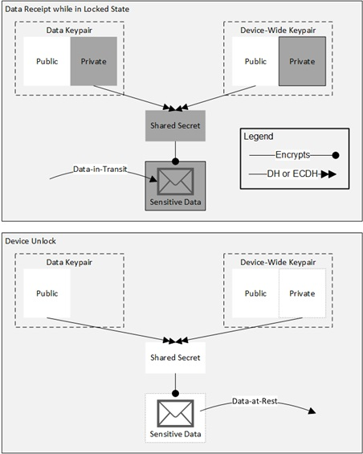

Version: 3.3 2022-05-11 National Information Assurance Partnership
Revision History
Version
Date
Comment
1.0
2013-10-21
Initial Release
1.1
2014-01-12
Typographical changes and additional clarifications in application notes. Removed
assignment from FCS_TLS_EXT.1 and limited testing to those ciphersuites in both
FCS_TLS_EXT.1 and FCS_TLS_EXT.2.
2.0
2015-09-14
Included changes based on Technical Rapid Response Team Decisions. Clarified many
requirements and evaluation activities. Mandated objective requirements:
Added transition dates for some objective requirements. Included
hardware-isolated REK and key storage selections. Allowed key derivation by
REK. Clarified FTP_ITC_EXT.1 and added FDP_UPC_EXT.1. Mandated HTTPS and
TLS for application use. (FDP_UPC_EXT.1) Removed Dual_EC_DRBG as an approved
DRBG. Adopted new TLS requirements. Mandated TSF Wipe upon authentication
failure limit and required number of authentication failures be maintained across
reboot. Clarified Management Class. Included more domain isolation
discussion and tests. Updated Audit requirements and added Auditable Events
table. Added SFR Category Mapping Table. Updated Use Case
Templates. Moved Glossary to Introduction.
3.0
2015-09-17
Included changes based on Technical Rapid Response Team Decisions. Clarified
many requirements and evaluation activities. Mandated objective requirements:
Discard Bluetooth Connection Attempts from Bluetooth Addresses with Existing
Connection (FIA_BLT_EXT.3)
JTAG Disablement (FPT_JTA)
Added new objective requirements:
Application Backup
Biometric Authentication Factor
Access Control
User Authentication
Bluetooth Encryption
WLAN client requirements moved to Extended Package for WLAN Client. Added
SFRs to support BYOD Use Case BYOD Use Case Updated key destruction SFR
3.1
2017-04-05
Included changes based on Technical Rapid Response Team Decisions and incorporated
Technical Decisions. Modified biometric requirements:
FIA_UAU.5 - Added iris, face, voice and vein as supported modalities, in addition
to fingerprint (allowed in version 3)
FIA_BMG_EXT.1.1 - Clarified AA to specify that vendor evidence is acceptable and
expectations of evidence provided.
FIA_BMG_EXT.1.2 - SAFAR was changed to an assignment of a SAFAR no greater than
1:500.
FIA_AFL_EXT.1 - Updated to allow each biometric modality to utilize an individual
or shared counter.
FCS_TLSC_EXT.1.1 - Removed TLS ciphersuites that utilized SHA1 and updated
optional ciphersuites to be uniformed across PPs. FCS_STG_EXT.2.2 - Modified to
require long term trusted channel key material be encrypted by an approved method. FIA_UAU_EXT.1.1 - Modified to allow the long term trusted channel key material to be
available prior to password being entered at start-up.
3.2
2021-04-15
Removed TLS SFRs and utilized TLS Functional Package Removed Bluetooth SFRs
and utilized Bluetooth Module. Bluetooth SFR moved to Implementation Dependent. FPT_TUD_EXT.4.2 renumbered to FPT_TUD_EXT.5.1
3.3
2022-05-11
Integrated Biometrics cPP Module, Included changes based on Technical Rapid Response Team Decisions and open issues from GitHub.
The scope of this Protection Profile (PP) is to describe the security functionality of mobile devices in terms of [CC] and to define functional and assurance requirements for such devices.
1.2 Terms
The following sections list Common Criteria and technology terms used in this document.
1.2.1 Common Criteria Terms
Assurance
Grounds for confidence that a TOE meets the SFRs [CC].
Common Criteria for Information Technology Security Evaluation (International Standard ISO/IEC 15408).
Common Criteria Testing Laboratory
Within the context of the Common Criteria Evaluation and Validation Scheme (CCEVS), an IT security evaluation facility, accredited by the National Voluntary Laboratory Accreditation Program (NVLAP) and approved by the NIAP Validation Body to conduct Common Criteria-based evaluations.
An anti-exploitation feature,
which loads memory mappings into unpredictable locations. ASLR makes it more difficult for
an attacker to redirect control to code that they have introduced into the address space of
a process or the kernel.
Administrator
The Administrator is responsible for management activities,
including setting the policy that is applied by the enterprise on the Mobile Device. This
administrator is likely to be acting remotely and could be the Mobile Device Management
(MDM) Administrator acting through an MDM Agent. If the device is unenrolled, the user is
the administrator.
Auxiliary Boot Modes
Auxiliary boot modes are states in which the device
provides power to one or more components to provide an interface that enables an
unauthenticated user to interact with either a specific component or several components that
exist outside of the device’s fully authenticated, operational state.
Authentication factor, which uses
biometric sample, matched to a biometric authentication template to help establish
identity.
Common Application Developer
Application developers (or software companies)
often produce many applications under the same name. Mobile devices often allow shared
resources by such applications where otherwise resources would not be shared.
Developer modes are states in which additional services are
available to a user in order to provide enhanced system access for debugging of software.
Encrypted Software Keys
These keys are stored in the main file system encrypted
by another key and can be changed and sanitized.
Enrolled State
The state in which the Mobile Device is managed with active
policy settings from the administrator.
Enterprise Data
Enterprise data is any data residing in the enterprise servers,
or temporarily stored on Mobile Devices to which the Mobile Device user is allowed access
according to security policy defined by the enterprise and implemented by the
administrator.
A DEK used to encrypt a file or a director when
File Encryption is used. FEKs are unique to each encrypted file or directory.
Hardware-Isolated Keys
The OS can only access these keys by reference, if
at all, during runtime.
Hybrid Authentication
A hybrid authentication factor is one where a user has to
submit a combination of a biometric sample and a PIN or password and both must pass. If either factor fails, the entire attempt fails. The user shall not be made aware of which factor failed, if either fails.
Immutable Hardware Key
These keys are stored as hardware-protected raw key and
cannot be changed or sanitized.
Key Chaining
The method of using multiple layers of encryption keys to protect
data. A top layer key encrypts a lower layer key, which encrypts the data; this method can
have any number of layers.
The MDM Agent is installed on a Mobile Device as an application or is
part of the Mobile Device’s OS. The MDM Agent establishes a secure connection back to the
MDM Server controlled by the administrator.
Minutia Point
Friction ridge characteristics that are used to individualize a
fingerprint image. Minutia are the points where friction ridges begin, terminate, or split
into two or more ridges. In many fingerprint systems, the minutia points are compared for
recognition purposes.
A device which is composed of a hardware platform and
its system software. The device typically provides wireless connectivity and may include
software for functions like secure messaging, email, web, VPN (Virtual Private Network) connection, and VoIP (Voice
over IP), for access to the protected enterprise network, enterprise data and applications,
and for communicating to other Mobile Devices.
Mobile device management (MDM) products
allow enterprises to apply security policies to mobile devices. This system consists of two
primary components: the MDM Server and the MDM Agent.
Mobile Device User (User)
The individual authorized to physically control and
operate the Mobile Device. Depending on the use case, this can be the device owner or an
individual authorized by the device owner.
Modality (Biometrics)
A type or class of biometric system, such as fingerprint
recognition, facial recognition, iris recognition, voice recognition, signature/sign, and
others.
Mutable Hardware Key
These keys are stored as hardware-protected raw key and can
be changed or sanitized.
Software that runs at the highest privilege level
and can directly control hardware resources. Modern Mobile Devices typically have at least
two primary operating systems: one, which runs on the application processor and one,
which runs on the cellular baseband processor. The OS of the application processor handles most
user interactions and provides the execution environment for apps. The OS of the cellular
baseband processor handles communications with the cellular network and may control other
peripherals. The term OS, without context, may be assumed to refer to the OS of the
application processor.
PIN Authentication Factor
A PIN is a set of numeric or alphabetic characters that may be used
in addition to a biometric factor to provide a hybrid authentication factor. At this time it
is not considered as a stand-alone authentication mechanism. A PIN is distinct from a password in that the allowed character set and required length of a PIN
is typically smaller than that of a password as it is designed to be input quickly.
Password Authentication Factor
A type of authentication factor requiring the
user to provide a secret set of characters to gain access.
Powered Off State
The device has been shut down such that no TOE function can be
performed.
A key tied to the device used to encrypt other
keys.
Sensitive data
Sensitive data shall be identified in the TSS section of the
Security Target (ST) by the ST author. Sensitive data is a subset or all of the Protected
data. Sensitive data may include all user or enterprise data or may be specific application
data such as emails, messaging, documents, calendar items, and contacts. Sensitive data is
protected while in the locked state (FDP_DAR_EXT.2).
Software Keys
The OS access the raw bytes of these keys during runtime.
Data for the operation of the TSF upon which the enforcement of the
requirements relies.
Trust Anchor Database
A list of trusted root Certificate Authority
certificates.
Unenrolled State
The state in which the Mobile Device is not managed.
Unlocked State
Powered on and device functionality is available for use. Implies
user authentication has occurred (when so configured).
Verification (Biometrics)
A task where the biometric system attempts to confirm
an individual’s claimed identity by comparing a submitted sample to one or more previously
enrolled authentication templates.
1.3 Scope of Document
The scope of the Protection Profile within the
development and evaluation process is described in the Common Criteria for Information
Technology Security Evaluation [CC]. In particular, a PP defines the IT security
requirements of a generic type of TOE and specifies the functional and assurance security
measures to be offered by that TOE to meet stated requirements [CC].
1.4 Intended Readership
The target audiences of this PP are Mobile
Device developers, CC consumers, evaluators and schemes.
1.5 TOE Overview
This assurance standard specifies information security
requirements for Mobile Devices for use in an enterprise. A Mobile Device in the context of
this assurance standard is a device, which is composed of a hardware platform and its system
software. The device typically provides wireless connectivity
and may include software for functions
like secure messaging, email, web, VPN connection, and VoIP (Voice over IP), for access to the
protected enterprise network, enterprise data and applications, and for communicating to other
Mobile Devices.
Figure 1 illustrates the network operating environment of the Mobile Device.
Figure 1:
Mobile Device Network Environment
Examples of a "Mobile Device" that should claim conformance to this Protection
Profile include smartphones, tablet computers, and other Mobile Devices with similar
capabilities.
The Mobile Device provides essential services, such as
cryptographic services, data-at-rest protection, and key storage services to support the
secure operation of applications on the device. Additional security features such as security
policy enforcement, application mandatory access control, anti-exploitation features, user
authentication, and software integrity protection are implemented in order to address threats.
This assurance standard describes these essential security services
provided by the Mobile Device and serves as a foundation for a secure mobile architecture. The
wireless connectivity shall be validated against the PP-Module for WLAN Clients. If the
mobile device contains Bluetooth functionality (i.e., has Bluetooth hardware), the Bluetooth
connectivity shall be evaluated against the PP-Module for Bluetooth. As illustrated in Figure 2, it is expected that a typical deployment would also include either
third-party or bundled components. Whether these components are bundled as part of the Mobile
Device by the manufacturer or developed by a third-party, they must be separately validated
against the related assurance standards such as the PP-Module for MDM Agent, PP-Module for VPN
Client, PP-Module for VVoIP, and cPP-Module for Biometrics. It is the responsibility of the architect of
the overall secure mobile architecture to ensure validation of these components. Additional
applications that may come pre-installed on the Mobile Device that are not validated are
considered to be potentially flawed, but not malicious. Examples include email client and web
browser.
Figure 2:
Optional Additional Mobile Device Components
1.6 TOE Usage
The Mobile Device may be operated in a number of use cases. Section use-case-appendix provides use case templates that list those selections,
assignments, and objective requirements that best support the use cases identified by this
Protection Profile. In addition to providing essential security services, the Mobile Device
includes the necessary security functionality to support configurations for these various use
cases. Each use case may require additional configuration and applications to achieve the
desired security. A selection of these use cases is elaborated below.
Several of the use case templates include objective requirements that are strongly desired for
the indicated use cases. Readers can expect those requirements to be made mandatory in a
future revision of this protection profile, and industry should aim to include that security
functionality in products in the near-term.
As of publication of this version of the Protection Profile, meeting the requirements in
Section 5 Security Requirements is necessary for all use cases.
[USE CASE 1] Enterprise-owned device for general-purpose enterprise use and limited personal use
An enterprise-owned device for general-purpose business use is commonly
called Corporately Owned, Personally Enabled (COPE). This use case entails a significant degree of enterprise control over configuration
and, possibly, software inventory. The enterprise elects to provide users with Mobile Devices and additional applications (such as
VPN or email clients) in order to maintain control of their Enterprise data and security of
their networks. Users may use Internet connectivity to browse the web or access corporate mail
or run enterprise applications, but this connectivity may be under significant control of the
enterprise.
[USE CASE 2] Enterprise-owned device for specialized, high security use
An enterprise-owned device with intentionally limited network connectivity, tightly controlled configuration, and limited software inventory is appropriate for specialized, high-security use cases. For example, the device may not be permitted connectivity to any external peripherals. It may only be able to communicate via its Wi-Fi or cellular radios with the enterprise-run network, which may not even permit connectivity to the Internet. Use of the device may entail compliance with policies that are more restrictive than those in any general-purpose use case, yet may mitigate risks to highly sensitive information. As in the previous case, the enterprise will look for additional applications providing enterprise connectivity and services to have a similar level of assurance as the platform.
[USE CASE 3] Personally-owned device for personal and enterprise use
A personally-owned device that is used for both personal activities and enterprise data is commonly called Bring Your Own Device (BYOD). The device may be provisioned for access to enterprise resources after significant personal usage has occurred. Unlike in the enterprise-owned cases, the enterprise is limited in what security policies it can enforce because the user purchased the device primarily for personal use and is unlikely to accept policies that limit the functionality of the device. However, because the enterprise allows the user full (or nearly full) access to the enterprise network, the enterprise will require their own security controls to ensure that enterprise resources are protected from potential threats posed by the personal activities on the device. These controls could potentially be enforced by a separation mechanism built-in to the device itself to distinguish between enterprise and personal activities, or by a third-party application that provides access to enterprise resources and leverages security capabilities provided by the mobile device. Based upon the operational environment and the acceptable risk level of the enterprise, those security functional requirements outlined in Section 5 Security Requirements of this PP along with the selections in the Use Case 3 template defined in Appendix F - Use Case Templates are sufficient for the secure implementation of this BYOD use case.
[USE CASE 4] Personally-owned device for personal and limited enterprise use
A personally-owned device that is used for both personal activities and enterprise data is commonly called Bring Your Own Device (BYOD). This device may be provisioned for limited access to enterprise resources such as enterprise email. Because the user does not have full access to the enterprise or enterprise data, the enterprise may not need to enforce any security policies on the device. However, the enterprise may want secure email and web browsing with assurance that the services being provided to those clients by the Mobile Device are not compromised. Based upon the operational environment and the acceptable risk level of the enterprise, those security functional requirements outlined in Section 5 Security Requirements of this PP are sufficient for the secure implementation of this BYOD use case.
2 Conformance Claims
Conformance Statement
An ST must claim exact conformance to this PP, as defined in the CC and CEM
addenda for Exact Conformance, Selection-Based SFRs, and Optional SFRs (dated May 2017).
The following PP-Modules are allowed to be specified in a PP-Configuration with this PP.
Mobile devices are subject to the threats of traditional
computer systems along with those entailed by their mobile nature. The threats considered in
this PP are those of network eavesdropping, network attacks, physical access,
malicious or flawed applications, persistent presence, and backup
as
detailed in the following sections.
T.NETWORK_EAVESDROP
An attacker is positioned on a wireless communications channel or elsewhere
on the network infrastructure. Attackers may monitor and gain access to data exchanged
between the Mobile Device and other endpoints.
T.NETWORK_ATTACK
An attacker is positioned on a wireless communications channel or elsewhere
on the network infrastructure. Attackers may initiate communications with the Mobile
Device or alter communications between the Mobile Device and other endpoints in order to
compromise the Mobile Device. These attacks include malicious software update of any
applications or system software on the device. These attacks also include malicious web
pages or email attachments, which are usually delivered to devices over the
network.
T.PHYSICAL_ACCESS
An attacker, with physical access, may attempt to access user data on the
Mobile Device including credentials. These physical access threats may involve attacks,
which attempt to access the device through external hardware ports, impersonate the user
authentication mechanisms, through its user interface, and also through direct and
possibly destructive access to its storage media. Note: Defending against device re-use
after physical compromise is out of scope for this Protection Profile.
T.MALICIOUS_APP
Applications loaded onto the Mobile Device may include malicious or
exploitable code. This code could be included intentionally or unknowingly by the
developer, perhaps as part of a software library. Malicious apps may attempt to
exfiltrate data to which they have access. They may also conduct attacks against the
platform’s system software, which will provide them with additional privileges and the
ability to conduct further malicious activities. Malicious applications may be able to
control the device's sensors (GPS, camera, microphone) to gather intelligence about the
user's surroundings even when those activities do not involve data resident or
transmitted from the device. Flawed applications may give an attacker access to perform
network-based or physical attacks that otherwise would have been prevented
T.PERSISTENT_PRESENCE
Persistent presence on a device by an attacker implies that the device has
lost integrity and cannot regain it. The device has likely lost this integrity due to
some other threat vector, yet the continued access by an attacker constitutes an
on-going threat in itself. In this case, the device and its data may be controlled by an
adversary as well as by its legitimate owner.
3.2 Assumptions
The specific conditions listed below are assumed to
exist in the TOE’s Operational Environment. These include both practical realities in the
development of the TOE security requirements and the essential environmental conditions on the
use of the TOE.
A.CONFIG
It is assumed that the TOE’s security functions are configured correctly in a
manner to ensure that the TOE security policies will be enforced on all applicable
network traffic flowing among the attached networks.
A.NOTIFY
It is assumed that the mobile user will immediately notify the administrator
if the Mobile Device is lost or stolen.
A.PRECAUTION
It is assumed that the mobile user exercises precautions to reduce the risk
of loss or theft of the Mobile Device.
A.PROPER_USER
Mobile Device users are not willfully negligent or hostile, and use the
device within compliance of a reasonable Enterprise security policy.
3.3 Organizational Security Policies
This document does not define any additional OSPs.
4 Security Objectives
4.1 Security Objectives for the TOE
O.PROTECTED_COMMS
To address the network eavesdropping (T.NETWORK_EAVESDROP) and network attack
(T.NETWORK_ATTACK) threats described in Section 3.1 Threats, concerning wireless
transmission of Enterprise and user data and configuration data between the TOE and
remote network entities, conformant TOEs will use a trusted communication path. The TOE
must be capable of communicating using mutually authenticated TLS, EAP-TLS, HTTPS, 802.1X, and 802.11-2012. The TOE may optionally communicate using these standard protocols: IPsec,
mutually-authenticated DTLS, or Bluetooth. These protocols are specified by RFCs that offer a variety
of implementation choices. Requirements have been imposed on some of these choices
(particularly those for cryptographic primitives) to provide interoperability and
resistance to cryptographic attack.
While conformant TOEs must
support all of the choices specified in the ST including any optional SFRs defined in
this PP, they may support additional algorithms and protocols. If such additional
mechanisms are not evaluated, guidance must be given to the administrator to make clear
the fact that they were not evaluated.
O.STORAGE
To address the issue of loss of confidentiality of user data in the event of
loss of a Mobile Device (T.PHYSICAL_ACCESS), conformant TOEs will use data-at-rest protection. The TOE will be capable of encrypting data and keys stored on the device and will
prevent unauthorized access to encrypted data.
O.CONFIG
To ensure a Mobile Device protects user and enterprise data that it may
store or process, conformant TOEs will provide the capability to configure and apply
security policies defined by the user and the Enterprise Administrator. If Enterprise
security policies are configured these must be applied in precedence of user specified
security policies.
O.AUTH
To address the issue of loss of confidentiality of user data in the event of
loss of a Mobile Device (T.PHYSICAL_ACCESS), users are required to enter an authentication
factor to the device prior to accessing protected functionality and data. Some
non-sensitive functionality (e.g., emergency calling, text notification) can be accessed
prior to entering the authentication factor. The device will automatically lock
following a configured period of inactivity in an attempt to ensure authorization will
be required in the event of the device being lost or stolen.
Authentication of the endpoints of a trusted communication path is required for network
access to ensure attacks are unable to establish unauthorized network connections to
undermine the integrity of the device.
Repeated attempts by a user to
authorize to the TSF will be limited or throttled to enforce a delay between
unsuccessful attempts.
O.INTEGRITY
To ensure the integrity of the Mobile Device is maintained conformant TOEs
will perform self-tests to ensure the integrity of critical functionality,
software/firmware and data has been maintained. The user shall be notified of any
failure of these self-tests. This will protect against the threat T.PERSISTENT.
To address the issue of an application containing malicious or flawed
code (T.MALICIOUS_APP), the integrity of downloaded updates to software/firmware will be
verified prior to installation/execution of the object on the Mobile Device. In
addition, the TOE will restrict applications to only have access to the system services
and data they are permitted to interact with. The TOE will further protect against
malicious applications from gaining access to data they are not authorized to access by
randomizing the memory layout.
O.PRIVACY
In a BYOD environment (use cases 3 and 4), a personally-owned mobile device
is used for both personal activities and enterprise data. Enterprise management
solutions may have the technical capability to monitor and enforce security policies on
the device. However, the privacy of the personal activities and data must be ensured. In
addition, since there are limited controls that the enterprise can enforce on the
personal side, separation of personal and enterprise data is needed. This will protect
against the T.MALICIOUS_APP and T.PERSISTENT_PRESENCE threats.
4.2 Security Objectives for the Operational Environment
The following
security objectives for the operational environment assist the OS in correctly providing its
security functionality. These track with the assumptions about the environment.
OE.CONFIG
TOE administrators will configure the Mobile Device security functions
correctly to create the intended security policy
OE.NOTIFY
The Mobile User will immediately notify the administrator if the Mobile
Device is lost or stolen.
OE.PRECAUTION
The mobile device user exercises precautions to reduce the risk of loss or theft of
the Mobile Device.
OE.DATA_PROPER_USER
Administrators take measures to ensure that mobile device users are adequately vetted against malicious intent and are made aware of the expectations for appropriate use of the device.
4.3 Security Objectives Rationale
This section describes how the assumptions, threats, and organizational
security policies map to the security objectives.
The threat T.NETWORK_EAVESDROP is countered by O.PROTECTED_COMMS as this provides the
capability to communicate using one (or more) standard protocols as a means to
maintain the confidentiality of data that are transmitted outside of the
TOE.
The threat T.NETWORK_EAVESDROP is countered by O.CONFIG as this provides a
secure configuration of the mobile device to protect data that it
processes.
The threat T.NETWORK_ATTACK is countered by O.PROTECTED_COMMS as this provides the
capability to communicate using one (or more) standard protocols as a means to
maintain the confidentiality of data that are transmitted outside of the
TOE.
The threat T.PHYSICAL_ACCESS is countered by O.STORAGE as this provides the
capability to encrypt all user and enterprise data and authentication keys to ensure
the confidentiality of data that it stores.
The threat T.PHYSICAL_ACCESS is countered by O.AUTH as this provides the
capability to authenticate the user prior to accessing protected functionality and
data.
The threat T.MALICIOUS_APP is countered by O.PROTECTED_COMMS as this provides the
capability to communicate using one (or more) standard protocols as a means to
maintain the confidentiality of data that are transmitted outside of the
TOE.
The threat T.MALICIOUS_APP is countered by O.CONFIG as this provides the
capability to configure and apply security policies to ensure the Mobile Device can
protect user and enterprise data that it may store or process.
The threat T.MALICIOUS_APP is countered by O.AUTH as this provides the
capability to authenticate the user and endpoints of a trusted path to ensure they are
communicating with an authorized entity with appropriate privileges.
The threat T.MALICIOUS_APP is countered by O.INTEGRITY as this provides the
capability to perform self-tests to ensure the integrity of critical functionality,
software/firmware and data has been maintained.
The threat T.PERSISTENT_PRESENCE is countered by O.INTEGRITY as this provides
the capability to perform self-tests to ensure the integrity of critical
functionality, software/firmware and data has been maintained.
This chapter describes the security requirements which have to be fulfilled by the product under evaluation. Those requirements comprise functional components from Part 2 and assurance components from Part 3 of
[CC].
The following conventions are used for the completion of operations:
Refinement operation (denoted by bold text or strikethrough
text): is used to add details to a requirement (including replacing an assignment
with a more restrictive selection) or to remove part of the requirement that is made irrelevant
through the completion of another operation, and thus further restricts a requirement.
Selection (denoted by italicized text): is used to select one or more options
provided by the [CC] in stating a requirement.
Assignment operation (denoted by italicized text): is used to assign a
specific value to an unspecified parameter, such as the length of a password. Showing the
value in square brackets indicates assignment.
Iteration operation: is indicated by appending the SFR name with a slash and unique identifier
suggesting the purpose of the operation, e.g. "/EXAMPLE1."
[selection: Audit records reaching [assignment:
integer value less than 100] percentage of audit capacity, Specifically defined auditable events in Table 3, [assignment:
other auditable events derived from this Protection Profile], [assignment:
no additional auditable events]]
Issuer and Subject name of EST Server. Method of authentication. Issuer and Subject name of certificate used to
authenticate. Content of Certificate Request Message.
Trusted channel protocol. Non-TOE endpoint of
connection.
Application
Note:
Administrator actions are defined as functions labeled as
mandatory for FMT_MOF_EXT.1.2 (i.e. ‘M-MM’ in Table 7). If the TSF
does not support removable media, number 4 is implicitly met.
The
TSF must generate an audit record for all events contained in Table 2. Generating audit records for events in Table 3 is currently objective. It is acceptable to include individual SFRs from Table 3 in the ST, without including the entirety of Table 3.
Table 2 Application Note: FPT_TST_EXT.1 –
Audit of self-tests is required only at initial start-up. Since the TOE "transitions
to non-operational mode" upon failure of a self-test, per FPT_NOT_EXT.1, this is
considered equivalent evidence to an audit record for the failure of a self-test.
FDP_DAR_EXT.1 - "None" must be selected, if the TOE utilizes whole
volume encryption for protected data, since it is not feasible to audit when the
encryption/decryption fails. If the TOE utilizes file-based encryption for protected
data and audits when this encryption/decryption fails, then that auditable event should
be selected.
Table 3 Application Note: If the audit event for FMT_SMF_EXT.1 is included in the ST, it is acceptable
for the initiation of the software update to be audited without indicating the outcome
(success or failure) of the update.
[selection: Additional information in Table 3, no additional information]
Application
Note:
The subject identity is usually the process name/ID. The event
type is often indicated by a severity level, for example, ‘info’, ‘warning’, or
‘error’.
If "no additional auditable events" is selected in the
second selection of FAU_GEN.1.1, then "no additional information" must be selected.
For each audit event selected from Table 3 in
FAU_GEN.1.1 if additional information is required to be recorded within the audit
record, it should be included in this selection.
The evaluator shall check the TSS and ensure that it lists all of the auditable
events and provides a format for audit records. Each audit record format type must
be covered, along with a brief description of each field. The evaluator shall check
to make sure that every audit event type mandated by the PP is described and that
the description of the fields contains the information required in FAU_GEN.1.2.
Guidance
The evaluator shall also make a determination of the administrative actions
that are relevant in the context of this PP including those listed in the Management
section. The evaluator shall examine the administrative guide and make a
determination of which administrative commands are related to the configuration
(including enabling or disabling) of the mechanisms implemented in the TOE that are
necessary to enforce the requirements specified in the PP. The evaluator shall
document the methodology or approach taken while determining which actions in the
administrative guide are security relevant with respect to this PP. The evaluator
may perform this activity as part of the activities associated with ensuring the
AGD_OPE guidance satisfies the requirements.
Tests
The evaluator shall test the TOE’s ability to correctly generate audit records
by having the TOE generate audit records for the events listed in the provided table
and administrative actions. This should include all instances of an event. The
evaluator shall test that audit records are generated for the establishment and
termination of a channel for each of the cryptographic protocols contained in the
ST. For administrative actions, the evaluator shall test that each action determined
by the evaluator above to be security relevant in the context of this PP is
auditable. When verifying the test results, the evaluator shall ensure the audit
records generated during testing match the format specified in the administrative
guide, and that the fields specified in FAU_GEN.1.2 are contained in each audit
record.
Note that the testing here can be accomplished in
conjunction with the testing of the security mechanisms directly. For example,
testing performed to ensure that the administrative guidance provided is correct
verifies that AGD_OPE.1 is satisfied and should address the invocation of the
administrative actions that are needed to verify the audit records are generated as
expected.
The TSF shall provide the administrator with the
capability to read all audited events and record contents
from the audit records.
Application
Note:
The administrator must have access to read the audit record,
perhaps through an API or via an MDM Agent, which transfers the local records stored
on the TOE to the MDM Server where the enterprise administrator may view them. If this
requirement is included in the ST, function 32 must be
included in the selection of FMT_SMF_EXT.1.
The evaluator shall ensure that the TSS lists the location of all logs and the
access controls of those files such that unauthorized modification and deletion are
prevented.
Guidance
There are no guidance evaluation activities for this component.
Tests
Test 1: The evaluator shall attempt to delete the audit trail in a manner that the
access controls should prevent (as an unauthorized user) and shall verify that
the attempt fails.
Test 2: The evaluator shall attempt to modify the audit trail in a manner that the
access controls should prevent (as an unauthorized application) and shall verify
that the attempt fails.
The evaluator shall examine the TSS to ensure that it describes the size limits
on the audit records, the detection of a full audit trail, and the actions taken
by the TSF when the audit trail is full. The evaluator shall ensure that the
actions results in the deletion or overwrite of the oldest stored record.
Guidance
There are no guidance evaluation activities for this component.
Tests
There are no test evaluation activities for this component.
5.1.2 Class: Cryptographic Support (FCS)
This section describes how keys are generated, derived, combined, released and destroyed. There are two major types of keys: DEKs and KEKs. (A REK is considered a KEK.)
DEKs are used to protect data (as in the DAR protection described in FDP_DAR_EXT.1 and FDP_DAR_EXT.2). KEKs are used to protect other keys – DEKs, other KEKs, and other types of keys stored by the user or applications. The following diagram shows an example key hierarchy to illustrate the concepts of this profile.
This example is not meant as an approved design, but ST authors will be expected to provide a diagram illustrating their key hierarchy in order to demonstrate that they meet the requirements of this profile.
Please note if biometric in accordance with the cPP-Module for Biometric Enrollment and Verification is selected in FIA_UAU.5.1, each BAF claimed in FIA_MBV_EXT.1.1 in the cPP-Module for Biometric Enrollment and Verification shall be illustrated in the key hierarchy diagram, to include a description of when and how the BAF is used to release keys. If "hybrid" is selected in FIA_UAU.5.1, meaning that a PIN or password must be used in conjunction with the BAF, this interaction shall be included.
The TSF shall generate asymmetric cryptographic keys in
accordance with a specified cryptographic key generation algorithm
[selection:
RSA schemes using cryptographic key sizes of
[assignment:
2048-bit or greater] that meet FIPS PUB
186-4, "Digital Signature Standard (DSS)", Appendix
B.3,
ECC schemes using [selection:
"NIST curves" P-384 and [selection: P-256, P-521, no other
curves] that meet the following: FIPS PUB 186-4, "Digital
Signature Standard (DSS)", Appendix B.4,
Curve25519 schemes that meet the following: RFC
7748
]
,
FFC schemes using [selection: cryptographic key sizes of 2048-bit or
greater that meet the following: FIPS PUB 186-4,
"Digital Signature Standard (DSS)", Appendix B.1, Diffie-Hellman group 14 that meet the
following: RFC3526, "safe-prime" groups that meet the
following: 'NIST Special Publication 800-56A Revision 3,
"Recommendation for Pair-Wise Key Establishment Schemes Using Discrete
Logarithm Cryptography"']
Application
Note:
The ST author must select all key generation schemes used for
key establishment and entity authentication. When key generation is used for key
establishment, the schemes in FCS_CKM.2/UNLOCKED and selected cryptographic protocols
must match the selection. When key generation is used for entity authentication, the
public key may be associated with an X.509v3 certificate.
If the
TOE acts as a receiver in the RSA key establishment scheme, the TOE does not need to
implement RSA key generation.
The evaluator shall ensure that the TSS identifies the key sizes supported by
the TOE. If the ST specifies more than one scheme, the evaluator shall examine the
TSS to verify that it identifies the usage for each scheme.
Guidance
The evaluator shall verify that the AGD guidance instructs the
administrator how to configure the TOE to use the selected key generation schemes
and key sizes for all uses defined in this PP.
Tests
Evaluation Activity Note: The following tests require the developer to
provide access to a test platform that provides the evaluator with tools that are
typically not found on factory products.
The evaluator shall verify the
implementation of RSA Key Generation by the TOE using the Key Generation test. This
test verifies the ability of the TSF to correctly produce values for the key
components including the public verification exponent e, the private
prime factors p and q, the public modulus n and the
calculation of the private signature exponent d.
Key Pair generation specifies 5 ways (or methods) to generate the primes
p and q. These include:
Random Primes:
Provable primes
Probable primes
Primes with Conditions:
Primes p1, p2, q1,q2, p and q shall all be provable primes
Primes p1, p2, q1, and q2 shall be provable primes and p and q shall
be probable primes
Primes p1, p2, q1,q2, p and q shall all be probable primes
To test the key generation method for the Random Provable primes method
and for all the Primes with Conditions methods, the evaluator must seed the TSF key
generation routine with sufficient data to deterministically generate the RSA key
pair. This includes the random seeds, the public exponent of the RSA key, and the
desired key length. For each key length supported, the evaluator shall have the TSF
generate 25 key pairs. The evaluator shall verify the correctness of the TSF’s
implementation by comparing values generated by the TSF with those generated from a
known good implementation.
If possible, the Random Probable
primes method should also be verified against a known good implementation as
described above. Otherwise, the evaluator shall have the TSF generate 10 keys pairs
for each supported key length nlen and verify:
n = p*q
p and q are probably prime according to Miller-Rabin tests
GCD(p-1,e) = 1
GCD(q-1,e) = 1
2^16 < e < 2^256 and e is an odd integer
|p-q| > 2^(nlen/2 – 100)
p >= squareroot(2)*( 2^(nlen/2 -1) )
q >= squareroot(2)*( 2^(nlen/2 -1) )
2^(nlen/2) < d < LCM(p-1,q-1)
e*d = 1 mod LCM(p-1,q-1)
Key Generation for FIPS 186-4 Elliptic Curve Cryptography
(ECC) FIPS 186-4 ECC Key Generation Test
For each
supported NIST curve, i.e. P-256, P-384 and P-521, the evaluator shall require the
implementation under test (IUT) to generate 10 private/public key pairs. The private
key shall be generated using an approved random bit generator (RBG). To determine
correctness, the evaluator shall submit the generated key pairs to the public key
verification (PKV) function of a known good implementation.
For
each supported NIST curve, i.e. P-256, P-384 and P-521, the evaluator shall generate
10 private/public key pairs using the key generation function of a known good
implementation and modify five of the public key values so that they are incorrect,
leaving five values unchanged (i.e. correct). The evaluator shall obtain in response
a set of 10 PASS/FAIL values.
Key Generation for Curve25519
The evaluator shall require the implementation under test (IUT) to generate 10 private/public key pairs. The private key shall be generated as specified in RFC 7748 using an approved random bit generator (RBG) and shall be written in little-endian order (least significant byte first). To determine correctness, the evaluator shall submit the generated key pairs to the public key verification (PKV) function of a known good implementation.
Note: Assuming the PKV function of the good implementation will (using little-endian order):
Confirm the private and public keys are 32-byte values
Confirm the three least significant bits of the first byte of the private key are zero
Confirm the most significant bit of the last byte is zero
Confirm the second most significant bit of the last byte is one
Calculate the expected public key from the private key and confirm it matches the supplied public key
The evaluator shall generate 10 private/public key pairs using the key generation function of a known good implementation and modify 5 of the public key values so that they are incorrect, leaving five values unchanged (i.e. correct). The evaluator shall obtain in response a set of 10 PASS/FAIL values.
Key Generation for Finite-Field Cryptography
(FFC) The evaluator shall verify the implementation of the
Parameters Generation and the Key Generation for FFC by the TOE using the Parameter
Generation and Key Generation test. This test verifies the ability of the TSF to
correctly produce values for the field prime p, the cryptographic prime q (dividing
p-1), the cryptographic group generator g, and the calculation of the private key x
and public key y. The Parameter generation specifies 2 ways (or methods) to
generate the cryptographic prime q and the field prime p:
Cryptographic and Field Primes:
Primes q and p shall both be provable primes
Primes q and field prime p shall both be probable primes
and two ways to generate the cryptographic group generator
g:
Cryptographic Group Generator:
Generator g constructed through a verifiable process
Generator g constructed through an unverifiable process
The Key generation specifies 2 ways to generate the private key
x:
len(q) + 64 bit output of RBG, followed by a mod q-1 operation where
1<= x<=q-1
The security strength of the RBG must be at least that of the security
offered by the FFC parameter set.
To test the cryptographic and
field prime generation method for the provable primes method or the group
generator g for a verifiable process, the evaluator must seed the TSF parameter
generation routine with sufficient data to deterministically generate the parameter
set.
For each key length supported, the evaluator shall have the
TSF generate 25 parameter sets and key pairs. The evaluator shall verify the
correctness of the TSF’s implementation by comparing values generated by the TSF
with those generated from a known good implementation. Verification must also confirm
Diffie-Hellman Group 14 and FFC Schemes using "safe-prime" groups
Testing for FFC Schemes using Diffie-Hellman group 14 or "safe-prime" groups is done as part of testing in FCS_CKM.2/UNLOCKED.
The TSF shall perform cryptographic key
establishment in accordance with a specified cryptographic key
establishment method [selection:
RSA-based key establishment schemes that meet the following
[selection:
NIST Special Publication 800-56B, “Recommendation for Pair-Wise
Key Establishment Schemes Using Integer Factorization
Cryptography”,
RSAES-PKCS1-v1_5 as specified in Section 7.2 of RFC 8017,
"Public-Key Cryptography Standards (PKCS) #1:RSA Cryptography Specifications
Version 2.2"
],
Elliptic curve-based key establishment schemes
that meets the following: NIST Special Publication 800-56A Revision 3,
"Recommendation for Pair-Wise Key Establishment Schemes Using Discrete Logarithm
Cryptography",
Finite field-based key establishment schemes
that meets the following: NIST Special Publication 800-56A Revision 3,
"Recommendation for Pair-Wise Key Establishment Schemes Using Discrete Logarithm
Cryptography",
Key establishment schemes using Diffie-Hellman group 14 that
meets the following: RFC 3526
Application
Note:
The ST author must select all key establishment schemes used for the selected cryptographic protocols and any RSA-based key establishment schemes that may be used to satisfy FDP_DAR or FCS_STG. Also, FCS_TLSC_EXT.1 requires ciphersuites that use RSA-based key establishment schemes.
The RSA-based key establishment schemes are described in Section 9 of NIST SP 800-56B; however, Section 9 relies on implementation of other sections in SP 800-56B. If the TOE only acts as a receiver in the RSA key establishment scheme, the TOE does not need to implement RSA key generation.
The elliptic curves used for the key establishment scheme must correlate with the curves specified in FCS_CKM.1.1.
The domain parameters used for the finite field-based key establishment scheme are specified by the key generation according to FCS_CKM.1.1. The finite field-based key establishment schemes that conform to NIST SP 800-56A Revision 3 correspond to the "safe-prime" groups selection in FCS_CKM.1.1.
The evaluator shall ensure that the supported key establishment schemes
correspond to the key generation schemes identified in FCS_CKM.1.1. If the ST
specifies more than one scheme, the evaluator shall examine the TSS to verify that
it identifies the usage for each scheme.
If Diffie-Hellman group
14 is selected from FCS_CKM.2/UNLOCKED, the TSS shall describe how the implementation
meets RFC 3526 Section 3.
Guidance
The evaluator shall verify that the AGD guidance instructs the
administrator how to configure the TOE to use the selected key establishment
schemes.
Tests
Evaluation Activity Note: The following tests require the developer to
provide access to a test platform that provides the evaluator with tools that are
typically not found on factory products.
The evaluator shall verify the implementation of the key
establishment schemes supported by the TOE using the applicable tests below.
SP800-56A Revision 3 Key Establishment Schemes
The evaluator shall verify a TOE's implementation of SP800-56A
Revision 3 key establishment schemes using the following Function and Validity
tests. These validation tests for each key agreement scheme verify that a TOE has
implemented the components of the key agreement scheme according to the
specifications in the Recommendation. These components include the calculation of
the DLC primitives (the shared secret value Z) and the calculation of the derived
keying material (DKM) via the Key Derivation Function (KDF). If key confirmation is
supported, the evaluator shall also verify that the components of key confirmation
have been implemented correctly, using the test procedures described below. This
includes the parsing of the DKM, the generation of MACdata and the calculation of
MacTag.
Function Test
The Function test verifies the ability of the TOE to implement
the key agreement schemes correctly. To conduct this test the evaluator shall
generate or obtain test vectors from a known good implementation of the TOE
supported schemes. For each supported key agreement scheme-key agreement role
combination, KDF type, and, if supported, key confirmation role- key confirmation
type combination, the tester shall generate 10 sets of test vectors. The data set
consists of one set of domain parameter values (FFC) or the NIST approved curve
(ECC) per 10 sets of public keys. These keys are static, ephemeral or both depending
on the scheme being tested.
The evaluator shall obtain the DKM,
the corresponding TOE’s public keys (static or ephemeral), the MAC tags, and
any inputs used in the KDF, such as the Other Information field OI and TOE id
fields.
If the TOE does not use a KDF defined in SP 800-56A
Revision 3, the evaluator shall obtain only the public keys and the hashed value of
the shared secret.
The evaluator shall verify the correctness of
the TSF’s implementation of a given scheme by using a known good implementation to
calculate the shared secret value, derive the keying material DKM, and compare
hashes or MAC tags generated from these values.
If key
confirmation is supported, the TSF shall perform the above for each implemented
approved MAC algorithm.
Validity Test
The Validity test verifies the ability of the TOE to recognize
another party’s valid and invalid key agreement results with or without key
confirmation. To conduct this test, the evaluator shall obtain a list of the
supporting cryptographic functions included in the SP800-56A Revision 3 key
agreement implementation to determine which errors the TOE should be able to
recognize. The evaluator generates a set of 24 (FFC) or 30 (ECC) test vectors
consisting of data sets including domain parameter values or NIST approved curves,
the evaluator’s public keys, the TOE’s public/private key pairs, MacTag, and any
inputs used in the KDF, such as the other info and TOE id fields.
The evaluator shall inject an error in some of the test vectors to test that the TOE
recognizes invalid key agreement results caused by the following fields being
incorrect: the shared secret value Z, the DKM, the other information field OI, the
data to be MACed, or the generated MacTag. If the TOE contains the full or partial
(only ECC) public key validation, the evaluator will also individually inject errors
in both parties’ static public keys, both parties’ ephemeral public keys and the
TOE’s static private key to assure the TOE detects errors in the public key
validation function or the partial key validation function (in ECC only). At
least two of the test vectors shall remain unmodified and therefore should result in
valid key agreement results (they should pass).
The TOE shall use
these modified test vectors to emulate the key agreement scheme using the
corresponding parameters. The evaluator shall compare the TOE’s results with the
results using a known good implementation verifying that the TOE detects these
errors.
SP800-56B Key Establishment Schemes
The evaluator shall verify that
the TSS describes whether the TOE acts as a sender, a recipient, or both for
RSA-based key establishment schemes.
If the TOE acts as a sender,
the following evaluation activity shall be performed to ensure the proper operation
of every TOE supported combination of RSA-based key establishment scheme:
To conduct this test the evaluator shall generate or obtain test vectors from a
known good implementation of the TOE supported schemes. For each combination of
supported key establishment scheme and its options (with or without key confirmation
if supported, for each supported key confirmation MAC function if key confirmation
is supported, and for each supported mask generation function if KTS-OAEP is
supported), the tester shall generate 10 sets of test vectors. Each test vector
shall include the RSA public key, the plaintext keying material, any additional
input parameters if applicable, the MacKey and MacTag if key confirmation is
incorporated, and the outputted ciphertext. For each test vector, the evaluator
shall perform a key establishment encryption operation on the TOE with the same
inputs (in cases where key confirmation is incorporated, the test shall use the
MacKey from the test vector instead of the randomly generated MacKey used in normal
operation) and ensure that the outputted ciphertext is equivalent to the ciphertext
in the test vector.
If the TOE acts as a receiver, the following
evaluation activities shall be performed to ensure the proper operation of every TOE
supported combination of RSA-based key establishment scheme: To conduct
this test the evaluator shall generate or obtain test vectors FCS_CKM.2.1/LOCKED from a
known good implementation of the TOE supported schemes. For each combination of
supported key establishment scheme and its options (with our without key
confirmation if supported, for each supported key confirmation MAC function if key
confirmation is supported, and for each supported mask generation function if
KTS-OAEP is supported), the tester shall generate 10 sets of test vectors. Each test
vector shall include the RSA private key, the plaintext keying material (KeyData),
any additional input parameters if applicable, the MacTag in cases where key
confirmation is incorporated, and the outputted ciphertext. For each test vector,
the evaluator shall perform the key establishment decryption operation on the TOE
and ensure that the outputted plaintext keying material (KeyData) is equivalent to
the plaintext keying material in the test vector. In cases where key confirmation is
incorporated, the evaluator shall perform the key confirmation steps and ensure that
the outputted MacTag is equivalent to the MacTag in the test vector.
The evaluator shall ensure that the TSS describes how the TOE
handles decryption errors. In accordance with NIST Special Publication 800-56B, the
TOE must not reveal the particular error that occurred, either through the contents
of any outputted or logged error message or through timing variations. If KTS-OAEP
is supported, the evaluator shall create separate contrived ciphertext values that
trigger each of the three decryption error checks described in NIST Special
Publication 800-56B section 7.2.2.3, ensure that each decryption attempt results in
an error, and ensure that any outputted or logged error message is identical for
each. If KTS-KEM-KWS is supported, the evaluator shall create separate contrived
ciphertext values that trigger each of the three decryption error checks described
in NIST Special Publication 800-56B section 7.2.3.3, ensure that each decryption
attempt results in an error, and ensure that any outputted or logged error message
is identical for each.
RSAES-PKCS1-v1_5 Key Establishment Schemes
The evaluator shall
verify the correctness of the TSF's implementation of RSAES-PKCS1-v1_5 by using a
known good implementation for each protocol selected in FTP_ITC_EXT.1 that uses
RSAES-PKCS1-v1_5.
Diffie-Hellman Group 14
The evaluator shall
verify the correctness of the TSF's implementation of Diffie-Hellman group 14 by
using a known good implementation for each protocol selected in FTP_ITC_EXT.1 that
uses Diffie-Hellman Group 14.
FFC Schemes using "safe-prime" groups
The evaluator shall verify the correctness of the TSF's implementation of
"safe-prime" groups by using a known good implementation for each protocol selected
in FTP_ITC_EXT.1 that uses "safe-prime" groups. This test must be performed for each
"safe-prime" group that each protocol uses.
The TSF shall perform cryptographic key
establishment in accordance with a specified cryptographic key
establishment method: [selection:
RSA-based key establishment schemes that meet the following:
NIST Special Publication 800-56B, “Recommendation for Pair-Wise Key
Establishment Schemes Using Integer Factorization
Cryptography”,
Elliptic curve-based key establishment schemes
that meets the following: [selection:
NIST Special Publication 800-56A Revision 3,
"Recommendation for Pair-Wise Key Establishment Schemes Using Discrete
Logarithm Cryptography",
RFC 7748, "Elliptic Curves for
Security"
]
,
Finite field-based key establishment schemes
that meets the following: NIST Special Publication 800-56A Revision 3,
"Recommendation for Pair-Wise Key Establishment Schemes Using Discrete Logarithm
Cryptography"
]
for the purposes of encrypting sensitive data received while the device is
locked.
Application
Note:
The RSA-based key establishment schemes are described in
Section 9 of NIST SP 800-56B; however, Section 9 relies on implementation of other
sections in SP 800-56B. If the TOE acts as a receiver in the RSA key establishment
scheme, the TOE does not need to implement RSA key generation.
The
elliptic curves used for the key establishment scheme must correlate with the curves
specified in FCS_CKM.1.1.
The domain parameters used for the finite
field-based key establishment scheme are specified by the key generation according to
FCS_CKM.1.1.
There are no TSS evaluation activities for this component.
Guidance
There are no guidance evaluation activities for this component.
Tests
The test for SP800-56A Revision 3 and SP800-56B key establishment schemes is
performed in association with FCS_CKM.2/UNLOCKED.
Curve25519 Key Establishment Schemes
The evaluator
shall verify a TOE's implementation of the key agreement scheme using the following
Function and Validity tests. These validation tests for each key agreement scheme
verify that a TOE has implemented the components of the key agreement scheme
according to the specification. These components include the calculation of the
shared secret K and the hash of K.
Function Test
The Function test verifies the
ability of the TOE to implement the key agreement schemes correctly. To conduct this
test the evaluator shall generate or obtain test vectors from a known good
implementation of the TOE supported schemes. For each supported key agreement role
and hash function combination, the tester shall generate 10 sets of public keys. These keys are static, ephemeral or both depending on the scheme being tested.
The evaluator shall obtain the shared secret value K, and the
hash of K.
The evaluator shall verify the correctness of the TSF’s
implementation of a given scheme by using a known good implementation to calculate
the shared secret value K and compare the hash generated from this value.
Validity Test
The Validity test verifies the
ability of the TOE to recognize another party’s valid and invalid key agreement
results. To conduct this test, the evaluator generates a set of 30 test vectors
consisting of data sets including the evaluator’s public keys and the TOE’s
public/private key pairs.
The evaluator shall inject an error in
some of the test vectors to test that the TOE recognizes invalid key agreement
results caused by the following fields being incorrect: the shared secret value K or
the hash of K. At least two of the test vectors shall remain unmodified and
therefore should result in valid key agreement results (they should pass).
The TOE shall use these modified test vectors to emulate the key
agreement scheme using the corresponding parameters. The evaluator shall compare the
TOE’s results with the results using a known good implementation verifying that the
TOE detects these errors.
Application
Note:
Either asymmetric or symmetric keys are allowed; the ST author
makes the selection appropriate for the device. Symmetric keys must be of size 128 or
256 bits in order to correspond with FCS_COP.1/ENCRYPT. Asymmetric keys may be of any
strength corresponding to FCS_CKM.1.
The raw key material of
"immutable hardware" REKs is computationally processed by hardware and software
cannot access the raw key material. Thus if "immutable-hardware" is selected in
FCS_CKM_EXT.1.1 it implicitly meets FCS_CKM_EXT.7. If "mutable-hardware" is selected
in FCS_CKM_EXT.1.1, FCS_CKM_EXT.7 must be included in the ST.
The
lack of a public/documented API for importing or exporting the REK, when a
private/undocumented API exists, is not sufficient to meet this requirement.
The RBG used to generate a REK may be an RBG native to the hardware
key container or may be an off-device RBG. If performed by an off-device RBG, the
device manufacturer must not be able to access a REK after the manufacturing process
has been completed. The Evaluation Activities for these two cases differ.
The evaluator shall review the TSS to determine that a REK is supported by the
TOE, that the TSS includes a description of the protection provided by the TOE for a
REK, and that the TSS includes a description of the method of generation of a REK.
The evaluator shall verify that the description of the protection
of a REK describes how any reading, import, and export of that REK is prevented. For example, if the hardware protecting the REK is removable, the description
should include how other devices are prevented from reading the REK. The evaluator
shall verify that the TSS describes how encryption/decryption/derivation actions are
isolated so as to prevent applications and system-level processes from reading the
REK while allowing encryption/decryption/derivation by the key.
The evaluator shall verify that the description includes how the OS is
prevented from accessing the memory containing REK key material, which software is
allowed access to the REK, how any other software in the execution environment is
prevented from reading that key material, and what other mechanisms prevent the REK
key material from being written to shared memory locations between the OS and
the separate execution environment.
If key derivation is
performed using a REK, the evaluator shall ensure that the TSS description includes
a description of the key derivation function and shall verify the key derivation
uses an approved derivation mode and key expansion algorithm according to
FCS_CKM_EXT.3.2.
If REKs is/are generated on-device, the TSS shall include a description
of the generation mechanism including what triggers a generation, how the
functionality described by FCS_RBG_EXT.1 is invoked, and whether a separate
instance of the RBG is used for REKs.
If REKs is/are generated off-device, the TSS shall include evidence that
the RBG meets FCS_RBG_EXT.1. This will likely necessitate a second set of RBG
documentation equivalent to the documentation provided for the RBG Evaluation
Activities. In addition, the TSS shall describe the manufacturing process that
prevents the device manufacturer from accessing any REKs.
Guidance
There are no guidance evaluation activities for this component.
Tests
There are no test evaluation activities for this component.
from the combination of a randomly generated DEK with another DEK or
salt in a way that preserves the effective entropy of each factor by [selection: using an XOR operation, concatenating the keys and using a KDF (as described in SP
800-108), concatenating the keys and using a KDF (as described in SP
800-56C)]
] with entropy corresponding to the security strength of AES key sizes of [selection: 128, 256] bits.
Application
Note:
The intent of this requirement is to ensure that the DEK
cannot be recovered with less work than a full exhaust of the key space for AES. The
key generation capability of the TOE uses an RBG implemented on the TOE device
(FCS_RBG_EXT.1). Either 128-bit or 256-bit (or both) are allowed; the ST author makes
the selection appropriate for the device. A DEK is used in addition to the KEK so that
authentication factors can be changed without having to re-encrypt all of the user
data on the device.
The ST author selects all applicable DEK
generation types implemented by the TOE.
SP 800-56C specifies a two-step key derivation
procedure that employs an extraction-then-expansion technique for deriving keying
material from a shared secret generated during a key establishment scheme. The
Randomness Extraction step as described in Section 5 of SP 800-56C is followed by Key
Expansion using the key derivation functions defined in SP 800-108 (as described in
Section 6 of SP 800-56C).
The evaluator shall ensure that the documentation of the product's encryption key
management is detailed enough that, after reading, the product's key management hierarchy is clear
and that it meets the requirements to ensure the keys are adequately protected. The evaluator shall ensure
that the documentation includes both an essay and one or more diagrams. Note that this may also be documented as
separate proprietary evidence rather than being included in the TSS.
The evaluator shall also examine the key hierarchy section of the TSS to ensure that
the formation of all DEKs is described and that the key sizes match that described
by the ST author. The evaluator shall examine the key hierarchy section of the TSS
to ensure that each DEK is generated or combined from keys of equal or greater
security strength using one of the selected methods.
If the symmetric DEK is generated by an RBG, the evaluator shall review
the TSS to determine that it describes how the functionality described by
FCS_RBG_EXT.1 is invoked. The evaluator uses the description of the RBG
functionality in FCS_RBG_EXT.1 or documentation available for the operational
environment to determine that the key size being requested is greater than or
equal to the key size and mode to be used for the encryption/decryption of the
data.
If the DEK is formed from a combination, the evaluator shall verify that
the TSS describes the method of combination and that this method is either an
XOR or a KDF to justify that the effective entropy of each factor is preserved.
The evaluator shall also verify that each combined value was originally generated
from an Approved DRBG described in FCS_RBG_EXT.1.
If “concatenating the keys and using a KDF (as described in (SP 800-56C)”
is selected, the evaluator shall ensure the TSS includes a description of the
randomness extraction step.
The description must include how an approved untruncated MAC function is
being used for the randomness extraction step and the evaluator must verify the TSS
describes that the output length (in bits) of the MAC function is at least as large
as the targeted security strength (in bits) of the parameter set employed by the key
establishment scheme (see Tables 1-3 of SP 800-56C).
The
description must include how the MAC function being used for the randomness
extraction step is related to the PRF used in the key expansion and verify the TSS
description includes the correct MAC function:
If an HMAC-hash is used in the randomness extraction step, then the same
HMAC-hash (with the same hash function hash) is used as the PRF in the key
expansion step.
If an AES-CMAC (with key length 128, 192, or 256 bits) is used in the
randomness extraction step, then AES-CMAC with a 128-bit key is used as the PRF
in the key expansion step.
The description must include the lengths of the salt values being used in
the randomness extraction step and the evaluator shall verify the TSS
description includes correct salt lengths:
If an HMAC-hash is being used as the MAC, the salt length can be any value
up to the maximum bit length permitted for input to the hash function
hash.
If an AES-CMAC is being used as the MAC, the salt length shall be the same
length as the AES key (i.e. 128, 192, or 256 bits).
(conditional) If a KDF is used, the evaluator shall ensure that the TSS
includes a description of the key derivation function and shall verify the key
derivation uses an approved derivation mode and key expansion algorithm according to
SP 800-108 or SP 800-56C.
Guidance
The evaluator uses the description of the RBG functionality in
FCS_RBG_EXT.1 or documentation available for the operational environment to
determine that the key size being generated or combined is identical to the key size
and mode to be used for the encryption/decryption of the
data.
Tests
If a KDF is used, the evaluator shall perform one or more of the following
tests to verify the correctness of the key derivation function, depending on the
modes that are supported. Table 4 maps the data fields to the
notations used in SP 800-108 and SP 800-56C.
Table 4: Notations used in SP 800-108 and SP
800-56C
The evaluator shall determine
the following characteristics of the key derivation function:
One or more pseudorandom functions that are supported by the
implementation (PRF).
One or more of the values {8, 16, 24, 32} that equal the length of the
binary representation of the counter (r).
The length (in bits) of the output of the PRF (h).
Minimum and maximum values for the length (in bits) of the derived keying
material (L). These values can be equal if only one value of L is supported. These must be evenly divisible by h.
Up to two values of L that are NOT evenly divisible by h.
Location of the counter relative to fixed input data: before, after, or in
the middle.
Counter before fixed input data: fixed input data string length (in
bytes), fixed input data string value.
Counter after fixed input data: fixed input data string length (in
bytes), fixed input data string value.
Counter in the middle of fixed input data: length of data before
counter (in bytes), length of data after counter (in bytes), value of string
input before counter, value of string input after counter.
For each supported combination of I_length, MAC, salt, PRF, counter
location, value of r, and value of L, the evaluator shall generate 10 test vectors
that include pseudorandom input values I, and pseudorandom salt values. If there is
only one value of L that is evenly divisible by h, the evaluator shall generate 20
test vectors for it. For each test vector, the evaluator shall supply this data to
the TOE in order to produce the keying material output.
The
results from each test may either be obtained by the evaluator directly or by
supplying the inputs to the implementer and receiving the results in response. To
determine correctness, the evaluator shall compare the resulting values to those
obtained by submitting the same inputs to a known good implementation.
Feedback Mode Tests:
The evaluator shall determine
the following characteristics of the key derivation function:
One or more pseudorandom functions that are supported by the
implementation (PRF).
The length (in bits) of the output of the PRF (h).
Minimum and maximum values for the length (in bits) of the derived keying
material (L). These values can be equal if only one value of L is supported. These must be evenly divisible by h.
Up to two values of L that are NOT evenly divisible by h.
One or more of the values {8, 16, 24, 32} that equal the length of the
binary representation of the counter (r).
Location of the counter relative to fixed input data: before, after, or
in the middle.
Counter before fixed input data: fixed input data string length (in
bytes), fixed input data string value.
Counter after fixed input data: fixed input data string length (in
bytes), fixed input data string value.
Counter in the middle of fixed input data: length of data before
counter (in bytes), length of data after counter (in bytes), value of string
input before counter, value of string input after counter.
For each supported combination of I_length, MAC, salt, PRF, counter
location (if a counter is used), value of r (if a counter is used), and value of L,
the evaluator shall generate 10 test vectors that include pseudorandom input values
I and pseudorandom salt values. If the KDF supports zero-length IVs, five of these
test vectors will be accompanied by pseudorandom IVs and the other five will use
zero-length IVs. If zero-length IVs are not supported, each test vector will be
accompanied by an pseudorandom IV. If there is only one value of L that is evenly
divisible by h, the evaluator shall generate 20 test vectors for
it.
For each test vector, the evaluator shall supply this data to
the TOE in order to produce the keying material output. The results from each test
may either be obtained by the evaluator directly or by supplying the inputs to the
implementer and receiving the results in response. To determine correctness, the
evaluator shall compare the resulting values to those obtained by submitting the
same inputs to a known good implementation.
Double Pipeline Iteration Mode Tests:
The
evaluator shall determine the following characteristics of the key derivation
function:
One or more pseudorandom functions that are supported by the
implementation (PRF).
The length (in bits) of the output of the PRF (h).
Minimum and maximum values for the length (in bits) of the derived keying
material (L). These values can be equal if only one value of L is supported. These must be evenly divisible by h.
Up to two values of L that are NOT evenly divisible by h.
Whether or not a counter is used, and if so:
One or more of the values {8, 16, 24, 32} that equal the length of the
binary representation of the counter (r).
Location of the counter relative to fixed input data: before, after, or
in the middle.
Counter before fixed input data: fixed input data string length (in
bytes), fixed input data string value.
Counter after fixed input data: fixed input data string length (in
bytes), fixed input data string value.
Counter in the middle of fixed input data: length of data before
counter (in bytes), length of data after counter (in bytes), value of string
input before counter, value of string input after counter.
For each supported combination of I_length, MAC, salt, PRF, counter
location (if a counter is used), value of r (if a counter is used), and value of L,
the evaluator shall generate 10 test vectors that include pseudorandom input values
I, and pseudorandom salt values. If there is only one value of L that is evenly
divisible by h, the evaluator shall generate 20 test vectors for
it.
For each test vector, the evaluator shall supply this data to
the TOE in order to produce the keying material output. The results from each test
may either be obtained by the evaluator directly or by supplying the inputs to the
implementer and receiving the results in response. To determine correctness, the
evaluator shall compare the resulting values to those obtained by submitting the
same inputs to a known good implementation.
The TSF shall generate all KEKs using one of the following methods:
Derive the KEK from a Password Authentication Factor according to
FCS_COP.1.1/CONDITION and
[selection:
Generate the KEK using an RBG that meets this profile (as specified in
FCS_RBG_EXT.1),
Generate the KEK using a key generation scheme that meets this profile
(as specified in FCS_CKM.1),
Combine the KEK from other KEKs in a way that preserves the effective
entropy of each factor by [selection: using an XOR operation, concatenating the keys and using a KDF (as described in SP
800-108), concatenating the keys and using a KDF (as described in SP
800-56C), encrypting one key with another]
Application
Note:
The conditioning of passwords is performed in accordance with
FCS_COP.1/CONDITION.
It is expected that key generation derived
from conditioning, using an RBG or generation scheme, and through combination, will
each be necessary to meet the requirements set out in this document. In particular,
Figure 3 has KEKs of each type: KEK_3 is generated, KEK_1 is derived
from a Password Authentication Factor, and KEK_2 is combined from two KEKs. In Figure 3, KEK_3 may either be a symmetric key generated from an RBG or an
asymmetric key generated using a key generation scheme according to FCS_CKM.1.
If combined, the ST author should describe which method of
combination is used in order to justify that the effective entropy of each factor is
preserved.
SP 800-56C specifies a two-step key derivation procedure that
employs an extraction-then-expansion technique for deriving keying material from a
shared secret generated during a key establishment scheme. The Randomness Extraction
step as described in Section 5 of SP 800-56C is followed by Key Expansion using the
key derivation functions defined in SP 800-108 (as described in Section 6 of SP
800-56C).
The evaluator shall examine the key hierarchy section of the TSS to ensure that
the formation of all KEKs are described and that the key sizes match that described
by the ST author. The evaluator shall examine the key hierarchy section of the TSS
to ensure that each key (DEKs, software-based key storage, and KEKs) is encrypted by
keys of equal or greater security strength using one of the selected
methods.
The evaluator shall review the TSS to verify that it
contains a description of the conditioning used to derive KEKs. This description must
include the size and storage location of salts. This activity may be performed in
combination with that for FCS_COP.1/CONDITION.
(conditional) If
the symmetric KEK is generated by an RBG, the evaluator shall review the TSS to
determine that it describes how the functionality described by FCS_RBG_EXT.1 is
invoked. The evaluator uses the description of the RBG functionality in
FCS_RBG_EXT.1 or documentation available for the operational environment to
determine that the key size being requested is greater than or equal to the key size
and mode to be used for the encryption/decryption of the data.
(conditional) If the KEK is generated according to an asymmetric key scheme, the
evaluator shall review the TSS to determine that it describes how the functionality
described by FCS_CKM.1 is invoked. The evaluator uses the description of the key
generation functionality in FCS_CKM.1 or documentation available for the operational
environment to determine that the key strength being requested is greater than or
equal to 112 bits.
(conditional) If the KEK is formed from a
combination, the evaluator shall verify that the TSS describes the method of
combination and that this method is either an XOR, a KDF, or
encryption.
(conditional) If a KDF is used, the evaluator shall
ensure that the TSS includes a description of the key derivation function and shall
verify the key derivation uses an approved derivation mode and key expansion
algorithm according to SP 800-108.
(conditional) If
"concatenating the keys and using a KDF (as described in (SP 800-56C)" is selected,
the evaluator shall ensure the TSS includes a description of the randomness
extraction step. The description must include
How an approved untruncated MAC function is being used for the randomness
extraction step and the evaluator must verify the TSS describes that the output
length (in bits) of the MAC function is at least as large as the targeted
security strength (in bits) of the parameter set employed by the key
establishment scheme (see Tables 1-3 of SP 800-56C).
How the MAC function being used for the randomness extraction step is
related to the PRF used in the key expansion and verify the TSS description
includes the correct MAC function:
If an HMAC-hash is used in the randomness extraction step, then the same
HMAC-hash (with the same hash function hash) is used as the PRF in the key
expansion step.
If an AES-CMAC (with key length 128, 192, or 256 bits) is used in the
randomness extraction step, then AES-CMAC with a 128-bit key is used as the
PRF in the key expansion step.
The lengths of the salt values being used in the randomness extraction
step and the evaluator shall verify the TSS description includes correct salt
lengths:
If an HMAC-hash is being used as the MAC, the salt length can be any
value up to the maximum bit length permitted for input to the hash function
hash.
If an AES-CMAC is being used as the MAC, the salt length shall be the
same length as the AES key (i.e. 128, 192, or 256 bits).
The evaluator shall also ensure that the documentation of the product's encryption key
management is detailed enough that, after reading, the product's key management hierarchy is clear
and that it meets the requirements to ensure the keys are adequately protected. The evaluator shall ensure
that the documentation includes both an essay and one or more diagrams. Note that this may also be documented as
separate proprietary evidence rather than being included in the TSS.
Guidance
There are no guidance evaluation activities for this component.
Tests
If a KDF is used, the evaluator shall perform one or more of the following
tests to verify the correctness of the key derivation function, depending on the
modes that are supported. Table 5 maps the data fields to the
notations used in SP 800-108 and SP 800-56C.
Table 5: Notations used in SP 800-108 and SP 800-56C
The evaluator shall determine the following characteristics of
the key derivation function:
One or more pseudorandom functions that are supported by the
implementation (PRF).
One or more of the values {8, 16, 24, 32} that equal the length of the
binary representation of the counter (r).
The length (in bits) of the output of the PRF (h).
Minimum and maximum values for the length (in bits) of the derived keying
material (L). These values can be equal if only one value of L is supported. These must be evenly divisible by h.
Up to two values of L that are NOT evenly divisible by h.
Location of the counter relative to fixed input data: before, after, or in
the middle.
Counter before fixed input data: fixed input data string length (in
bytes), fixed input data string value.
Counter after fixed input data: fixed input data string length (in
bytes), fixed input data string value.
Counter in the middle of fixed input data: length of data before
counter (in bytes), length of data after counter (in bytes), value of string
input before counter, value of string input after counter.
For each supported combination of I_length, MAC, salt, PRF,
counter location, value of r, and value of L, the evaluator shall generate 10 test
vectors that include pseudorandom input values I, and pseudorandom salt values. If
there is only one value of L that is evenly divisible by h, the evaluator shall
generate 20 test vectors for it. For each test vector, the evaluator shall supply
this data to the TOE in order to produce the keying material
output.
The results from each test may either be obtained by the
evaluator directly or by supplying the inputs to the implementer and receiving the
results in response. To determine correctness, the evaluator shall compare the
resulting values to those obtained by submitting the same inputs to a known good
implementation.
Feedback Mode Tests: The evaluator shall determine the following characteristics of the key
derivation function:
One or more pseudorandom functions that are supported by the
implementation (PRF).
The length (in bits) of the output of the PRF (h).
Minimum and maximum values for the length (in bits) of the derived keying
material (L). These values can be equal if only one value of L is supported. These must be evenly divisible by h.
Up to two values of L that are NOT evenly divisible by h.
One or more of the values {8, 16, 24, 32} that equal the length of the
binary representation of the counter (r).
Location of the counter relative to fixed input data: before, after,
or in the middle.
Counter before fixed input data: fixed input data string length (in
bytes), fixed input data string value.
Counter after fixed input data: fixed input data string length (in
bytes), fixed input data string value.
Counter in the middle of fixed input data: length of data before
counter (in bytes), length of data after counter (in bytes), value of
string input before counter, value of string input after counter.
For each supported combination of I_length, MAC, salt, PRF,
counter location (if a counter is used), value of r (if a counter is used), and
value of L, the evaluator shall generate 10 test vectors that include pseudorandom
input values I and pseudorandom salt values. If the KDF supports zero-length IVs,
five of these test vectors will be accompanied by pseudorandom IVs and the other
five will use zero-length IVs. If zero-length IVs are not supported, each test
vector will be accompanied by an pseudorandom IV. If there is only one value of L
that is evenly divisible by h, the evaluator shall generate 20 test vectors for
it.
For each test vector, the evaluator shall supply this data to
the TOE in order to produce the keying material output. The results from each test
may either be obtained by the evaluator directly or by supplying the inputs to the
implementer and receiving the results in response. To determine correctness, the
evaluator shall compare the resulting values to those obtained by submitting the
same inputs to a known good implementation.
Double Pipeline Iteration Mode Tests: The evaluator shall
determine the following characteristics of the key derivation function:
One or more pseudorandom functions that are supported by the
implementation (PRF).
The length (in bits) of the output of the PRF (h).
Minimum and maximum values for the length (in bits) of the derived keying
material (L). These values can be equal if only one value of L is supported. These must be evenly divisible by h.
Up to two values of L that are NOT evenly divisible by h.
Whether or not a counter is used, and if so:
One or more of the values {8, 16, 24, 32} that equal the length of the
binary representation of the counter (r).
Location of the counter relative to fixed input data: before, after,
or in the middle.
Counter before fixed input data: fixed input data string length
(in bytes), fixed input data string value.
Counter after fixed input data: fixed input data string length (in
bytes), fixed input data string value.
Counter in the middle of fixed input data: length of data before
counter (in bytes), length of data after counter (in bytes), value of
string input before counter, value of string input after
counter.
For each supported combination of I_length, MAC, salt, PRF,
counter location (if a counter is used), value of r (if a counter is used), and
value of L, the evaluator shall generate 10 test vectors that include pseudorandom
input values I, and pseudorandom salt values. If there is only one value of L that
is evenly divisible by h, the evaluator shall generate 20 test vectors for it.
For each test vector, the evaluator shall supply this data to the
TOE in order to produce the keying material output. The results from each test may
either be obtained by the evaluator directly or by supplying the inputs to the
implementer and receiving the results in response. To determine correctness, the
evaluator shall compare the resulting values to those obtained by submitting the
same inputs to a known good implementation.
For volatile memory, the destruction shall be executed by a single direct overwrite [selection: consisting of a pseudorandom pattern using the TSF’s
RBG, consisting of zeroes].
For non-volatile EEPROM, the destruction shall be executed by a single
direct overwrite consisting of a pseudo random pattern using the TSF’s RBG (as
specified in FCS_RBG_EXT.1), followed by a read-verify.
For non-volatile flash memory, that is not wear-leveled, the destruction
shall be executed [selection: by a single direct overwrite consisting of zeros followed by a
read-verify, by a block erase that erases the reference to memory that stores
data as well as the data itself ].
For non-volatile flash memory, that is wear-leveled, the destruction
shall be executed [selection: by a single direct overwrite consisting of zeros, by a block erase].
For non-volatile memory other than EEPROM and flash, the destruction
shall be executed by a single direct overwrite with a random pattern that is
changed before each write.
Application
Note:
The clearing indicated above applies to each intermediate
storage area for plaintext key/cryptographic critical security parameter (i.e. any
storage, such as memory buffers, that is included in the path of such data) upon the
transfer of the key/cryptographic critical security parameter to another location.
Because plaintext key material is not allowed to be written to
non-volatile memory (FPT_KST_EXT.1), the second selection only applies to key material
written to volatile memory.
The TSF shall destroy all plaintext keying material and critical security
parameters when no longer needed.
Application
Note:
For the purposes of this requirement, plaintext keying
material refers to authentication data, passwords, secret/private symmetric keys,
private asymmetric keys, data used to derive keys, values derived from passwords, etc.
Key destruction procedures are performed in accordance with
FCS_CKM_EXT.4.1.
There are multiple situations in which plaintext
keying material is no longer necessary, including when the TOE is powered off, when
the wipe function is performed, when trusted channels are disconnected, when keying
material is no longer needed by the trusted channel per the protocol, and when
transitioning to the locked state (for those values derived from the Password
Authentication Factor or that key material which is protected by the password-derived
or biometric-unlocked KEK according to FCS_STG_EXT.2 – see Figure 3). For keys (or key material used to derive those keys) protecting sensitive data
received in the locked state, "no longer needed" includes "while in the locked state."
Trusted channels may include TLS, HTTPS, DTLS, IPsec VPNs,
Bluetooth BR/EDR, and Bluetooth LE. The plaintext keying material for these channels
includes (but is not limited to) master secrets, and Security Associations (SAs).
If REKs are processed in a separate execution environment on the
same Application Processor as the OS, REK key material must be cleared from RAM
immediately after use, and at least, must be wiped when the device is locked, as the
REK is part of the key hierarchy protecting sensitive data.
The evaluator shall check to ensure the TSS lists each type of plaintext key
material (DEKs, software-based key storage, KEKs, trusted channel keys, passwords,
etc.) and its generation and storage location.
The evaluator
shall verify that the TSS describes when each type of key material is cleared (for
example, on system power off, on wipe function, on disconnection of trusted
channels, when no longer needed by the trusted channel per the protocol, when
transitioning to the locked state, and possibly including immediately after use,
while in the locked state, etc.).
The evaluator shall also verify
that, for each type of key, the type of clearing procedure that is performed
(cryptographic erase, overwrite with zeros, overwrite with random pattern, or block
erase) is listed. If different types of memory are used to store the materials to be
protected, the evaluator shall check to ensure that the TSS describes the clearing
procedure in terms of the memory in which the data are stored.
Guidance
There are no guidance evaluation activities for this component.
Tests
Evaluation Activity Note: The following tests require the developer to
provide access to a test platform that provides the evaluator with tools that are
typically not found on factory products.
For each software and
firmware key clearing situation (including on system power off, on wipe function, on
disconnection of trusted channels, when no longer needed by the trusted channel per
the protocol, when transitioning to the locked state, and possibly including
immediately after use, while in the locked state) the evaluator shall repeat the
following tests.
For these tests the evaluator shall utilize
appropriate development environment (e.g. a Virtual Machine) and development tools
(debuggers, simulators, etc.) to test that keys are cleared, including all copies of
the key that may have been created internally by the TOE during normal cryptographic
processing with that key.
Test 1: Applied to each key held as plaintext in volatile memory and subject to
destruction by overwrite by the TOE (whether or not the plaintext value is
subsequently encrypted for storage in volatile or non-volatile memory). In the
case where the only selection made for the destruction method key was removal of
power, then this test is unnecessary. The evaluator shall:
Record the value of the key in the TOE subject to clearing.
Cause the TOE to perform a normal cryptographic processing with the
key from Step #1.
Cause the TOE to dump the entire memory of the TOE into a binary
file.
Search the content of the binary file created in Step #5 for instances
of the known key value from Step #1.
Break the key value from Step #1 into 3 similar sized pieces and
perform a search using each piece.
Steps 1-6 ensure that the complete key does not exist anywhere in
volatile memory. If a copy is found, then the test fails.
Step 7 ensures that partial key fragments do not remain in memory. If a fragment
is found, there is a minuscule chance that it is not within the context of a key
(e.g., some random bits that happen to match). If this is the case the test
should be repeated with a different key in Step #1. If a fragment is found the
test fails.
Test 2: Applied to each key held in non-volatile memory and subject to destruction
by overwrite by the TOE. The evaluator shall use special tools (as needed),
provided by the TOE developer if necessary, to view the key storage location:
Record the value of the key in the TOE subject to clearing.
Cause the TOE to perform a normal cryptographic processing with the
key from Step #1.
Search the non-volatile memory the key was stored in for instances of
the known key value from Step #1. If a copy is found, then the test
fails.
Break the key value from Step #1 into 3 similar sized pieces and
perform a search using each piece. If a fragment is found then the test is
repeated (as described for test 1 above), and if a fragment is found in the
repeated test then the test fails.
Test 3: Applied to each key held as non-volatile memory and subject to destruction
by overwrite by the TOE. The evaluator shall use special tools (as needed),
provided by the TOE developer if necessary, to view the key storage location:
Record the storage location of the key in the TOE subject to
clearing.
Cause the TOE to perform a normal cryptographic processing with the
key from Step #1.
The TSF shall wipe all protected data by [selection:
Cryptographically erasing the encrypted DEKs or the KEKs in non-volatile memory by following the requirements in FCS_CKM_EXT.4.1,
Overwriting all PD according to the following rules:
For EEPROM, the destruction shall be executed by a single direct overwrite consisting of a pseudo random pattern using the TSF’s RBG (as specified in FCS_RBG_EXT.1, followed by a read-verify.
For flash memory, that is not wear-leveled, the destruction shall be executed [selection: by a single direct overwrite consisting of zeros followed by a read-verify, by a block erase that erases the reference to memory that stores data as well as the data itself].
For flash memory, that is wear-leveled, the destruction shall be executed [selection: by a single direct overwrite consisting of zeros, by a block erase].
For non-volatile memory other than EEPROM and flash, the destruction shall be executed by a single direct overwrite with a random pattern that is changed before each write.
Application
Note:
Protected data is all non-TSF data, including all user or enterprise data. Some or all of this data may be considered sensitive data as well.
The evaluator shall check to ensure the TSS describes how the device is wiped, the type of clearing procedure that is performed (cryptographic erase or overwrite) and, if overwrite is performed, the overwrite procedure (overwrite with zeros, overwrite three or more times by a different alternating pattern, overwrite with random pattern, or block erase).
If different types of memory are used to store the data to be protected, the evaluator shall check to ensure that the TSS describes the clearing procedure in terms of the memory in which the data are stored (for example, data stored on flash are cleared by overwriting once with zeros, while data stored on the internal persistent storage device are cleared by overwriting three times with a random pattern that is changed before each write).
Guidance
The evaluator shall verify that the AGD guidance describes how to enable encryption, if it is not enabled by default. Additionally the evaluator shall verify that the AGD guidance describes how to initiate the wipe command.
Tests
Evaluation Activity Note:
The following test may require the developer to provide access to a test platform that provides the evaluator with tools that are typically not found on consumer Mobile Device products.
Test 1: The evaluator shall perform one of the following tests. The test before and after the wipe command shall be identical. This test shall be repeated for each type of memory used to store the data to be protected.
Test 1.1: For File-based Methods:
The evaluator shall enable encryption according to the AGD guidance. The evaluator shall create a user data (protected data or sensitive data) file, for example, by using an application. The evaluator shall use a tool provided by the developer to examine this data stored in memory (for example, by examining a decrypted files). The evaluator shall initiate the wipe command according to the AGD guidance provided for FMT_SMF_EXT.1. The evaluator shall use a tool provided by the developer to examine the same data location in memory to verify that the data has been wiped according to the method described in the TSS (for example, the files are still encrypted and cannot be accessed).
Test 1.2: For Volume-based Methods:
The evaluator shall enable encryption according to the AGD guidance. The evaluator shall create a unique data string, for example, by using an application. The evaluator shall use a tool provided by the developer to search decrypted data for the unique string. The evaluator shall initiate the wipe command according to the AGD guidance provided for FMT_SMF_EXT.1. The evaluator shall use a tool provided by the developer to search for the same unique string in decrypted memory to verify that the data has been wiped according to the method described in the TSS (for example, the files are still encrypted and cannot be accessed).
Test 2:
The evaluator shall cause the device to wipe and verify that the wipe concludes with a power cycle.
Application
Note:
This requirement refers only to salt generation. In the
examples given, a salt may be used as part of the scheme/algorithm. Requirements on
nonces or ephemeral keys are provided elsewhere, if needed. The list below is
provided for clarity, in order to give examples of where the TSF may be generating
cryptographic salts; it is not exhaustive nor is it intended to mandate implementation
of all of these schemes/algorithms. Cryptographic salts are generated for various uses
including:
The evaluator shall verify that the TSS contains a description regarding the
salt generation, including which algorithms on the TOE require salts. The evaluator
shall confirm that the salt is generated using an RBG described in FCS_RBG_EXT.1. For PBKDF derivation of KEKs, this evaluation activity may be performed in
conjunction with FCS_CKM_EXT.3.2.
Guidance
There are no guidance evaluation activities for this component.
Tests
There are no test evaluation activities for this component.
AES-CCMP-256 (as defined in NIST SP800-38C and IEEE 802.11ac-2013),
AES-GCMP-256 (as defined in NIST SP800-38D and IEEE 802.11ac-2013),
no other modes
]
and cryptographic key sizes 128-bit key sizes and [selection: 256-bit key sizes, no other key sizes].
Application
Note:
For the first selection, the ST author should choose the mode or modes in which AES operates. For the second selection, the ST author should choose the key sizes that are supported by this functionality. 128-bit CBC and CCMP are required in order to comply with the PP-Module for WLAN Clients.
Note that to comply with the PP-Module for WLAN Clients, AESCCMP (which uses AES in CCM as specified in SP 800-38C) with cryptographic key size of 128 bits must be implemented. If CCM is only implemented to support CCMP for WLAN, AES-CCM does not need be selected. Optionally, AES-CCMP-256 or AES-GCMP-256 with cryptographic key size of 256 bits may be implemented.
There are no TSS evaluation activities for this component.
Guidance
There are no guidance evaluation activities for this component.
Tests
Evaluation Activity Note: The following tests require the developer to
provide access to a test platform that provides the evaluator with tools that are
typically not found on factory products.
There are four Known Answer
Tests (KATs), described below. In all KATs, the plaintext, ciphertext, and IV
values shall be 128-bit blocks. The results from each test may either be
obtained by the evaluator directly or by supplying the inputs to the implementer
and receiving the results in response. To determine correctness, the evaluator
shall compare the resulting values to those obtained by submitting the same
inputs to a known good implementation.
Test 1.1: KAT-1. To test the encrypt functionality of AES-CBC, the evaluator shall
supply a set of 10 plaintext values and obtain the ciphertext value that
results from AES-CBC encryption of the given plaintext using a key value of
all zeros and an IV of all zeros. Five plaintext values shall be encrypted
with a 128-bit all-zeros key, and the other five shall be encrypted with a
256-bit all-zeros key.
To test the decrypt functionality
of AES-CBC, the evaluator shall perform the same test as for encrypt, using
10 ciphertext values as input and AES-CBC decryption.
Test 1.2: KAT-2. To test the encrypt functionality of AES-CBC, the evaluator shall
supply a set of 10 key values and obtain the ciphertext value that results
from AES-CBC encryption of an all-zeros plaintext using the given key value
and an IV of all zeros. Five of the keys shall be 128-bit keys, and the
other five shall be 256-bit keys.
To test the decrypt
functionality of AES-CBC, the evaluator shall perform the same test as for
encrypt, using an all-zero ciphertext value as input and AES-CBC decryption.
Test 1.3: KAT-3. To test the encrypt functionality of AES-CBC, the evaluator shall
supply the two sets of key values described below and obtain the ciphertext
value that results from AES encryption of an all-zeros plaintext using the
given key value and an IV of all zeros. The first set of keys shall have 128
128-bit keys, and the second set shall have 256 256-bit keys. Key i in each
set shall have the leftmost i bits be ones and the rightmost N-i bits be
zeros, for i in [1,N].
To test the decrypt functionality
of AES-CBC, the evaluator shall supply the two sets of key and ciphertext
value pairs described below and obtain the plaintext value that results from
AES-CBC decryption of the given ciphertext using the given key and an IV of
all zeros. The first set of key/ciphertext pairs shall have 128 128-bit
key/ciphertext pairs, and the second set of key/ciphertext pairs shall have
256 256-bit key/ciphertext pairs. Key i in each set shall have the leftmost
i bits be ones and the rightmost N-i bits be zeros, for i in [1,N]. The
ciphertext value in each pair shall be the value that results in an
all-zeros plaintext when decrypted with its corresponding key.
Test 1.4: KAT-4. To test the encrypt functionality of AES-CBC, the evaluator shall
supply the set of 128 plaintext values described below and obtain the two
ciphertext values that result from AES-CBC encryption of the given plaintext
using a 128-bit key value of all zeros with an IV of all zeros and using a
256-bit key value of all zeros with an IV of all zeros, respectively. Plaintext value i in each set shall have the leftmost i bits be ones and the
rightmost 128-i bits be zeros, for i in [1,128].
To test
the decrypt functionality of AES-CBC, the evaluator shall perform the same
test as for encrypt, using ciphertext values of the same form as the
plaintext in the encrypt test as input and AES-CBC decryption.
The evaluator shall test
the encrypt functionality by encrypting an i-block message where 1 < i <=
10. The evaluator shall choose a key, an IV and plaintext message of length i
blocks and encrypt the message, using the mode to be tested, with the chosen key
and IV. The ciphertext shall be compared to the result of encrypting the same
plaintext message with the same key and IV using a known good implementation.
The evaluator shall also test the decrypt functionality for
each mode by decrypting an i-block message where 1 < i <= 10. The
evaluator shall choose a key, an IV and a ciphertext message of length i blocks
and decrypt the message, using the mode to be tested, with the chosen key and
IV. The plaintext shall be compared to the result of decrypting the same
ciphertext message with the same key and IV using a known good implementation.
The evaluator shall test the
encrypt functionality using a set of 200 plaintext, IV, and key 3-tuples. 100 of
these shall use 128 bit keys, and 100 shall use 256 bit keys. The plaintext and
IV values shall be 128-bit blocks. For each 3-tuple, 1000 iterations shall be
run as follows:
# Input: PT, IV, Key for i = 1 to 1000: if i == 1: CT[1] =
AES-CBC-Encrypt(Key, IV, PT) PT = IV else: CT[i] = AES-CBC-Encrypt(Key, PT) PT
= CT[i-1]
The ciphertext computed in the 1000th iteration
(i.e. CT[1000]) is the result for that trial. This result shall be compared to
the result of running 1000 iterations with the same values using a known good
implementation.
The evaluator shall test the decrypt
functionality using the same test as for encrypt, exchanging CT and PT and
replacing AES-CBC-Encrypt with AES-CBC-Decrypt.
Test 1: The evaluator shall test the generation-encryption and
decryption-verification functionality of AES-CCM for the following input
parameter and tag lengths:
128 bit and 256 bit keys
Two payload lengths. One payload length shall be the
shortest supported payload length, greater than or equal to zero bytes. The
other payload length shall be the longest supported payload length, less
than or equal to 32 bytes (256 bits).
Two or three associated data lengths. One associated
data length shall be 0, if supported. One associated data length shall be
the shortest supported payload length, greater than or equal to zero bytes. One associated data length shall be the longest supported payload length,
less than or equal to 32 bytes (256 bits). If the implementation supports an
associated data length of 216 bytes, an associated data
length of 216 bytes shall be tested.
Nonce lengths. All supported nonce lengths between 7
and 13 bytes, inclusive, shall be tested.
Tag lengths. All supported tag lengths of 4, 6, 8, 10,
12, 14 and 16 bytes shall be tested.
To test the generation-encryption functionality of AES-CCM, the
evaluator shall perform the following four tests:
Test 1.1: For EACH supported key and associated data length and ANY supported
payload, nonce and tag length, the evaluator shall supply one key value, one
nonce value and 10 pairs of associated data and payload values and obtain
the resulting ciphertext.
Test 1.2: For EACH supported key and payload length and ANY supported associated
data, nonce and tag length, the evaluator shall supply one key value, one
nonce value and 10 pairs of associated data and payload values and obtain
the resulting ciphertext.
Test 1.3: For EACH supported key and nonce length and ANY supported associated
data, payload and tag length, the evaluator shall supply one key value and
10 associated data, payload and nonce value 3-tuples and obtain the
resulting ciphertext.
Test 1.4: For EACH supported key and tag length and ANY supported associated data,
payload and nonce length, the evaluator shall supply one key value, one
nonce value and 10 pairs of associated data and payload values and obtain
the resulting ciphertext.
To determine correctness in each of the above tests, the evaluator
shall compare the ciphertext with the result of generation-encryption of the
same inputs with a known good implementation.
To test the
decryption-verification functionality of AES-CCM, for EACH combination of
supported associated data length, payload length, nonce length and tag length,
the evaluator shall supply a key value and 15 nonce, associated data and
ciphertext 3-tuples and obtain either a FAIL result or a PASS result with the
decrypted payload. The evaluator shall supply 10 tuples that should FAIL and 5
that should PASS per set of 15.
AES-GCM Test The evaluator shall
test the authenticated encrypt functionality of AES-GCM for each combination of
the following input parameter lengths:
128 bit and 256 bit keys
Two plaintext lengths. One of the plaintext lengths shall
be a non-zero integer multiple of 128 bits, if supported. The other plaintext
length shall not be an integer multiple of 128 bits, if supported.
Three AAD lengths. One AAD length shall be 0, if
supported. One AAD length shall be a non-zero integer multiple of 128 bits, if
supported. One AAD length shall not be an integer multiple of 128 bits, if
supported.
Two IV lengths. If 96 bit IV is supported, 96 bits shall
be one of the two IV lengths tested.
Test 1: The evaluator shall test the encrypt functionality using a set of 10 key,
plaintext, AAD, and IV tuples for each combination of parameter lengths above
and obtain the ciphertext value and tag that results from AES-GCM authenticated
encrypt. Each supported tag length shall be tested at least once per set of 10. The IV value may be supplied by the evaluator or the implementation being
tested, as long as it is known.
Test 2: The evaluator shall test the decrypt functionality using a set of 10 key,
ciphertext, tag, AAD, and IV 5-tuples for each combination of parameter lengths
above and obtain a Pass/Fail result on authentication and the decrypted
plaintext if Pass. The set shall include five tuples that Pass and five that
Fail.
The results from each test may either be obtained by the evaluator
directly or by supplying the inputs to the implementer and receiving the results
in response. To determine correctness, the evaluator shall compare the resulting
values to those obtained by submitting the same inputs to a known good
implementation.
Test 1: The evaluator shall test the encrypt functionality of XTS-AES for each
combination of the following input parameter lengths:
256 bit (for AES-128) and 512 bit (for AES-256)
keys
Three data unit (i.e. plaintext) lengths. One of the
data unit lengths shall be a non-zero integer multiple of 128 bits, if
supported. One of the data unit lengths shall be an integer multiple of 128
bits, if supported. The third data unit length shall be either the longest
supported data unit length or 216 bits, whichever is smaller.
using a set of 100 (key, plaintext and 128-bit random tweak value)
3-tuples and obtain the ciphertext that results from XTS-AES encrypt.
The evaluator may supply a data unit sequence number instead
of the tweak value if the implementation supports it. The data unit sequence
number is a base-10 number ranging between 0 and 255 that implementations
convert to a tweak value internally.
Test 2: The evaluator shall test the decrypt functionality of XTS-AES using the same
test as for encrypt, replacing plaintext values with ciphertext values and
XTS-AES encrypt with XTS-AES decrypt.
AES Key Wrap (AES-KW) and Key Wrap with Padding (AES-KWP)
Test
Test 1: The evaluator shall test the authenticated encryption functionality of
AES-KW for EACH combination of the following input parameter lengths:
128 and 256 bit key encryption keys (KEKs)
Three plaintext lengths. One of the plaintext lengths
shall be two semi-blocks (128 bits). One of the plaintext lengths shall be
three semi-blocks (192 bits). The third data unit length shall be the
longest supported plaintext length less than or equal to 64 semi-blocks
(4096 bits).
using a set of 100 key and plaintext pairs and obtain the ciphertext
that results from AES-KW authenticated encryption. To determine correctness, the
evaluator shall use the AES-KW authenticated-encryption function of a known good
implementation.
Test 2: The evaluator shall test the authenticated-decryption functionality of
AES-KW using the same test as for authenticated-encryption, replacing plaintext
values with ciphertext values and AES-KW authenticated-encryption with AES-KW
authenticated-decryption.
Test 3: The evaluator shall test the authenticated-encryption functionality of
AES-KWP using the same test as for AES-KW authenticated-encryption with the
following change in the three plaintext lengths:
One plaintext length shall be one octet. One plaintext length shall be
20 octets (160 bits).
One plaintext length shall be the longest supported plaintext length
less than or equal to 512 octets (4096 bits).
Test 4: The evaluator shall test the authenticated-decryption functionality of
AES-KWP using the same test as for AES-KWP authenticated-encryption, replacing
plaintext values with ciphertext values and AES-KWP authenticated-encryption
with AES-KWP authenticated-decryption.
The TSF shall perform cryptographic hashing in
accordance with a specified cryptographic algorithm SHA-1 and [selection: SHA-256, SHA-384, SHA-512, no other algorithms] and message digest sizes
160 and [selection: 256, 384, 512 bits, no other message digest sizes] that meet the following: FIPS Pub
180-4.
Application
Note:
Per NIST SP 800-131A, SHA-1 for generating digital signatures
is no longer allowed, and SHA-1 for verification of digital signatures is strongly
discouraged as there may be risk in accepting these signatures. It is expected that
vendors will implement SHA-2 algorithms in accordance with SP
800-131A.
SHA-1 is currently required in order to comply with the
PP-Module for WLAN Clients. Vendors are strongly encouraged to implement updated
protocols that support the SHA-2 family; until updated protocols are supported, this
PP allows support for SHA-1 implementations in compliance with SP
800-131A.
The intent of this requirement is to specify the hashing
function. The hash selection must support the message digest size selection. The hash
selection should be consistent with the overall strength of the algorithm used (for
example, SHA 256 for 128-bit keys).
The TSF hashing functions can
be implemented in one of two modes. The first mode is the byteoriented mode. In this
mode the TSF only hashes messages that are an integral number of bytes in length; i.e. the length (in bits) of the message to be hashed is divisible by 8. The second mode is
the bitoriented mode. In this mode the TSF hashes messages of arbitrary length. The
TSF may implement either bit-oriented or byte-oriented; both implementations are not
required.
The evaluator shall check that the association of the hash function with other
TSF cryptographic functions (for example, the digital signature verification
function) is documented in the TSS. The evaluator shall check that the TSS
indicates if the hashing function is implemented in bit-oriented or
byte-oriented mode.
Guidance
The evaluator checks the AGD documents to determine that any configuration
that is required to be done to configure the functionality for the required hash
sizes is present.
Tests
Evaluation Activity Note: The following tests require the developer to
provide access to a test platform that provides the evaluator with tools that are
typically not found on factory products.
The evaluator shall
perform all of the following tests for each hash algorithm implemented by the TSF
and used to satisfy the requirements of this PP. As there are different tests for
each mode, an indication is given in the following sections for the bitoriented vs. the byteoriented tests.
Test 1: Short Messages Test: Bit-oriented Mode The
evaluators devise an input set consisting of m+1 messages, where m is the block
length of the hash algorithm. The length of the messages ranges sequentially
from 0 to m bits. The message text shall be pseudorandomly generated. The
evaluators compute the message digest for each of the messages and ensure that
the correct result is produced when the messages are provided to the TSF.
Test 2: Short Messages Test: Byte-oriented Mode The
evaluators devise an input set consisting of m/8+1 messages, where m is the
block length of the hash algorithm. The length of the messages range
sequentially from 0 to m/8 bytes, with each message being an integral number of
bytes. The message text shall be pseudorandomly generated. The evaluators
compute the message digest for each of the messages and ensure that the correct
result is produced when the messages are provided to the TSF.
Test 3: Selected Long Messages Test: Bit-oriented Mode The
evaluators devise an input set consisting of m messages, where m is the block
length of the hash algorithm. The length of the ith message
is 512 + 99*i, where 1 ≤ i ≤ m. The message text shall be pseudorandomly
generated. The evaluators compute the message digest for each of the messages
and ensure that the correct result is produced when the messages are provided to
the TSF.
Test 4: Selected Long Messages Test: Byte-oriented Mode The
evaluators devise an input set consisting of m/8 messages, where m is the block
length of the hash algorithm. The length of the ith message
is 512 + 8*99*i, where 1 ≤ i ≤ m/8. The message text shall be pseudorandomly
generated. The evaluators compute the message digest for each of the messages
and ensure that the correct result is produced when the messages are provided to
the TSF.
Test 5: Pseudorandomly Generated Messages Test: Byte-oriented
Mode This test is for byteoriented implementations only. The
evaluators randomly generate a seed that is n bits long, where n is the length
of the message digest produced by the hash function to be tested. The evaluators
then formulate a set of 100 messages and associated digests by following the
algorithm provided in Figure 1 of SHAVS. The evaluators then ensure that the
correct result is produced when the messages are provided to the TSF.
The TSF shall perform cryptographic signature services (generation
and verification) in accordance with a specified cryptographic
algorithm [selection:
RSA schemes using cryptographic key sizes of 2048-bit or
greater that meet the following: FIPS PUB 186-4, "Digital Signature Standard
(DSS)", Section 4,
ECDSA schemes using "NIST curves" P-384 and [selection: P-256, P-521, no other curves] that meet the following: FIPS PUB 186-4, "Digital Signature
Standard (DSS)", Section 5
Application
Note:
The ST author should choose the algorithm implemented to
perform digital signatures; if more than one algorithm is available, this requirement
should be iterated to specify the functionality. For the algorithm chosen, the ST
author should make the appropriate assignments/selections to specify the parameters
that are implemented for that algorithm.
There are no TSS evaluation activities for this component.
Guidance
There are no guidance evaluation activities for this component.
Tests
Evaluation Activity Note: The following tests require the developer to
provide access to a test platform that provides the evaluator with tools that are
typically not found on factory products.
Test 1.1: ECDSAFIPS 186-4 Signature Generation Test For
each supported NIST curve (i.e. P-256, P-384 and P-521) and SHA function
pair, the evaluator shall generate 10 1024-bit long messages and obtain for
each message a public key and the resulting signature values R and S. To
determine correctness, the evaluator shall use the signature verification
function of a known good implementation.
Test 1.2: ECDSAFIPS 186-4 Signature Verification Test For
each supported NIST curve (i.e. P-256, P-384 and P-521) and SHA function
pair, the evaluator shall generate a set of 10 1024-bit message, public key
and signature tuples and modify one of the values (message, public key or
signature) in five of the 10 tuples. The evaluator shall obtain in response
a set of 10 PASS/FAIL values.
Test 2.1: Signature Generation Test The evaluator shall
verify the implementation of RSA Signature Generation by the TOE using the
Signature Generation Test. To conduct this test the evaluator must generate
or obtain 10 messages from a trusted reference implementation for each
modulus size/SHA combination supported by the TSF. The evaluator shall have
the TOE use their private key and modulus value to sign these messages.
The evaluator shall verify the correctness of the TSF’s
signature using a known good implementation and the associated public keys
to verify the signatures.
Test 2.2: Signature Verification Test The evaluator shall
perform the Signature Verification test to verify the ability of the TOE to
recognize another party’s valid and invalid signatures. The evaluator shall
inject errors into the test vectors produced during the Signature
Verification Test by introducing errors in some of the public keys e,
messages, IR format, or signatures. The TOE attempts to verify the
signatures and returns success or failure.
The evaluator shall use these test vectors to emulate the signature
verification test using the corresponding parameters and verify that the TOE detects
these errors.
The TSF shall perform keyed-hash message authentication
in accordance with a specified cryptographic algorithm HMAC-SHA-1 and [selection: HMAC-SHA-256, HMAC-SHA-384, HMAC-SHA-512, no other algorithms] and cryptographic key sizes [assignment:
key size (in
bits) used in HMAC] and message digest sizes 160 and [selection: 256, 384, 512, no other] bits that meet the following: FIPS Pub
198-1, "The Keyed-Hash Message Authentication Code", and FIPS Pub 180-4, "Secure
Hash Standard".
Application
Note:
The selection in this requirement must be consistent with the
key size specified for the size of the keys used in conjunction with the keyed-hash
message authentication. HMAC-SHA-1 is currently required in order to comply with the
PP-Module for WLAN Clients.
The evaluator shall examine the TSS to ensure that it specifies the following
values used by the HMAC function: key length, hash function used, block size, and
output MAC length used.
Guidance
There are no guidance evaluation activities for this component.
Tests
Evaluation Activity Note: The following tests require the developer to
provide access to a test platform that provides the evaluator with tools that are
typically not found on factory products.
For each of the
supported parameter sets, the evaluator shall compose 15 sets of test data. Each set
shall consist of a key and message data. The evaluator shall have the TSF generate
HMAC tags for these sets of test data. The resulting MAC tags shall be compared to
the result of generating HMAC tags with the same key and IV using a known good
implementation.
The TSF shall perform conditioning in accordance with a
specified cryptographic algorithm HMAC-[selection: SHA-256, SHA-384, SHA-512] using a salt, and [selection: PBKDF2 with [assignment:
number of iterations]
iterations, [assignment:
key stretching function], no other function] and output cryptographic key sizes
[selection: 128, 256] that meet the following: [selection: NIST SP 800-132, no standard].
Application
Note:
The key cryptographic key sizes in the third selection should
be made to correspond to the KEK key sizes selected in FCS_CKM_EXT.3.
This password must be conditioned into a string of bits that forms
the submask to be used as input into the KEK. Conditioning can be performed using one
of the identified hash functions and may include a key stretching function; the method
used is selected by the ST author. If selected, NIST SP 800-132 requires the use of a
pseudorandom function (PRF) consisting of HMAC with an approved hash function. The ST
author selects the hash function used, also includes the appropriate requirements for
HMAC and the hash function.
Appendix A of NIST SP 800-132
recommends setting the iteration count in order to increase the computation needed to
derive a key from a password and, therefore, increase the workload of performing a
dictionary attack.
The evaluator shall check that the TSS describes the method by which the password
is first encoded and then fed to the SHA algorithm and verify the SHA algorithm
matches the first selection.
If a key stretching function, such as
PBKDF2, is selected the settings for the algorithm (padding, blocking, etc.) shall
be described. The evaluator shall verify that the TSS contains a description of how
the output of the hash function or key stretching function is used to form the
submask that will be input into the function and is the same length as the KEK as
specified in FCS_CKM_EXT.3.
If any manipulation of the key is
performed in forming the submask that will be used to form the KEK, that process
shall be described in the TSS.
Guidance
There are no guidance evaluation activities for this component.
Tests
There are no test evaluation activities for this component. No explicit testing of the
formation of the submask from the input password is required.
The TSF shall notify the application and [selection: not establish the connection, request application authorization to establish the
connection, no other action] if the peer certificate is deemed invalid.
Application
Note:
Validity is determined by the certificate path, the expiration
date, and the revocation status in accordance with RFC 5280.
If
"not establish the connection" is selected then "with no exceptions" must be selected
for FCS_TLSC_EXT.1.3 in the Package for Transport Layer Security. If "request
application authorization to establish the connection" is selected then "except when
override is authorized" must be selected for FCS_TLSC_EXT.1.3 in the Package for
Transport Layer Security. If "no other action" is selected either selection can be
made in FCS_TLSC_EXT.1.3.
FMT_SMF_EXT.1 Function 23 configures whether to allow or disallow the establishment of a
trusted channel if the peer certificate is deemed invalid.
There are no TSS evaluation activities for this component.
Guidance
There are no guidance evaluation activities for this component.
Tests
Test 1: The evaluator shall attempt to establish an HTTPS connection with a
webserver, observe the traffic with a packet analyzer, and verify that the
connection succeeds and that the traffic is identified as TLS or HTTPS.
Other tests are performed in conjunction with testing in the
Package for Transport Layer Security.
Certificate validity
shall be tested in accordance with testing performed for FIA_X509_EXT.1, and the
evaluator shall perform the following test:
Test 2: The evaluator shall demonstrate that using a certificate without a valid
certification path results in an application notification. Using the
administrative guidance, the evaluator shall then load a certificate or
certificates to the Trust Anchor Database needed to validate the certificate to
be used in the function, and demonstrate that the function succeeds. The
evaluator then shall delete one of the certificates, and show that the
application is notified of the validation failure.
The TSF shall generate IVs in accordance with [Table 11:
References and IV Requirements for NIST-approved Cipher Modes].
Application
Note:
Table 11 lists the requirements for composition of IVs according to
the NIST Special Publications for each cipher mode. The composition of IVs generated
for encryption according to a cryptographic protocol is addressed by the protocol. Thus, this requirement addresses only IVs generated for key storage and data storage
encryption.
The evaluator shall examine the key hierarchy section of the TSS to ensure that
the encryption of all keys is described and the formation of the IVs for each key
encrypted by the same KEK meets FCS_IV_EXT.1.
Guidance
There are no guidance evaluation activities for this component.
Tests
There are no test evaluation activities for this component.
The TSF shall perform all deterministic random bit generation services in
accordance with NIST Special Publication 800-90A using [selection: Hash_DRBG (any), HMAC_DRBG (any), CTR_DRBG (AES)].
The deterministic RBG shall be seeded by an entropy source that accumulates
entropy from [selection: a software-based noise source, TSF-hardware-based noise source] with a minimum of [selection: 128 bits, 256 bits] of entropy at least equal to the greatest security strength (according
to NIST SP 800-57) of the keys and hashes that it will generate.
The TSF shall be capable of providing output of the RBG to applications running
on the TSF that request random bits.
Application
Note:
SP 800-90A contains three different methods of generating
random numbers; each of these, in turn, depends on underlying cryptographic primitives
(hash functions/ciphers). The ST author will select the function used, and include the
specific underlying cryptographic primitives used in the requirement or in the TSS. While any of the identified hash functions (SHA-224, SHA-256, SHA-384, SHA-512) are
allowed for Hash_DRBG or HMAC_DRBG, only AES-based implementations for CTR_DRBG are
allowed.
The ST author must also ensure that any underlying
functions are included in the baseline requirements for the TOE.
Health testing of the DRBGs is performed in conjunction with the self-tests required
in FPT_TST_EXT.1.1.
For the selection in FCS_RBG_EXT.1.2, the ST
author selects the appropriate number of bits of entropy that corresponds to the
greatest security strength of the algorithms included in the ST. Security strength is
defined in Tables 2 and 3 of NIST SP 800-57A. For example, if the implementation
includes 2048-bit RSA (security strength of 112 bits), AES 128 (security strength 128
bits), and HMAC-SHA-256 (security strength 256 bits), then the ST author would select
256 bits.
The ST author may select either software or hardware
noise sources. A hardware noise source is a component that produces data that cannot
be explained by a deterministic rule, due to its physical nature. In other words, a
hardware based noise source generates sequences of random numbers from a physical
process that cannot be predicted. For example, a sampled ring oscillator consists of
an odd number of inverter gates chained into a loop, with an electrical pulse
traveling from inverter to inverter around the loop. The inverters are not clocked, so
the precise time required for a complete circuit around the loop varies slightly as
various physical effects modify the small delay time at each inverter on the line to
the next inverter. This variance results in an approximate natural frequency that
contains drift and jitter over time. The output of the ring oscillator consists of the
oscillating binary value sampled at a constant rate from one of the inverters – a rate
that is significantly slower than the oscillator’s natural frequency.
Documentation shall be produced and the evaluator shall perform the
activities in accordance with Appendix E - Entropy Documentation And Assessment, the "Clarification to the
Entropy Documentation and Assessment".
There are no TSS evaluation activities for this component.
Guidance
The evaluator shall also confirm that the operational guidance contains
appropriate instructions for configuring the RNG functionality.
Tests
Evaluation Activity Note: The following tests require the developer to
provide access to a test platform that provides the evaluator with tools that are
typically not found on factory products.
The evaluator shall
perform 15 trials for the RNG implementation. If the RNG is configurable, the
evaluator shall perform 15 trials for each configuration.
If the
RNG has prediction resistance enabled, each trial consists of (1) instantiate DRBG,
(2) generate the first block of random bits (3) generate a second block of random
bits (4) uninstantiate. The evaluator verifies that the second block of random bits
is the expected value. The evaluator shall generate eight input values for each
trial. The first is a count (0 – 14). The next three are entropy input, nonce, and
personalization string for the instantiate operation. The next two are additional
input and entropy input for the first call to generate. The final two are additional
input and entropy input for the second call to generate. These values are randomly
generated. "generate one block of random bits" means to generate random bits with
number of returned bits equal to the Output Block Length (as defined in NIST
SP800-90A).
If the RNG does not have prediction resistance, each
trial consists of (1) instantiate DRBG, (2) generate the first block of random bits
(3) reseed, (4) generate a second block of random bits (5) uninstantiate. The
evaluator verifies that the second block of random bits is the expected value. The
evaluator shall generate eight input values for each trial. The first is a count (0
– 14). The next three are entropy input, nonce, and personalization string for the
instantiate operation. The fifth value is additional input to the first call to
generate. The sixth and seventh are additional input and entropy input to the call
to reseed. The final value is additional input to the second generate call.
The following paragraphs contain more information on some of the
input values to be generated/selected by the evaluator.
Entropy input: the length of the entropy input value must
equal the seed length.
Nonce: If a nonce is supported (CTR_DRBG with no Derivation
Function does not use a nonce), the nonce bit length is one-half the seed
length.
Personalization string: The length of the personalization
string must be ࣘ seed length. If the implementation only supports one
personalization string length, then the same length can be used for both values. If more than one string length is support, the evaluator shall use
personalization strings of two different lengths. If the implementation does not
use a personalization string, no value needs to be supplied.
Additional input: the additional input bit lengths have the
same defaults and restrictions as the personalization string lengths.
The TSF shall provide a mechanism for applications to request the TSF to perform
the following cryptographic operations: [
All mandatory and [selection: selected algorithms, selected algorithms with the exception of ECC over curve
25519-based algorithms] in FCS_CKM.2/LOCKED
The following algorithms in FCS_COP.1/ENCRYPT: AES-CBC, [selection: AES Key Wrap, AES Key Wrap with Padding, AES-GCM, AES-CCM, no other modes]
Application
Note:
For each of the listed FCS components in the bulleted list, the intent is that the TOE will make available all algorithms specified for that component in the ST. For example, if for FCS_COP.1/HASH the ST author selects SHA-256, then the TOE would have to make available an interface to perform SHA-1 (the "mandatory" portion of FCS_COP.1/HASH) and SHA-256 (the "selected" portion of FCS_COP.1/HASH).
The exception is for FCS_COP.1/ENCRYPT. The TOE is not required to make available AES_CCMP, AES_XTS, AES_GCMP-256, or AES_CCMP_256 even though they may be implemented to perform TSF-related functions. It is acceptable for the platform to not provide AES Key Wrap (KW) and AES Key Wrap with Padding (KWP) to applications even if selected in FCS_COP.1/ENCRYPT. However, the ST author is expected to select AES-GCM or AES-CCM if it is selected in the ST for the FCS_COP.1/ENCRYPT component.
The evaluator shall verify that the API documentation provided according to
Section 5.2.2 Class ADV: Development includes the security functions (cryptographic algorithms)
described in these requirements.
There are no TSS evaluation activities for this component.
Guidance
There are no guidance evaluation activities for this component.
Tests
The evaluator shall write, or the developer shall provide access to, an
application that requests cryptographic operations by the TSF. The evaluator shall
verify that the results from the operation match the expected results according to
the API documentation. This application may be used to assist in verifying the
cryptographic operation Evaluation Activities for the other algorithm services
requirements.
5.1.3 Cryptographic Storage (FCS_STG_EXT)
The following requirements describe how keys are protected. All keys
must ultimately be protected by a REK, and may optionally be protected by the user’s
authentication factor. Each key’s confidentiality and integrity must be protected. This
section also describes the secure key storage services to be provided by the Mobile
Device for use by applications and users, applying the same level of protection for
these keys as keys internal to the OS.
The TSF shall provide [selection: mutable hardware, software-based] secure key storage for asymmetric private keys and [selection: symmetric keys, persistent secrets, no other keys].
Application
Note:
A hardware keystore can be exposed to the TSF through a variety
of interfaces, including embedded on the motherboard, USB, microSD, and Bluetooth.
Immutable hardware is considered outside of this requirement and
will be covered elsewhere.
If the secure key storage is implemented
in software that is protected as required by FCS_STG_EXT.2, the ST author must select
"software-based." If "software-based" is selected, the ST author must select "all
software-based key storage" in FCS_STG_EXT.2.
Support for secure
key storage for all symmetric keys and persistent secrets will be required in future
revisions.
The TSF shall be capable of importing keys or secrets into the secure key storage
upon request of [selection: the user, the administrator] and [selection: applications running on the TSF, no other subjects].
The TSF shall have the capability to allow only the application that imported the
key/secret the use of the key/secret. Exceptions may only be explicitly authorized by [selection: the user, the administrator, a common application developer].
The TSF shall allow only the application that imported the key/secret to request
that the key/secret be destroyed. Exceptions may only be explicitly authorized by [selection: the user, the administrator, a common application developer].
The evaluator shall verify that the API documentation provided according to
Section 5.2.2 Class ADV: Development includes the security functions (import, use, and
destruction) described in these requirements. The API documentation shall include the
method by which applications restrict access to their keys or secrets in order to meet
FCS_STG_EXT.1.4.
The evaluator shall review the TSS to determine that the TOE implements the
required secure key storage. The evaluator shall ensure that the TSS contains a
description of the key storage mechanism that justifies the selection of "mutable
hardware" or "software-based".
Guidance
The evaluator shall review the AGD guidance to determine that it describes
the steps needed to import or destroy keys or secrets.
Tests
The evaluator shall test the functionality of each security function:
Test 1: The evaluator shall import keys or secrets of each supported type according to
the AGD guidance. The evaluator shall write, or the developer shall provide
access to, an application that generates a key/secret of each supported type and
calls the import functions. The evaluator shall verify that no errors occur
during import.
Test 2: The evaluator shall write, or the developer shall provide access to, an
application that uses an imported key/secret:
In the future additional types will be required to be tested:
For symmetric algorithms, the secret shall be used to encrypt
data.
For persistent secrets, the secret shall be compared to the imported
secret.
The evaluator shall repeat this test with the application-imported
keys or secrets and a different application’s imported keys or secrets. The evaluator
shall verify that the TOE requires approval before allowing the application to
use the key/secret imported by the user or by a different application:
The evaluator shall deny the approvals to verify that the application
is not able to use the key/secret as described.
The evaluator shall repeat the test, allowing the approvals to verify
that the application is able to use the key/secret as described.
If the ST author has selected "common application developer", this
test is performed by either using applications from different developers or
appropriately (according to API documentation) not authorizing sharing.
Test 3: The evaluator shall destroy keys or secrets of each supported type according to
the AGD guidance. The evaluator shall write, or the developer shall provide
access to, an application that destroys an imported key/secret.
The evaluator shall repeat this test with the
application-imported keys or secrets and a different application’s imported
keys or secrets. The evaluator shall verify that the TOE requires approval before
allowing the application to destroy the key/secret imported by the administrator
or by a different application:
The evaluator shall deny the approvals and verify that the application
is still able to use the key/secret as described.
The evaluator shall repeat the test, allowing the approvals and
verifying that the application is no longer able to use the key/secret as
described.
If the ST author has selected "common application developer", this
test is performed by either using applications from different developers or
appropriately (according to API documentation) not authorizing sharing.
The TSF shall encrypt all DEKs, KEKs, [assignment:
any long-term trusted channel
key material] and [selection: all software-based key storage, no other keys] by KEKs that are [selection:
Application
Note:
The ST author must select "all software-based key storage" if
"software-based" is selected in FCS_STG_EXT.1.1. If the ST author selects "mutable
hardware" in FCS_STG_EXT.1.1, the secure key storage is not subject to this
requirement. REKs are not subject to this requirement.
A REK and
the password-derived KEK may be combined to form a combined KEK (as described in
FCS_CKM_EXT.3) in order to meet this requirement.
Software-based key storage must be protected by the password or biometric and
REK.
All keys must ultimately be protected by a REK. In particular, Figure 3 has KEKs protected according to these requirements: DEK_1 meets the
"encryption by a REK and the password-derived KEK" case
and would be appropriate for sensitive data, DEK_2 meets the "encryption by a KEK chaining from a REK" case and would not be
appropriate for sensitive data, K_1 meets the "encryption by a REK" case and is not considered a sensitive key,
and K_2 meets the "encryption by a KEK chaining to a REK and the password-derived or biometric-unlocked KEK" case and is considered a sensitive key.
Long-term
trusted channel key material includes Wi-Fi (PSKs), IPsec (PSKs and client
certificates) and Bluetooth keys. These keys must not be protected by the password,
as they may be necessary in the locked state. For clarity, the ST author must assign
any Long-term trusted channel key material supported by the TOE. At a minimum, a TOE
must support at least Wi-Fi and Bluetooth keys.
DEKs, KEKs, [assignment:
any long-term trusted channel key material]
and [selection: all software-based key storage, no other keys] shall be encrypted using one of the following methods: [selection:
using a SP800-56B key establishment scheme,
using AES in the [selection: Key Wrap (KW) mode, Key Wrap with Padding (KWP) mode, GCM, CCM, CBC mode]
Application
Note:
The ST author selects which key encryption schemes are used by
the TOE. This requirement refers only to KEKs as defined this PP and does not refer to
those KEKs specified in other standards. The ST author must assign the same Long-term
trusted channel key material assigned in FCS_STG_EXT.2.1.
The evaluator shall review the TSS to determine that the TSS includes key
hierarchy description of the protection of each DEK for data-at-rest, of
software-based key storage, of long-term trusted channel keys, and of KEK related to
the protection of the DEKs, long-term trusted channel keys, and software-based key
storage. This description must include a diagram illustrating the key hierarchy
implemented by the TOE in order to demonstrate that the implementation meets
FCS_STG_EXT.2. The description shall indicate how the functionality described by
FCS_RBG_EXT.1 is invoked to generate DEKs (FCS_CKM_EXT.2), the key size
(FCS_CKM_EXT.2 and FCS_CKM_EXT.3) for each key, how each KEK is formed (generated,
derived, or combined according to FCS_CKM_EXT.3), the integrity protection method
for each encrypted key (FCS_STG_EXT.3), and the IV generation for each key encrypted
by the same KEK (FCS_IV_EXT.1). More detail for each task follows the corresponding
requirement.
The evaluator shall also ensure that the documentation of the product's encryption key
management is detailed enough that, after reading, the product's key management hierarchy is clear
and that it meets the requirements to ensure the keys are adequately protected. The evaluator shall ensure
that the documentation includes both an essay and one or more diagrams. Note that this may also be documented as
separate proprietary evidence rather than being included in the TSS.
The evaluator shall examine the key hierarchy description in the TSS section to
verify that each DEK and software-stored key is encrypted according to
FCS_STG_EXT.2.
Guidance
There are no guidance evaluation activities for this component.
Tests
There are no test evaluation activities for this component.
The TSF shall protect the integrity of any encrypted DEKs and KEKs and [selection: long-term trusted channel key material, all software-based key storage, no other keys] by [selection:
[selection: GCM, CCM, Key Wrap, Key Wrap with Padding] cipher mode for encryption according to FCS_STG_EXT.2,
a hash (FCS_COP.1/HASH) of the stored key that is encrypted by a key
protected by FCS_STG_EXT.2,
a keyed hash (FCS_COP.1/KEYHMAC) using a key protected by a key
protected by FCS_STG_EXT.2,
a digital signature of the stored key using an asymmetric key protected
according to FCS_STG_EXT.2,
an immediate application of the key for decrypting the protected data
followed by a successful verification of the decrypted data with previously known
information
The TSF shall verify the integrity of the [selection: hash, digital signature, MAC] of the stored key prior to use of the key.
Application
Note:
This requirement is not applicable to derived keys that are not
stored. It is not expected that a single key will be protected from corruption by
multiple of these methods; however, a product may use one integrity-protection method
for one type of key and a different method for other types of keys. The explicit
Evaluation Activities for each of the options will be addressed in each of the
requirements (FCS_COP.1.1/HASH, FCS_COP.1.1/KEYHMAC).
The evaluator shall examine the key hierarchy description in the TSS section to
verify that each encrypted key is integrity protected according to one of the
options in FCS_STG_EXT.3.
The evaluator shall also ensure that the documentation of the product's encryption key
management is detailed enough that, after reading, the product's key management hierarchy is clear
and that it meets the requirements to ensure the keys are adequately protected. The evaluator shall ensure
that the documentation includes both an essay and one or more diagrams. Note that this may also be documented as
separate proprietary evidence rather than being included in the TSS.
Guidance
There are no guidance evaluation activities for this component.
Tests
There are no test evaluation activities for this component.
5.1.4 Class: User Data Protection (FDP)
A subset of the User Data Protection focuses on protecting Data-At-Rest, namely FDP_DAR_EXT.1 and FDP_DAR_EXT.2. Three levels of data-at-rest protection are addressed: TSF data, Protected Data (and keys), and sensitive data. Table 6 addresses the level of protection required for each level of data-at-rest.
Protected data is encrypted while powered off. (FDP_DAR_EXT.1)
Sensitive Data
Sensitive data is encrypted while in the locked state, in addition to while powered off. (FDP_DAR_EXT.2)
All keys, protected data, and sensitive data must ultimately be protected by the REK. Sensitive data must be protected by the password in addition to the REK. In particular, Figure 3 has KEKs protected according to these requirements: DEK_1 would be appropriate for sensitive data, DEK_2 would not be appropriate for sensitive data, K_1 is not considered a sensitive key, and K_2 is considered a sensitive key.
These requirements include a capability for encrypting sensitive data received while in the locked state, which may be considered a separate sub-category of sensitive data. This capability may be met by a key transport scheme (RSA) by using a public key to encrypt the DEK while protecting the corresponding private key with a password-derived or biometric-unlocked KEK.
This capability may also be met by a key agreement scheme. To do so, the device generates a device-wide sensitive data asymmetric pair (the private key of which is protected by a password-derived or biometric-unlocked KEK) and an asymmetric pair for the received sensitive data to be stored. In order to store the sensitive data, the device-wide public key and data private key are used to generate a shared secret, which can be used as a KEK or a DEK. The data private key and shared secret are cleared after the data is encrypted and the data public key stored. Thus, no key material is available in the locked state to decrypt the newly stored data. Upon unlock, the device-wide private key is decrypted and is used with each data public key to regenerate the shared secret and decrypt the stored data. Figure 4, below, illustrates this scheme.
 Figure 4:
Key Agreement Scheme for Encrypting Received Sensitive Data in the Locked State
The TSF shall provide an access control policy that prevents [selection: application, groups of applications] from accessing [selection: all, private] data stored by other [selection: application, groups of applications]. Exceptions may only be explicitly authorized for such sharing by [selection: the user, the administrator, a common application developer, no one].
Application
Note:
Application groups may be designated Enterprise or Personal. Applications installed by the user default to being in the Personal application group
unless otherwise designated by the administrator in function 43 of FMT_SMF_EXT.1.1. Applications installed by the administrator
default to being in the Enterprise application group (this category includes
applications that the user requests the administrator install, for instance by
selecting the application for installation through an enterprise application catalog)
unless otherwise designated by the administrator in function 43 of FMT_SMF_EXT.1.1. It is acceptable for the same application to
have multiple instances installed, each in different application groups. Private data
is defined as data that is accessible only by the application that wrote it. Private
data is distinguished from data that an application may, by design, write to shared
storage areas.
If "groups of applications" is selected,
FDP_ACF_EXT.2 must be included in the ST.
The evaluator shall ensure the TSS lists all system services available for use by
an application. The evaluator shall also ensure that the TSS describes how
applications interface with these system services, and means by which these system
services are protected by the TSF.
The TSS shall describe which
of the following categories each system service falls in:
No applications are allowed access
Privileged applications are allowed access
Applications are allowed access by user authorization
All applications are allowed access
Privileged applications include any applications developed by the TSF
developer. The TSS shall describe how privileges are granted to third-party
applications. For both types of privileged applications, the TSS shall describe how
and when the privileges are verified and how the TSF prevents unprivileged
applications from accessing those services.
For any services for
which the user may grant access, the evaluator shall ensure that the TSS identifies
whether the user is prompted for authorization when the application is installed, or
during runtime. The evaluator shall ensure that the operational user guidance
contains instructions for restricting application access to system services.
Guidance
There are no guidance evaluation activities for this element.
Tests
Evaluation Activity Note: The following tests require the vendor to
provide access to a test platform that provides the evaluator with tools that are
typically not found on consumer Mobile Device products.
The
evaluator shall write, or the developer shall provide, applications for the purposes
of the following tests.
Test 1: For each system service to which no applications are allowed access, the
evaluator shall attempt to access the system service with a test application and
verify that the application is not able to access that system service.
Test 2: For each system service to which only privileged applications are allowed
access, the evaluator shall attempt to access the system service with an
unprivileged application and verify that the application is not able to access
that system service. The evaluator shall attempt to access the system service
with a privileged application and verify that the application can access the
service.
Test 3: For each system service to which the user may grant access, the evaluator
shall attempt to access the system service with a test application. The
evaluator shall ensure that either the system blocks such accesses or prompts
for user authorization. The prompt for user authorization may occur at runtime
or at installation time, and should be consistent with the behavior described in
the TSS.
Test 4: For each system service listed in the TSS that is accessible by all
applications, the evaluator shall test that an application can access that
system service.
The evaluator shall examine the TSS to verify that it describes which data
sharing is permitted between applications, which data sharing is not permitted, and
how disallowed sharing is prevented. It is possible to select both "applications" and
"groups of applications", in which case the TSS is expected to describe the data
sharing policies that would be applied in each case.
Guidance
There are no guidance evaluation activities for this element.
Tests
Test 1: The evaluator shall write, or the developer shall provide, two applications,
one that saves data containing a unique string and the other, which attempts to
access that data. If "groups of applications" is selected, the applications
shall be placed into different groups. If "application" is selected, the
evaluator shall install the two applications. If "private data" is selected, the
application shall not write to a designated shared storage area. The evaluator
shall verify that the second application is unable to access the stored unique
string.
If "the user" is selected, the evaluator shall grant
access as the user and verify that the second application is able to access the
stored unique string.
If "the administrator" is selected, the
evaluator shall grant access as the administrator and verify that the second
application is able to access the stored unique string.
If "a
common application developer" is selected, the evaluator shall grant access to
an, application with a common application developer to the first, and verify
that the application is able to access the stored unique string.
Application
Note:
Protected data is all non-TSF data, including all user or
enterprise data. Some or all of this data may be considered sensitive data as
well.
The evaluator shall verify that the TSS section of the ST indicates which data is
protected by the DAR implementation and what data is considered TSF data. The
evaluator shall ensure that this data includes all protected data.
Guidance
The evaluator shall review the AGD guidance to determine that the
description of the configuration and use of the DAR protection does not require the
user to perform any actions beyond configuration and providing the authentication
credential. The evaluator shall also review the AGD guidance to determine that the
configuration does not require the user to identify encryption on a per-file basis.
Tests
Evaluation Activity Note: The following test requires the developer to
provide access to a test platform that provides the evaluator with tools that are
typically not found on consumer Mobile Device products.
Test 1: The evaluator shall enable encryption according to the AGD guidance. The
evaluator shall create user data (non-system) either by creating a file or by
using an application. The evaluator shall use a tool provided by the developer
to verify that this data is encrypted when the product is powered off, in
conjunction with Test 1 for FIA_UAU_EXT.1.
The TSF shall provide a mechanism for applications to mark data and keys as
sensitive.
Application
Note:
Data and keys that have been marked as sensitive will be
subject to certain restrictions (through other requirements) in both the locked and
unlocked states of the Mobile Device. This mechanism allows an application to choose
those data and keys under its control to be subject to those requirements.
In the future, this PP may require that all data and key created by
applications will default to the "sensitive" marking, requiring an explicit
"non-sensitive" marking rather than an explicit "sensitive" marking.
The TSF shall use an asymmetric key scheme to encrypt and store sensitive data
received while the product is locked.
Application
Note:
Sensitive data is encrypted according to FDP_DAR_EXT.1.2. The
asymmetric key scheme must be performed in accordance with FCS_CKM.2/LOCKED.
The intent of this requirement is to allow the device to receive
sensitive data while locked and to store the received data in such a way as to prevent
unauthorized parties from decrypting it while in the locked state. If only a subset of
sensitive data may be received in the locked state, this subset must be described in
the TSS.
Key material must be cleared when no longer needed
according to FCS_CKM_EXT.4. For keys (or key material used to derive those keys)
protecting sensitive data received in the locked state, "no longer needed" includes
"while in the locked state." For example, in the first key scheme, this includes the
DEK protecting the received data as soon as the data is encrypted. In the second key
scheme this includes the private key for the data asymmetric pair, the generated
shared secret, and any generated DEKs. Of course, both schemes require that a private
key of an asymmetric pair (the RSA private key and the device-wide private key,
respectively) be cleared when transitioning to the locked state.
The TSF shall encrypt any stored symmetric key and any stored private key of the
asymmetric keys used for the protection of sensitive data according to
[FCS_STG_EXT.2.1 selection 2].
Application
Note:
Symmetric keys used to encrypt sensitive data while the TSF is
in the unlocked state must be encrypted with (or chain to a KEK encrypted with) the
REK and password-derived or biometric-unlocked KEK. A stored private key of the
asymmetric key scheme for encrypting data in the locked state must be encrypted with
(or chain to a KEK encrypted with) the REK and password-derived or biometric-unlocked
KEK.
The TSF shall decrypt the sensitive data that was received while in the locked
state upon transitioning to the unlocked state using the asymmetric key scheme and
shall re-encrypt that sensitive data using the symmetric key scheme.
The evaluator shall verify that the TSS includes a description of which data
stored by the TSF (such as by native applications) is treated as sensitive. This
data may include all or some user or enterprise data and must be specific regarding
the level of protection of email, contacts, calendar appointments, messages, and
documents.
The evaluator shall examine the TSS to determine that
it describes the mechanism that is provided for applications to use to mark data and
keys as sensitive. This description shall also contain information reflecting how
data and keys marked in this manner are distinguished from data and keys that are
not (for instance, tagging, segregation in a "special" area of memory or container,
etc.).
Guidance
There are no guidance evaluation activities for this element.
Tests
The evaluator shall enable encryption of sensitive data and require user
authentication according to the AGD guidance. The evaluator shall try to access
and create sensitive data (as defined in the ST and either by creating a file or
using an application to generate sensitive data) in order to verify that no
other user interaction is required.
The evaluator shall review the TSS section of the ST to determine that the TSS
includes a description of the process of receiving sensitive data while the device
is in a locked state. The evaluator shall also verify that the description indicates
if sensitive data that may be received in the locked state is treated differently
than sensitive data that cannot be received in the locked state. The description
shall include the key scheme for encrypting and storing the received data, which
must involve an asymmetric key and must prevent the sensitive data-at-rest from
being decrypted by wiping all key material used to derive or encrypt the data (as
described in the application note). The introduction to this section provides two
different schemes that meet the requirements, but other solutions may address this
requirement.
Guidance
There are no guidance evaluation activities for this element.
Tests
The evaluator shall perform the tests in FCS_CKM_EXT.4 for all key material no
longer needed while in the locked state and shall ensure that keys for the
asymmetric scheme are addressed in the tests performed when transitioning to the
locked state.
The evaluator shall verify that the key hierarchy section of the TSS required for
FCS_STG_EXT.2.1 includes the symmetric encryption keys (DEKs) used to encrypt
sensitive data. The evaluator shall ensure that these DEKs are encrypted by a key
encrypted with (or chain to a KEK encrypted with) the REK and password-derived or
biometric-unlocked KEK.
The evaluator shall verify that the TSS
section of the ST that describes the asymmetric key scheme includes the protection
of any private keys of the asymmetric pairs. The evaluator shall ensure that any
private keys that are not wiped and are stored by the TSF are stored encrypted by a
key encrypted with (or chain to a KEK encrypted with) the REK and password-derived
or biometric-unlocked KEK.
The evaluator shall also ensure that the documentation of the product's encryption key
management is detailed enough that, after reading, the product's key management hierarchy is clear
and that it meets the requirements to ensure the keys are adequately protected. The evaluator shall ensure
that the documentation includes both an essay and one or more diagrams. Note that this may also be documented as
separate proprietary evidence rather than being included in the TSS.
Guidance
There are no guidance evaluation activities for this element.
Tests
There are no test evaluation activities for this element.
The evaluator shall verify that the TSS section of the ST that describes the
asymmetric key scheme includes a description of the actions taken by the TSF for the
purposes of DAR upon transitioning to the unlocked state. These actions shall
minimally include decrypting all received data using the asymmetric key scheme and
re-encrypting with the symmetric key scheme used to store data while the device is
unlocked.
Guidance
There are no guidance evaluation activities for this element.
Tests
There are no test evaluation activities for this element.
provide an interface which allows a VPN client to protect all IP traffic
using IPsec,
provide a VPN client which can protect all IP traffic using
IPsecas defined in the PP-Module for VPN Client
] with the exception of IP traffic needed to manage the VPN
connection, and
[selection: [assignment:
traffic needed for correct functioning of the TOE], no other traffic], when the VPN is enabled.
Application
Note:
Typically, the traffic needed to manage the VPN connection
is referred to as "Control Plane" traffic; whereas, the IP traffic protected by the
IPsecVPN is referred to as "Data Plane" traffic. All "Data Plane" traffic must flow
through the VPN connection and the VPN must not split-tunnel. “IP traffic needed for correct functioning of the TOE” comprises traffic that would prevent the TOE from proper operation if it was either blocked by or routed through the VPN. Enabling the VPN means that the VPN client has been activated by the user. If the VPN tunnel gets interrupted, then no “Data Plane” traffic should be sent without the VPN tunnel being re-established or the user disabling the VPN client.
If no native IPsec client is validated or third-party VPN clients may also implement the
required Information Flow Control, the first option must be selected. In these cases,
the TOE provides an API to third-party VPN clients that allow them to configure the
TOE’s network stack to perform the required Information Flow Control.
The ST author must select the second option if the TSF implements
a native VPN client (IPsec is selected in FTP_ITC_EXT.1). Thus the TSF must be
validated against the PP-Module for VPN Client and the ST author must also include
FDP_IFC_EXT.1 from the PP-Module for VPN Client.
It is optional for
the VPN client to be configured to be always-on per FMT_SMF_EXT.1 Function 45. Always-on means the establishment of an IPsec trusted channel
to allow any communication by the TSF.
The evaluator shall verify that the TSS section of the ST describes the routing
of IP traffic through processes on the TSF when a VPN client is enabled. The
evaluator shall ensure that the description indicates which traffic does not go
through the VPN and which traffic does. The evaluator shall verify that a configuration exists for each
baseband protocol in which only the traffic identified by the ST author as necessary
for establishing the VPN connection (IKE traffic and perhaps HTTPS or DNS traffic) or needed for the correct functioning of the TOE is not encapsulated by the VPN protocol (IPsec). The evaluator shall verify that the
TSS section describes any differences in the routing of IP traffic when using any
supported baseband protocols (e.g. Wi-Fi or, LTE).
Guidance
The evaluator shall verify that one (or more) of the following options is
addressed by the documentation:
The description above indicates that if a VPN client is enabled, all
configurations route all Data Plane traffic through the tunnel interface
established by the VPN client.
The AGD guidance describes how the user or administrator can configure
the TSF to meet this requirement.
The API documentation includes a security function that allows a VPN
client to specify this routing.
Tests
Test 1: If the ST author identifies any differences in the routing between Wi-Fi and
cellular protocols, the evaluator shall repeat this test with a base station
implementing one of the identified cellular protocols.
Step
1: The evaluator shall enable a Wi-Fi configuration as described in the AGD
guidance (as required by FTP_ITC_EXT.1). The evaluator shall use a packet
sniffing tool between the wireless access point and an Internet-connected
network. The evaluator shall turn on the sniffing tool and perform actions with
the device such as navigating to websites, using provided applications, and
accessing other Internet resources. The evaluator shall verify that the sniffing
tool captures the traffic generated by these actions, turn off the sniffing
tool, and save the session data.
Step 2: The evaluator shall
configure an IPsecVPN client that supports the routing specified in this
requirement, and if necessary, configure the device to perform the routing
specified as described in the AGD guidance. The evaluator shall ensure the test network is capable of sending any traffic identified as exceptions. The evaluator shall turn on the
sniffing tool, establish the VPN connection, and perform the same actions with
the device as performed in the first step, as well as ensuring that all exception traffic is generated. The evaluator shall verify that the
sniffing tool captures traffic generated by these actions, turn off the sniffing
tool, and save the session data.
Step 3: The evaluator shall
examine the traffic from both step one and step two to verify that all Data
Plane traffic is encapsulated by IPsec, modulo the exceptions identified in the SFR (if applicable). For each exception listed in the SFR, the evaluator shall verify that that traffic is allowed outside of the VPN tunnel. The evaluator shall examine the Security
Parameter Index (SPI) value present in the encapsulated packets captured in Step
two from the TOE to the Gateway and shall verify this value is the same for all
actions used to generate traffic through the VPN. Note that it is expected that
the SPI value for packets from the Gateway to the TOE is different than the SPI
value for packets from the TOE to the Gateway. The evaluator shall be aware that
IP traffic on the cellular baseband outside of the IPsec tunnel may be emanating
from the baseband processor and shall verify with the manufacturer that any
identified traffic is not emanating from the application processor.
Step 4: (Conditional: If ICMP is not listed as part of the IP traffic needed for the correct functioning of the TOE) The evaluator shall perform an ICMP echo from the TOE
to the IP address of another device on the local wireless network and shall
verify that no packets are sent using the sniffing tool. The evaluator shall
attempt to send packets to the TOE outside the VPN tunnel (i.e. not through the
VPN gateway), including from the local wireless network, and shall verify that
the TOE discards them.
The evaluator shall ensure the TSS describes the Trust Anchor Database
implemented that contain certificates used to meet the requirements of this PP. This
description shall contain information pertaining to how certificates are loaded into
the store, and how the store is protected from unauthorized access (for example,
UNIX permissions) in accordance with the permissions established in FMT_SMF_EXT.1
and FMT_MOF_EXT.1.1.
Guidance
There are no guidance evaluation activities for this component.
Tests
There are no test evaluation activities for this component.
FDP_UPC_EXT.1/APPS Inter-TSF User Data Transfer Protection (Applications)
] ] to provide a protected communication channel between the non-TSF
application and another IT product that is logically distinct from other communication
channels, provides assured identification of its end points, protects channel data
from disclosure, and detects modification of the channel data.
Application
Note:
The intent of this requirement is that one of the selected protocols is available for use by user applications running on the device for use in connecting to distant-end services that are not necessarily part of the enterprise infrastructure. It should be noted that the FTP_ITC_EXT.1 requires that all TSF communications be protected using the protocols indicated in that requirement, so the protocols required by this component ride "on top of" those listed in FTP_ITC_EXT.1.
It should also be noted that some applications are part of the TSF, and FTP_ITC_EXT.1 requires that TSF applications be protected by at least one of the protocols in first selection in FTP_ITC_EXT.1. It is not required to have two different implementations of a protocol, or two different protocols, to satisfy both this requirement (for non-TSF apps) and FTP_ITC_EXT.1 (for TSF apps), as long as the services specified are provided.
The ST author must list which trusted channel protocols are implemented by the Mobile Device for use by non-TSF apps.
The TSF must be validated against requirements from the Package for Transport Layer Security, with the following selections made:
The evaluator shall verify that the API documentation provided according to
Section 5.2.2 Class ADV: Development includes the security functions (protection channel)
described in these requirements, and verify that the APIs implemented to support this
requirement include the appropriate settings/parameters so that the application can
both provide and obtain the information needed to assure mutual identification of the
endpoints of the communication as required by this component.
The evaluator shall examine the TSS to determine that it describes that all
protocols listed in the TSS are specified and included in the requirements in the
ST.
Guidance
The evaluator shall confirm that the operational guidance contains
instructions necessary for configuring the protocols selected for use by the
applications.
Tests
Evaluation Activity Note: The following test requires the developer to
provide access to a test platform that provides the evaluator with tools that are
typically not found on consumer Mobile Device products.
The
evaluator shall write, or the developer shall provide access to, an application that
requests protected channel services by the TSF. The evaluator shall verify that the
results from the protected channel match the expected results according to the API
documentation. This application may be used to assist in verifying the protected
channel Evaluation Activities for the protocol requirements. The evaluator shall also
perform the following tests:
Test 1: The evaluators shall ensure that the application is able to initiate
communications with an external IT entity using each protocol specified in the
requirement, setting up the connections as described in the operational guidance
and ensuring that communication is successful.
Test 2: The evaluator shall ensure, for each communication channel with an
authorized IT entity, the channel data are not sent in plaintext.
5.1.5 Class: Identification and Authentication (FIA)
The TSF shall consider password and [selection: biometric in accordance with the cPP-Module for Biometric Enrollment and Verification, hybrid, no other mechanism] as critical authentication mechanisms.
Application
Note:
A critical authentication mechanism is one in which
countermeasures are triggered (i.e. wipe of the device) when the maximum number of
unsuccessful authentication attempts is exceeded, rendering the other factors
unavailable.
If no additional authentication mechanisms are
selected in FIA_UAU.5.1, then no other mechanism must be selected. If an additional
authentication mechanism is selected in FIA_UAU.5.1, then it must only be selected in
FIA_AFL_EXT.1.1 if surpassing the authentication failure threshold for biometric data
causes a countermeasure to be triggered regardless of the failure status of the other
authentication mechanisms.
If the TOE implements multiple
Authentication Factor interfaces (for example, a DAR decryption interface, a
lock screen interface, an auxiliary boot mode interface), this component applies to all
available interfaces. For example, a password is a critical authentication mechanism
regardless of if it is being entered at the DAR decryption interface or at a
lock screen interface.
The TSF shall detect when a configurable positive integer within
[assignment:
range of acceptable values for each authentication
mechanism] of [selection: unique, non-unique] unsuccessful authentication attempts occur related to last successful
authentication for each authentication mechanism.
Application
Note:
The positive integers is configured according to
FMT_SMF_EXT.1.1 function 2.
An unique
authentication attempt is defined as any attempt to verify a password or biometric
sample, in which the input is different from a previous attempt. "unique" must be
selected if the authentication system increments the counter only for unique
unsuccessful authentication attempts. For example, if the same incorrect password is
attempted twice the authentication system increments the counter once. "non-unique" must be selected if the authentication system
increments the counter for each
unsuccessful authentication attempt, regardless of if the input is unique. For
example, if the same incorrect password is attempted twice the authentication system
increments the counter twice.
If hybrid authentication (i.e. a
combination of biometric and pin/password) is supported, a failed authentication
attempt can be counted as a single attempt, even if both the biometric and
pin/password were incorrect.
If the TOE supports multiple
authentication mechanisms per FIA_UAU.5.1, this component applies to all
authentication mechanisms. It is acceptable for each authentication mechanism to
utilize an independent counter or for multiple authentication mechanisms to utilize a
shared counter. The interaction between the authentication factors in regards to the
authentication counter must be in accordance with FIA_UAU.5.2.
If
the TOE implements multiple Authentication Factor interfaces (for example, a DAR
decryption interface, a lock screen interface, an auxiliary boot mode interface), this
component applies to all available interfaces. However, it is acceptable for each
Authentication Factor interface to be configurable with a different number of
unsuccessful authentication attempts.
The TSF shall maintain the number of unsuccessful authentication attempts that
have occurred upon power off.
Application
Note:
The TOE may implement an Authentication Factor interface that
precedes another Authentication Factor interface in the boot sequence (for example, a
volume DAR decryption interface which precedes the lock screen interface) before the
user can access the device. In this situation, because the user must successfully
authenticate to the first interface to access the second, the number of unsuccessful
authentication attempts need not be maintained for the second interface.
When the defined number of unsuccessful authentication attempts has exceeded the
maximum allowed for a given authentication mechanism, all future authentication
attempts will be limited to other available authentication mechanisms, unless the
given mechanism is designated as a critical authentication mechanism.
Application
Note:
In accordance with FIA_AFL_EXT.1.3, this requirement also
applies after the TOE is powered off and powered back on.
When the defined number of unsuccessful authentication attempts for the last
available authentication mechanism or single critical authentication mechanism has
been surpassed, the TSF shall perform a wipe of all protected data.
Application
Note:
Wipe is performed in accordance with FCS_CKM_EXT.5. Protected
data is all non-TSF data, including all user or enterprise data. Some or all of this
data may be considered sensitive data as well.
If the TOE
implements multiple Authentication Factor interfaces (for example, a DAR decryption
interface, a lock screen interface, an auxiliary boot mode interface), this component
applies to all available interfaces.
The TSF shall increment the number of unsuccessful authentication attempts prior
to notifying the user that the authentication was unsuccessful.
Application
Note:
This requirement is to ensure that if power is cut to the
device directly after an authentication attempt, the counter will be incremented to
reflect that attempt.
The evaluator shall ensure that the TSS describes that a value corresponding to
the number of unsuccessful authentication attempts since the last successful
authentication is kept for each Authentication Factor interface. The evaluator shall
ensure that this description also includes if and how this value is maintained when
the TOE loses power, either through a graceful powered off or an ungraceful loss of
power. The evaluator shall ensure that if the value is not maintained, the interface
is after another interface in the boot sequence for which the value is maintained.
If the TOE supports multiple authentication mechanisms, the
evaluator shall ensure that this description also includes how the unsuccessful
authentication attempts for each mechanism selected in FIA_UAU.5.1 is handled. The
evaluator shall verify that the TSS describes if each authentication mechanism
utilizes its own counter or if multiple authentication mechanisms utilize a shared
counter. If multiple authentication mechanisms utilize a shared counter, the
evaluator shall verify that the TSS describes this interaction.
The evaluator shall confirm that the TSS describes how the process used to determine
if the authentication attempt was successful. The evaluator shall ensure that the
counter would be updated even if power to the device is cut immediately following
notifying the TOE user if the authentication attempt was successful or not.
Guidance
The evaluator shall verify that the AGD guidance describes how the
administrator configures the maximum number of unique unsuccessful authentication
attempts.
Tests
Test 1: The evaluator shall configure the device with all authentication mechanisms
selected in FIA_UAU.5.1. The evaluator shall perform the following tests for
each available authentication interface:
Test 1a: The
evaluator shall configure the TOE, according to the AGD guidance, with a maximum
number of unsuccessful authentication attempts. The evaluator shall enter the
locked state and enter incorrect passwords until the wipe occurs. The evaluator
shall verify that the number of password entries corresponds to the configured
maximum and that the wipe is implemented.
Test 1b:
[conditional] If the TOE supports multiple authentication mechanisms the
previous test shall be repeated using a combination of authentication mechanisms
confirming that the critical authentication mechanisms will cause the device to
wipe and that when the maximum number of unsuccessful authentication attempts
for a non-critical authentication mechanism is exceeded, the device limits
authentication attempts to other available authentication mechanisms. If
multiple authentication mechanisms utilize a shared counter, then the evaluator
shall verify that the maximum number of unsuccessful authentication attempts can
be reached by using each individual authentication mechanism and a combination
of all authentication mechanisms that share the counter.
Test 2: The evaluator shall repeat test one, but shall power off (by removing the
battery, if possible) the TOE between unsuccessful authentication attempts. The
evaluator shall verify that the total number of unsuccessful authentication
attempts for each authentication mechanism corresponds to the configured maximum
and that the critical authentication mechanisms cause the device to wipe. Alternatively, if the number of authentication failures is not maintained for
the interface under test, the evaluator shall verify that upon booting the TOE
between unsuccessful authentication attempts another authentication factor
interface is presented before the interface under test.
The TSF shall support the following for the Password Authentication Factor:
Passwords shall be able to be composed of any combination of [selection: upper and lower case letters, [assignment:
a character set of at least 52
characters]], numbers, and special characters: [selection: "!", "@", "#", "$", "%", "^", "&", "*", "(", ")", [assignment:
other characters]];
Password length up to [assignment:
an integer greater than or equal to
14] characters shall be supported.
Application
Note:
While some corporate policies require passwords of 14
characters or better, the use of a REK for DAR protection and key storage protection
and the anti-hammer requirement (FIA_TRT_EXT.1) addresses the threat of attackers with
physical access using much smaller and less complex passwords.
The
ST author selects the character set: either the upper and lower case Basic Latin
letters or another assigned character set containing at least 52 characters. The
assigned character set must be well defined: either according to an international
encoding standard (such as Unicode) or defined in the assignment by the ST author. The
ST author also selects the special characters that are supported by the TOE; they may
optionally list additional special characters supported using the assignment.
There are no TSS evaluation activities for this component.
Guidance
The evaluator shall examine the operational guidance to determine that it
provides guidance to security administrators on the composition of strong passwords,
and that it provides instructions on setting the minimum password length. The
evaluator shall also perform the following tests. Note that one or more of these
tests can be performed with a single test case.
Tests
Test 1: The evaluator shall compose passwords that either meet the requirements, or
fail to meet the requirements, in some way. For each password, the evaluator
shall verify that the TOE supports the password. While the evaluator is not
required (nor is it feasible) to test all possible compositions of passwords,
the evaluator shall ensure that all characters, rule characteristics, and a
minimum length listed in the requirement are supported, and justify the subset
of those characters chosen for testing.
The TSF shall limit automated user authentication attempts by [selection: preventing authentication via an external port, enforcing a delay between incorrect authentication attempts] for all authentication mechanisms selected in FIA_UAU.5.1. The minimum
delay shall be such that no more than 10 attempts can be attempted per 500
milliseconds.
Application
Note:
The authentication throttling applies to all authentication
mechanisms selected in FIA_UAU.5.1. The user authentication attempts in this
requirement are attempts to guess the Authentication Factor. The developer can
implement the timing of the delays in the requirements using unequal or equal timing
of delays. The minimum delay specified in this requirement provides defense against
brute forcing.
The evaluator shall verify that the TSS describes the method by which
authentication attempts are not able to be automated. The evaluator shall ensure
that the TSS describes either how the TSF disables authentication via external
interfaces (other than the ordinary user interface) or how authentication attempts
are delayed in order to slow automated entry and shall ensure that this delay totals
at least 500 milliseconds over 10 attempts for all authentication mechanisms
selected in FIA_UAU.5.1.
Guidance
There are no guidance evaluation activities for this component.
Tests
There are no test evaluation activities for this component.
The TSF shall provide password and [selection: biometric in accordance with the cPP-Module for Biometric Enrollment and Verification, hybrid, no other mechanism]
to support user authentication.
Application
Note:
The TSF must support a Password Authentication Factor and may
optionally implement a BAF. A hybrid authentication factor is where a user has to submit a
combination of PIN/password and biometric sample where both have to pass and if either
fails the user is not made aware of which factor failed.
The TSF shall authenticate any user's claimed identity according to the
[assignment:
rules describing how each authentication mechanism selected in FIA_UAU.5.1 provides
authentication].
Application
Note:
Rules regarding how the authentication
factors interact in terms of unsuccessful authentication are covered in
FIA_AFL_EXT.1.
The evaluator shall ensure that the TSS describes each mechanism provided to
support user authentication and the rules describing how the authentication
mechanisms provide authentication.
Specifically, for all authentication mechanisms specified in FIA_UAU.5.1, the
evaluator shall ensure that the TSS describes the rules as to how each authentication mechanism is used. Example
rules are how the authentication mechanism authenticates the user (i.e. how does the
TSF verify that the correct password or biometric sample was entered), the result of a
successful authentication (i.e. is the user input used to derive or unlock a key) and
which authentication mechanism can be used at which authentication factor interfaces
(i.e. if there are times, for example, after a reboot, that only specific
authentication mechanisms can be used). If multiple BAFs are claimed in FIA_MBV_EXT.1.1 in the cPP-Module for Biometric Enrollment and Verification, the interaction between the BAFs must be described. For example, whether the
multiple BAFs can be enabled at the same time.
Guidance
The evaluator shall verify that configuration guidance for each
authentication mechanism is addressed in the AGD guidance.
Tests
Test 1: For each authentication mechanism selected in FIA_UAU.5.1, the evaluator shall enable that
mechanism and verify that it can be used to authenticate the user at the
specified authentication factor interfaces.
Test 2: For each authentication mechanism rule, the evaluator shall ensure that the
authentication mechanisms behave accordingly.
The TSF shall re-authenticate the user via the Password
Authentication Factor under the conditions attempted change
to any supported authentication mechanisms.
Application
Note:
The password authentication factor must be entered before
either the password or biometric authentication factor, if selected in FIA_UAU.5.1,
can be changed.
The TSF shall re-authenticate the user via an authentication factor
defined in FIA_UAU.5.1 under the conditions TSF-initiated
lock, user-initiated lock, [assignment:
other conditions].
Application
Note:
Depending on the selections made in FIA_UAU.5.1, either the
password (at a minimum), biometric authentication or hybrid authentication mechanisms
can be used to unlock the device. TSF-initiated and user-initiated locking is described in
FTA_SSL_EXT.1.
There are no TSS evaluation activities for this element.
Guidance
There are no guidance evaluation activities for this element.
Tests
Test 1: The evaluator shall configure the TSF to use the Password Authentication
Factor according to the AGD guidance. The evaluator shall change Password
Authentication Factor according to the AGD guidance and verify that the TSF
requires the entry of the Password Authentication Factor before allowing the
factor to be changed.
Test 2: [conditional] If biometric in accordance with the cPP-Module for Biometric Enrollment and Verification is selected in FIA_UAU.5.1, for each BAF claimed in FIA_MBV_EXT.1.1 in the cPP-Module for Biometric Enrollment and Verification the evaluator shall
configure the TSF to use the BAF, which includes configuring the Password
Authentication Factor, according to the AGD guidance. The evaluator shall change
the BAF according to the AGD guidance and verify that the TSF requires the entry
of the Password Authentication Factor before allowing the BAF to be changed.
Test 3: [conditional] If "hybrid" is selected in FIA_UAU.5.1, the evaluator shall
configure the TSF to use the BAF and PIN or password, which includes configuring
the Password Authentication Factor, according to the AGD guidance. The evaluator
shall change the BAF and PIN according to the AGD guidance and verify that the
TSF requires the entry of the Password Authentication Factor before allowing the
factor to be changed.
There are no TSS evaluation activities for this element.
Guidance
There are no guidance evaluation activities for this element.
Tests
Test 1: The evaluator shall configure the TSF to transition to the locked state
after a time of inactivity (FMT_SMF_EXT.1) according to the AGD guidance. The
evaluator shall wait until the TSF locks and then verify that the TSF requires
the entry of the Password Authentication Factor before transitioning to the
unlocked state.
Test 3: [conditional] If "hybrid" is selected in FIA_UAU.5.1, the evaluator shall
repeat Test 1 verifying that the TSF requires the entry of the BAF and
PIN/password before transitioning to the unlocked state.
Test 4: The evaluator shall configure user-initiated locking according to the AGD
guidance. The evaluator shall lock the TSF and then verify that the TSF requires
the entry of the Password Authentication Factor before transitioning to the
unlocked state.
Test 6: [conditional] If "hybrid" is selected in FIA_UAU.5.1, the evaluator shall
repeat Test 4 verifying that the TSF requires the entry of the BAF and
PIN/password before transitioning to the unlocked state.
The TSF shall provide only obscured feedback to the device’s
display to the user while the authentication is in progress.
Application
Note:
This applies to all authentication methods specified in
FIA_UAU.5.1. The TSF may briefly (1 second or less) display each character or provide
an option to allow the user to unmask the password; however, the password must be
obscured by default.
If biometric in accordance with the cPP-Module for Biometric Enrollment and Verification is selected in FIA_UAU.5.1, the TSF
must not display sensitive information regarding any BAF that could aid an
adversary in identifying or spoofing the respective biometric characteristics of a
given human user. While it is true that biometric samples, by themselves, are not
secret, the analysis performed by the respective biometric algorithms, as well as
output data from these biometric algorithms, is considered sensitive and must be kept
secret. Where applicable, the TSF must not reveal or make public the reasons for
authentication failure.
The evaluator shall ensure that the TSS describes the means of obscuring the
authentication entry, for all authentication methods specified in FIA_UAU.5.1.
Guidance
The evaluator shall verify that any configuration of this requirement is
addressed in the AGD guidance and that the password is obscured by default.
Tests
Test 1: The evaluator shall enter passwords on the device, including at least the
Password Authentication Factor at lock screen, and verify that the password is
not displayed on the device.
Test 2: [conditional] If biometric in accordance with the cPP-Module for Biometric Enrollment and Verification is selected in FIA_UAU.5.1, for each BAF claimed in FIA_MBV_EXT.1.1 in the cPP-Module for Biometric Enrollment and Verification the evaluator shall
authenticate by producing a biometric sample at lock screen. As the biometric
algorithms are performed, the evaluator shall verify that sensitive images,
audio, or other information identifying the user are kept secret and are not
revealed to the user. Additionally, the evaluator shall produce a biometric
sample that fails to authenticate and verify that the reasons for
authentication failure (user mismatch, low sample quality, etc.) are not
revealed to the user. It is acceptable for the BAF to state that it was unable
to physically read the biometric sample, for example, if the sensor is unclean
or the biometric sample was removed too quickly. However, specifics regarding
why the presented biometric sample failed authentication shall not be revealed
to the user.
FIA_UAU_EXT.1 Authentication for Cryptographic Operation
The TSF shall require the user to present the Password Authentication Factor
prior to decryption of protected data and encrypted DEKs, KEKs and [selection: long-term trusted channel key material, all software-based key storage, no other keys] at startup.
Application
Note:
The intent of this requirement is to prevent decryption of
protected data before the user has authorized to the device using the Password
Authentication Factor. The Password Authentication Factor is also required in order
derive the key used to decrypt sensitive data, which includes software-based secure
key storage.
The evaluator shall verify that the TSS section of the ST describes the process
for decrypting protected data and keys. The evaluator shall ensure that this process
requires the user to enter a Password Authentication Factor and, in accordance with
FCS_CKM_EXT.3, derives a KEK, which is used to protect the software-based secure key
storage and (optionally) DEKs for sensitive data, in accordance with
FCS_STG_EXT.2.
Guidance
There are no guidance evaluation activities for this component.
Evaluation Activity Note: The following test require the developer to
provide access to a test platform that provides the evaluator with tools that are
typically not found on consumer Mobile Device products.
Test 1: The evaluator shall enable encryption of protected data and require user
authentication according to the AGD guidance. The evaluator shall write, or the
developer shall provide access to, an application that includes a unique string
treated as protected data.
The evaluator shall reboot the
device, use a tool provided by developer to search for the unique string within
the application data, and verify that the unique string cannot be found. The
evaluator shall enter the Password Authentication Factor to access full device
functionality, use a tool provided by the developer to access the unique string
within the application data, and verify that the unique string can be found.
Test 2: [conditional] The evaluator shall require user authentication according to
the AGD guidance. The evaluator shall store a key in the software-based secure
key storage.
The evaluator shall lock the device, use a tool
provided by developer to access the key within the stored data, and verify that
the key cannot be retrieved or accessed. The evaluator shall enter the Password
Authentication Factor to access full device functionality, use a tool provided
by developer to access the key, and verify that the key can be retrieved or
accessed.
Test 3: [conditional] The evaluator shall enable encryption of sensitive data and
require user authentication according to the AGD guidance. The evaluator shall
write, or the developer shall provide access to, an application that includes a
unique string treated as sensitive data.
The evaluator shall
lock the device, use a tool provided by developer to attempt to access the
unique string within the application data, and verify that the unique string
cannot be found. The evaluator shall enter the Password Authentication Factor to
access full device functionality, use a tool provided by developer to access the
unique string within the application data, and verify that the unique string
can be retrieved.
The TSF shall require each user to be successfully authenticated before allowing
any other TSF-mediated actions on behalf of that user.
Application
Note:
The security relevant actions allowed by unauthorized users in
locked state must be listed. At a minimum the actions that correspond to the functions
available to the user in FMT_SMF_EXT.1 and are allowed by unauthorized users in locked
state should be listed. For example, if the user can enable/disable the camera per
function 5 of FMT_SMF_EXT.1 and unauthorized users can
take a picture when the device is in locked state, this action must be listed.
The evaluator shall verify that the TSS describes the actions allowed by
unauthorized users in the locked state.
Guidance
There are no guidance evaluation activities for this component.
Tests
The evaluator shall attempt to perform some actions not listed in the selection
while the device is in the locked state and verify that those actions do not
succeed.
The TSF shall validate certificates in accordance with the following rules:
RFC 5280 certificate validation and certificate path validation.
The certificate path must terminate with a certificate in the Trust Anchor Database.
The TSF shall validate a certificate path by ensuring the presence of the basicConstraints extension, that the CA flag is set to TRUE for all CA certificates, and that any path constraints are met.
The TSF shall validate that any CA certificate includes caSigning purpose in the key usage field
The TSF shall validate the revocation status of the certificate using [selection: OCSP as specified in RFC 6960, CRL as specified in RFC 5759, an OCSPTLS Status Request Extension (OCSP stapling) as specified in RFC 6066, OCSPTLS Multi-Certificate Status Request Extension (i.e., OCSP Multi-Stapling) as specified in RFC 6961].
The TSF shall validate the extendedKeyUsage field according to the following rules:
Certificates used for trusted updates and executable code integrity verification shall have the Code Signing Purpose (id-kp 3 with OID 1.3.6.1.5.5.7.3.3) in the extendedKeyUsage field.
Server certificates presented for TLS shall have the Server Authentication purpose (id-kp 1 with OID 1.3.6.1.5.5.7.3.1) in the extendedKeyUsage field.
Server certificates presented for EST shall have the CMC Registration Authority (RA) purpose (id-kp-cmcRA with OID 1.3.6.1.5.5.7.3.28) in the EKU field. [conditional]
Client certificates presented for TLS shall have the Client Authentication purpose (id-kp 2 with OID 1.3.6.1.5.5.7.3.2) in the EKU field.
OCSP certificates presented for OCSP responses shall have the OCSP Signing purpose (id-kp 9 with OID 1.3.6.1.5.5.7.3.9) in the EKU field. [conditional]
Application
Note:
FIA_X509_EXT.1.1 lists the rules for validating certificates. The ST author must select whether revocation status is verified using OCSP or CRLs. OCSP stapling and OCSP multi-stapling only support TLS server certificate validation. If other certificate types are validated, either OCSP or CRL should be claimed. The PP-Module for WLAN Clients, to which a MDF TOE must also conform, requires that certificates are used for EAP-TLS; this use requires that the extendedKeyUsage rules are verified. Certificates may optionally be used for trusted updates of system software and applications (FPT_TUD_EXT.2) and for integrity verification (FPT_TST_EXT.2(1)) and, if implemented, must be validated to contain the Code Signing purpose extendedKeyUsage.
While FIA_X509_EXT.1.1 requires that the TOE perform certain checks on the certificate presented by a TLS server, there are corresponding checks that the authentication server will have to perform on the certificate presented by the client; namely that the extendedKeyUsage field of the client certificate includes “Client Authentication” and that the key agreement bit (for the Diffie-Hellman ciphersuites) or the key encipherment bit (for RSA ciphersuites) be set. Certificates obtained for use by the TOE will have to conform to these requirements in order to be used in the enterprise. This check is required to support EAP-TLS for the PP-Module for WLAN Clients.
The TSF shall only treat a certificate as a CA certificate if the
basicConstraints extension is present and the CA flag is set to TRUE.
Application
Note:
This requirement applies to certificates that are used and
processed by the TSF and restricts the certificates that may be added to the Trust
Anchor Database.
The evaluator shall ensure the TSS describes where the check of validity of the certificates takes place. The evaluator ensures the TSS also provides a description of the certificate path validation algorithm.
Guidance
There are no guidance evaluation activities for this component.
Tests
The tests described must be performed in conjunction with the other Certificate Services evaluation activities, including the use cases in FIA_X509_EXT.2.1 and FIA_X509_EXT.3. The tests for the extendedKeyUsage rules are performed in conjunction with the uses that require those rules. The evaluator shall create a chain of at least four certificates: the node certificate to be tested, two Intermediate CAs, and the self-signed Root CA.
Test 1: The evaluator shall demonstrate that validating a certificate without a valid certification path results in the function failing, for each of the following reasons, in turn:
By establishing a certificate path in which one of the issuing certificates is not a CA certificate,
By omitting the basicConstraints field in one of the issuing certificates,
By setting the basicConstraints field in an issuing certificate to have CA=False,
By omitting the CA signing bit of the key usage field in an issuing certificate, and
By setting the path length field of a valid CA field to a value strictly less than the certificate path.
The evaluator shall then establish a valid certificate path consisting of valid CA certificates, and demonstrate that the function succeeds. The evaluator shall then remove trust in one of the CA certificates, and show that the function fails.
Test 2: The evaluator shall demonstrate that validating an expired certificate results in the function failing.
Test 3: The evaluator shall test that the TOE can properly handle revoked certificates-conditional on whether CRL, OCSP, OSCP stapling, or OCSP multi-stapling is selected; if multiple methods are selected, then the following tests shall be performed for each method:
The evaluator shall test revocation of the node certificate.
The evaluator shall also test revocation of the intermediate CA certificate (i.e. the intermediate CA certificate should be revoked by the root CA). For the test of the WLAN use case, only pre-stored CRLs are used. If OCSP stapling per RFC 6066 is the only supported revocation method, this test is omitted.
The evaluator shall ensure that a valid certificate is used, and that the validation function succeeds. The evaluator then attempts the test with a certificate that has been revoked (for each method chosen in the selection) to ensure when the certificate is no longer valid that the validation function fails.
Test 4: If any OCSP option is selected, the evaluator shall configure the OCSP server or use a man-in-the-middle tool to present a certificate that does not have the OCSP signing purpose and verify that validation of the OCSP response fails. If CRL is selected, the evaluator shall configure the CA to sign a CRL with a certificate that does not have the cRLsign key usage bit set, and verify that validation of the CRL fails.
Test 5: The evaluator shall modify any byte in the first eight bytes of the certificate and demonstrate that the certificate fails to validate (the certificate will fail to parse correctly).
Test 6: The evaluator shall modify any bit in the last byte of the signature algorithm of the certificate and demonstrate that the certificate fails to validate (the signature on the certificate will not validate).
Test 7: The evaluator shall modify any byte in the public key of the certificate and demonstrate that the certificate fails to validate (the signature on the certificate will not validate).
Test 8:
Test 8.1: (Conditional on support for EC certificates as indicated in FCS_COP.1(3)). The evaluator shall establish a valid, trusted certificate chain consisting of an EC leaf certificate, an EC Intermediate CA certificate not designated as a trust anchor, and an EC certificate designated as a trusted anchor, where the elliptic curve parameters are specified as a named curve. The evaluator shall confirm that the TOE validates the certificate chain.
Test 8.2: (Conditional on support for EC certificates as indicated in FCS_COP.1(3)). The evaluator shall replace the intermediate certificate in the certificate chain for Test 8a with a modified certificate, where the modified intermediate CA has a public key information field where the EC parameters uses an explicit format version of the Elliptic Curve parameters in the public key information field of the intermediate CA certificate from Test 8a, and the modified Intermediate CA certificate is signed by the trusted EC root CA, but having no other changes. The evaluator shall confirm the TOE treats the certificate as invalid.
The TSF shall use X.509v3 certificates as defined by RFC 5280 to support
authentication for [mutually authenticated TLS as defined in the Package for Transport
Layer Security, HTTPS, [selection: IPsec in accordance with the PP-Module for VPN Client, mutually authenticated DTLS as defined in the Package for Transport Layer Security, no other protocol]] and [selection: code signing for system software updates, code signing for mobile applications, code signing for integrity verification, [assignment:
other uses], no additional uses].
When the TSF cannot establish a connection to determine the revocation status of
a certificate, the TSF shall [selection: allow the administrator to choose whether to accept the certificate in
these cases, allow the user to choose whether to accept the certificate in these
cases, accept the certificate, not accept the certificate].
Application
Note:
The TOE must not accept the certificate if it fails any of the
other validation rules in FIA_X509_EXT.1. However, often a connection must be
established to perform a verification of the revocation status of a certificate -
either to download a CRL or to perform OCSP. The selection is used to describe the
behavior in the event that such a connection cannot be established (for example, due
to a network error). If the TOE has determined the certificate is valid according to all
other rules in FIA_X509_EXT.1, the behavior indicated in the selection must determine
the validity. If the administrator-configured or user-configured option is selected,
the ST author must also select function 30 in
FMT_SMF_EXT.1.
The TOE may behave differently depending on the
trusted channel; for example, in the case of WLAN where connections are unlikely to be
established, the TOE may accept the certificate even though certificates are not
accepted for other channels. The ST author should select all applicable behaviors.
The evaluator shall check the TSS to ensure that it describes how the TOE chooses
which certificates to use, and any necessary instructions in the administrative
guidance for configuring the operating environment so that the TOE can use the
certificates.
The evaluator shall examine the TSS to confirm that
it describes the behavior of the TOE when a connection cannot be established during
the validity check of a certificate used in establishing a trusted channel. The
evaluator shall verify that any distinctions between trusted channels are described.
Guidance
If the requirement that the administrator is able to specify the default
action, then the evaluator shall ensure that the operational guidance contains
instructions on how this configuration action is performed.
Tests
The evaluator shall perform the following test for each trusted channel:
Test 1: The evaluator shall demonstrate that using a valid certificate that requires
certificate validation checking to be performed in at least some part by
communicating with a non-TOE IT entity. The evaluator shall then manipulate the
environment so that the TOE is unable to verify the validity of the certificate,
and observe that the action selected in FIA_X509_EXT.2.2 is performed. If the
selected action is administrator-configurable, then the evaluator shall follow
the operational guidance to determine that all supported
administrator-configurable options behave in their documented manner.
The TSF shall respond to the requesting application with the success or failure
of the validation.
Application
Note:
In order to comply with all of the rules in FIA_X509_EXT.1,
multiple API calls may be required; all of these calls should be clearly
documented
The evaluator shall verify that the API documentation provided according to
Section 5.2.2 Class ADV: Development includes the security function (certificate validation)
described in this requirement. This documentation shall be clear as to which results
indicate success and failure.
There are no TSS evaluation activities for this component.
Guidance
There are no guidance evaluation activities for this component.
Tests
The evaluator shall write, or the developer shall provide access to, an
application that requests certificate validation by the TSF. The evaluator shall
verify that the results from the validation match the expected results according to
the API documentation. This application may be used to verify that import, removal,
modification, and validation are performed correctly according to the tests required
by FDP_STG_EXT.1, FTP_ITC_EXT.1, FMT_SMF_EXT.1, and FIA_X509_EXT.1.
5.1.6 Class: Security Management (FMT)
Both the user and the administrator may manage the TOE. This administrator is likely to be acting remotely and could be the Mobile Device Management (MDM) Administrator acting through an MDM Agent.
The Administrator is responsible for management activities, including setting the policy that is applied by the enterprise on the Mobile Device. These management functions are likely to be a different set than those management functions provided to the user. Management functions that are provided to the user and not the administrator are listed in FMT_MOF_EXT.1.1. Management functions for which the administrator may adopt a policy that restricts the user from performing that function are listed in FMT_MOF_EXT.1.2.
The TSF shall restrict the ability to perform the functions [in column 4 of
Table 7] to the user.
Application
Note:
The functions that have an "M" in the fourth column are
mandatory for this component, thus are restricted to the user, meaning that the
administrator cannot manage those functions. The functions that have an "O" in the
fourth column are optional and may be selected; and those functions with a "-" are not applicable and may not be selected. The ST author should select those
security management functions that only the user may perform (i.e. the ones the
administrator may not perform).
The ST author may not select the
same function in both FMT_MOF_EXT.1.1 and FMT_MOF_EXT.1.2. A function cannot contain
an "M" in both column 4 and column 6.
The ST author may use a table
in the ST, indicating with clear demarcations (to be accompanied by an index) those
functions that are restricted to the user (column 4). The ST author should iterate a
row to indicate any variations in the selectable sub-functions or assigned values with
respect to the values in the columns.
For functions that are
mandatory, any sub-functions not in a selection are also mandatory and any assignments
must contain at least one assigned value. For non-selectable sub-functions in an
optional function, all sub-functions outside a selection must be implemented in order
for the function to be listed.
The TSF shall restrict the ability to perform the functions [in column 6 of
Table 7] to the administrator when the device is enrolled and
according to the administrator-configured policy.
Application
Note:
As long as the device is enrolled in management, the
administrator (of the enterprise) must be guaranteed that minimum security functions
of the enterprise policy are enforced. Further restrictive policies can be applied at
any time by the user on behalf of the user or other administrators.
The functions that have an "M" in the sixth column are mandatory for this component;
the functions that have an "O" in the sixth column are optional and may be selected;
and those functions with a "-" in the sixth are not applicable and may not be
selected.
The ST author should select
those security management functions that the administrator may restrict. The ST author
may use a table in the ST, indicating with clear demarcations (to be accompanied by an
index) those functions that are and are not implemented with APIs for the
administrator (as in column 5). Additionally, the ST author should demarcate which
functions the user is prevented from accessing or performing (as in column 6). The ST
author should iterate a row to indicate any variations in the selectable sub-functions
or assigned values with respect to the values in the columns.
For
functions that are mandatory, any sub-functions not in a selection are also mandatory
and any assignments must contain at least one assigned value. For non-selectable
sub-functions in an optional function, all sub-functions outside the selection must be
implemented in order for the function to be listed.
The evaluator shall verify that the TSS describes those management functions that
may only be performed by the user and confirm that the TSS does not include an
Administrator API for any of these management functions. This activity will be
performed in conjunction with FMT_SMF_EXT.1.
Guidance
There are no guidance evaluation activities for this element.
Tests
There are no test evaluation activities for this element.
The evaluator shall verify that the TSS describes those management functions that
may be performed by the Administrator, to include how the user is prevented from
accessing, performing, or relaxing the function (if applicable), and how
applications/APIs are prevented from modifying the Administrator configuration. The
TSS also describes any functionality that is affected by administrator-configured
policy and how. This activity will be performed in conjunction with
FMT_SMF_EXT.1.
Guidance
There are no guidance evaluation activities for this element.
Tests
Test 1: The evaluator shall use the test environment to deploy policies to Mobile
Devices.
Test 2: The evaluator shall create policies which collectively include all
management functions which are controlled by the (enterprise) administrator and
cannot be overridden/relaxed by the user as defined in FMT_MOF_EXT.1.2. The
evaluator shall apply these policies to devices, attempt to override/relax each
setting both as the user (if a setting is available) and as an application (if
an API is available), and ensure that the TSF does not permit it. Note that the
user may still apply a more restrictive policy than that of the
administrator.
Test 3: Additional testing of functions provided to the administrator are performed
in conjunction with the testing activities for FMT_SMF_EXT.1.1.
FMT_SMF_EXT.1 Specification of Management Functions
import keys or secrets into
the secure key storage
MMandatory
OOptional
OOptional
-N/A
10
destroy imported
keys or secrets and [selection: no other keys or secrets, [assignment:
list of other categories of
keys or secrets]] in the secure key storage
MMandatory
OOptional
OOptional
-N/A
11
import X.509v3
certificates into the Trust Anchor Database
MMandatory
-N/A
MMandatory
OOptional
12
remove imported X.509v3
certificates and [selection: no other X.509v3 certificates, [assignment:
list of other categories of X.509v3
certificates]] in the Trust Anchor Database
enable/disable the use
of [selection: Biometric Authentication Factor, Hybrid Authentication Factor]
OOptional
OOptional
OOptional
OOptional
23
configure whether to
allow or disallow establishment of a trusted channel if the peer or server certificate
is deemed invalid.
OOptional
OOptional
OOptional
OOptional
24
enable/disable all
data signaling over [assignment:
list of externally accessible hardware
ports]
OOptional
OOptional
OOptional
OOptional
25
enable/disable
[assignment:
list of protocols where the device acts as a server]
OOptional
OOptional
OOptional
OOptional
26
enable/disable developer
modes
OOptional
OOptional
OOptional
OOptional
27
enable/disable bypass of
local user authentication
OOptional
OOptional
OOptional
OOptional
28
wipe Enterprise data
OOptional
OOptional
OOptional
-N/A
29
approve [selection: import, removal] by applications of X.509v3 certificates in the Trust Anchor
Database
OOptional
OOptional
OOptional
OOptional
30
configure whether to
allow or disallow establishment of a trusted channel if the TSF cannot establish a
connection to determine the validity of a certificate
OOptional
OOptional
OOptional
OOptional
31
enable/disable the
cellular protocols used to connect to cellular network base stations
USB data transfer without authentication of the connecting
system
]
OOptional
OOptional
OOptional
OOptional
40
enable/disable backup of [selection: all applications, selected applications, selected groups of applications, configuration data] to [selection: locally connected system, remote system]
OOptional
OOptional
OOptional
OOptional
41
enable/disable [selection:
Hotspot functionality authenticated by [selection: pre-shared key, passcode, no authentication],
USB tethering authenticated by [selection: pre-shared key, passcode, no authentication]
]
OOptional
OOptional
OOptional
OOptional
42
approve exceptions for
sharing data between [selection: applications, groups of applications]
OOptional
OOptional
OOptional
OOptional
43
place applications into
application groups based on [assignment:
enterprise configuration
settings]
[assignment:
list of other management functions to be provided by the
TSF]
OOptional
OOptional
OOptional
OOptional
Application
Note:
Table 7 compares the management functions required by this
Protection Profile.
The first column lists the management functions
identified in the PP.
In the following columns:
‘M’ means Mandatory
‘O’ means Optional/Objective
'-' means that no value (M or O) can be assigned
The third column (FMT_SMF_EXT.1) indicates whether the function is
to be implemented. The ST author should select which Optional functions are
implemented.
The fourth column (FMT_MOF_EXT.1.1) indicates functions
that are to be restricted to the user (i.e. not available to the administrator).
The fifth column (Administrator) indicates functions that are
available to the administrator. The functions restricted to the user (column 4) cannot
also be available to the administrator. Functions available to the administrator can
still be available to the user, as long as the function is not restricted to the
administrator (column 6). Thus, if the TOE must offer these functions to the
administrator to perform, the fifth column must be selected.
The
sixth column (FMT_MOF_EXT.1.2) indicates whether the function is to be restricted to
the administrator when the device is enrolled and the administrator applies the
indicated policy. If the function is restricted to the administrator the function is
not available to the user. This does not prevent the user from modifying a setting to
make the function stricter, but the user cannot undo the configuration enforced by the
administrator.
The ST author may use a table in the ST, listing
only those functions that are implemented. For functions that are mandatory, any
sub-functions not in a selection are also mandatory and any assignments must contain
at least one assigned value. For functions that are optional and contain an assignment
or selection, at least one value must be assigned/selected to be included in the ST. For non-selectable sub-functions in an optional function, all sub-functions must be
implemented in order for the function to be included. For functions with a "per-app
basis" sub function and an assignment, the ST author must indicate which assigned
features are manageable on a per-app basis and which are not by iterating the row.
Function-specific Application Notes:
Functions 3
, 5
, and 21 must be implemented on a device-wide basis but may also be
implemented on a per-app basis or on a per-group of applications basis in which the
configuration includes the list of applications or groups of applications to which the
enable/disable applies.
Function 3 addresses
enabling and disabling the IPsecVPN only. The configuration of the VPN Client itself
(with information such as VPN Gateway, certificates, and algorithms) is addressed by
the PP-Module for VPN Client. The administrator options should only be listed if the
administrator can remotely enable/disable the VPN connection.
Function 3 optionally allows the VPN to be configured per-app or
per-groups of apps. If this configuration is selected, it does not void FDP_IFC_EXT.1. Instead FDP_IFC_EXT.1 is applied to the application or group of applications the VPN
is applied to. In other words, all traffic destined for the VPN-enabled application or
group of applications, must travel through the VPN, but traffic not destined for that
application or group of applications can travel outside the VPN. When the VPN is
configured across the device FDP_IFC_EXT.1 applies to all traffic and the VPN must not
split tunnel.
The assignment in function 4
consists of all radios present on the TSF, such as Wi-Fi, cellular, NFC,
Bluetooth BR/EDR, and Bluetooth LE, which can be enabled and disabled. In the future,
if both Bluetooth BR/EDR and Bluetooth LE are supported, they will be required to be
enabled and disabled separately. Disablement of the cellular radio does not imply that
the radio may not be enabled in order to place emergency phone calls; however, it is
not expected that a device in "airplane mode", where all radios are disabled, will
automatically (without authorization) turn on the cellular radio to place emergency
calls.
The assignment in function 5
consists of at least one audio or visual device, such as camera and microphone,
which can be enabled and disabled by either the user or administrator. Disablement of
the microphone does not imply that the microphone may not be enabled in order to place
emergency phone calls. If certain devices are able to be restricted to the enterprise
(either device-wide, per-app or per-group of applications) and others are able to be
restricted to users, then this function should be iterated in the table with the
appropriate table entries.
Regarding functions 4 and 5,
disablement of a particular
radio or audio/visual device must be effective as soon as the TOE has power. Disablement must also apply when the TOE is booted into auxiliary boot modes, for
example, associated with updates or backup. If the TOE supports states in which
security management policy is inaccessible, for example, due to data-at-rest
protection, it is acceptable to meet this requirement by ensuring that these devices
are disabled by default while in these states. That these devices are disabled during
auxiliary boot modes does not imply that the device (particularly the cellular radio)
may not be enabled in order to perform emergency phone calls.
Wipe of the TSF (function 7) is performed according to
FCS_CKM_EXT.5. Protected data is all non-TSF data, including all user or enterprise data. Some or all
of this data may be considered sensitive data as well.
The
selection in function 8 allows the ST author to
select which mechanisms are available to the administrator through the MDM Agent to
restrict the applications which the user may install. The ST author must state if
application allowlist is applied device-wide or if it can be specified to apply to
either the Enterprise or Personal applications.
If the administrator can restrict the sources from which applications can be
installed, the ST author selects option a.
If the administrator can specify a allowlist of allowed applications, the ST
author selects option b. The ST author should list any application characteristics
(e.g. name, version, or developer) based on which the allowlist can be
formed.
If the administrator can prevent the user from installing additional
applications, the ST author selects c.
In the future, function 12 may require
destruction or disabling of any default trusted CA certificates, excepting those CA
certificates necessary for continued operation of the TSF, such as the developer’s
certificate. At this time, the ST author must indicate in the assignment whether
pre-installed or any other category of X.509v3 certificates may be removed from the
Trust Anchor Database.
For function 13, the
enrollment function may be installing an MDM agent and includes the policies to be
applied to the device. It is acceptable for the user approval notice to require the
user to intentionally opt to view the policies (for example, by "tapping" on a "View"
icon) rather than listing the policies in full in the notice.
For function 15, the administrator capability to update the system
software may be limited to causing a prompt to the user to update rather than the
ability to initiate the update itself. As the administrator is likely to be acting
remotely, he/she would be unaware of inopportune situations, such as low power, which
may cause the update to fail and the device to become inoperable. The user can refuse
to accept the update in such situations. It is expected that system architects will be
cognizant of this limitation and will enforce network access controls in order to
enforce enterprise-critical updates.
Function 16 addresses both installation and update. This protection profile
does not distinguish between installation and update of applications because mobile
devices typically completely overwrite the previous installation with a new
installation during an application update.
For function 17, "Enterprise applications" are those applications that belong
to the Enterprise application group. Applications installed by the enterprise
administrator (including automatic installation by the administrator after being
requested by the user from a catalog of enterprise applications) are by default placed
in the Enterprise application group unless an exception has been made in function
43 of FMT_SMF_EXT.1.1.
If the display
of notifications in the locked state is supported, the configuration of these
notifications (function 18) must be included in the
selection.
Function 19 must be included in the
selection if data-at-rest protection is not natively enabled.
Function 20 is implicitly met if the TSF does not support
removable media.
For function 21, location
services include location information gathered from GPS, cellular, and Wi-Fi.
Function 22 must be included in the ST if the TOE contains a BAF. This selection must correspond with the selection made in
FIA_UAU.5.1. If biometric in accordance with the cPP-Module for Biometric Enrollment and Verification is selected in FIA_UAU.5.1, "Biometric Authentication Factor"
must be selected and the user or admin must have the option to disable the use of
it. If multiple BAFs are claimed in FIA_MBV_EXT.1.1 in the cPP-Module for Biometric Enrollment and Verification, this applies to all different
modalities. If hybrid is selected in FIA_UAU.5.1 it must be selected and the user
or admin must have the option to disable the use of it.
Function 23 must be included and iterated in the ST for every trusted channel, either required or selected in FTP_ITC_EXT.1.1 and FDP_UPC_EXT.1.1/APPS, where the the certificate invalidity action is configurable. The selection in FCS_HTTPS_EXT.1.3 must match the iteration of function 23 for HTTPS.
The assignment in function
24 consists of all externally accessible hardware
ports, such as USB, the SD card, and HDMI, whose data transfer capabilities can be
enabled and disabled by either the user or administrator. Disablement of data transfer
over an external port must be effective during and after boot into the normal
operative mode of the device. If the TOE supports states in which configured security
management policy is inaccessible, for example, due to data-at-rest protection, it is
acceptable to meet this requirement by ensuring that data transfer is disabled by
default while in these states. Each of the ports may be enabled or disabled
separately. The configuration policy need not disable all ports together. In the case
of USB, chagrining is still allowed if data transfer capabilities have been disabled.
The assignment in function 25
consists of all protocols where the TSF acts as a server, which can be enabled and
disabled by either the user or administrator.
Function 26 must be included in the selection if developer modes are
supported by the TSF.
Function 27 must
be included in the selection if bypass of local user authentication, such as a "Forgot
Password", password hint, or remote authentication feature, is supported.
Function 29 must be included in the
selection if the TSF allows applications, other than the MDM Agents, to import or
remove X.509v3 certificates from the Trust Anchor Database. The MDM Agent is
considered the administrator. This function does not apply to applications trusting a
certificate for its own validations. The function only applies to situations where the
application modifies the device-wide Trust Anchor Database, affecting the validations
performed by the TSF for other applications. The user or administrator may be provided
the ability to globally allow or deny any application requests in order to meet this
requirement.
Function 30 must be
included in the ST if "administrator-configured option" is selection in
FIA_X509_EXT.2.2.
Function 33 should be
included in the selection if FPT_TUD_EXT.5.1 is included in the ST and the
configurable option is selected.
Function 34 should be included in the selection if user or administrator is
selected in FCS_STG_EXT.1.4.
Function 35 should be included in the selection if user or administrator is selected in
FCS_STG_EXT.1.5.
Function 37 must be included in the selection if FAU_SEL.1
is included in the ST.
For function 41,
hotspot functionality refers to the condition in which the mobile device is serving as
an access point to other devices, not the connection of the TOE to external hotspots.
For function
44, FMT_SMF_EXT.2.1 specifies actions to be performed when
the TOE is unenrolled from management.
For function 45, must be included in the ST if IPsec is selected in
FTP_ITC_EXT.1 and the native IPsecVPN client can be configured to be Always-On. Always-On is defined as when the TOE has a network connection the VPN attempts to
connect, all data leaving the device uses the VPN when the VPN is connected and no
data leaves that device when the VPN is disconnected. The configuration of the VPN
Client itself (with information such as VPN Gateway, certificates, and algorithms) is
addressed by the PP-Module for VPN Client.
The evaluator shall verify that the TSS describes all management functions, what
roles can perform each function, and how these functions are (or can be)
restricted to the roles identified by FMT_MOF_EXT.1.
The
following activities are organized according to the function number in the table. These activities include TSS Evaluation Activities, AGD Evaluation Activities, and
test activities.
Test activities specified below shall take place
in the test environment described in the evaluation activity for FPT_TUD_EXT.1.
Guidance
The evaluator shall consult the AGD guidance to perform each of the
specified tests, iterating each test as necessary if both the user and administrator
may perform the function. The evaluator shall verify that the AGD guidance describes
how to perform each management function, including any configuration details. For
each specified management function tested, the evaluator shall confirm that the
underlying mechanism exhibits the configured setting.
The following EAs correspond to specific management functions.
The evaluator shall verify
the TSS defines the allowable policy options: the range of values for both
password length and lifetime, and a description of complexity to include character
set and complexity policies (e.g., configuration and enforcement of number of
uppercase, lowercase, and special characters per password).
Tests
The evaluator shall exercise the TSF configuration as the administrator and
perform positive and negative tests, with at least two values set for each
variable setting, for each of the following:
The evaluator shall
verify the TSS defines the range of values for both timeout period and number of
authentication failures for all supported authentication mechanisms.
Tests
The evaluator shall exercise the TSF configuration as the administrator. The evaluator shall perform positive and negative tests, with at least two
values set for each variable setting, for each of the following:
Screen-lock enabled/disabled
Screen lock timeout
Number of authentication failures (may be combined with test for
FIA_AFL_EXT.1)
The evaluator shall exercise the TSF configuration to enable the VPN
protection. These configuration actions must be used for the testing of the
FDP_IFC_EXT.1.1 requirement.
[conditional] If "per-app basis" is selected, the evaluator shall
create two applications and enable one to use the VPN and the other to not
use the VPN. The evaluator shall exercise each application (attempting to
access network resources; for example, by browsing different websites)
individually while capturing packets from the TOE. The evaluator shall
verify from the packet capture that the traffic from the VPN-enabled
application is encapsulated in IPsec and that the traffic from the
VPN-disabled application is not encapsulated in IPsec.
[conditional] If "per-groups of application basis" is selected, the
evaluator shall create two applications and the applications shall be placed
into different groups. Enable one application group to use the VPN and the
other to not use the VPN. The evaluator shall exercise each application
(attempting to access network resources; for example, by browsing different
websites) individually while capturing packets from the TOE. The evaluator
shall verify from the packet capture that the traffic from the application
in the VPN-enabled group is encapsulated in IPsec and that the traffic from
the application in the VPN-disabled group is not encapsulated in IPsec.
The evaluator shall
verify that the TSS includes a description of each radio and an indication of if
the radio can be enabled/disabled along with what role can do so. In addition the
evaluator shall verify that the frequency ranges at which each radio operates is
included in the TSS. The evaluator shall verify that the TSS includes at what point
in the boot sequence the radios are powered on and indicates if the radios are used
as part of the initialization of the device.
Guidance
The evaluator shall confirm that the AGD guidance describes
how to perform the enable/disable function for each radio.
Tests
The
evaluator shall ensure that minimal signal leakage enters the RF shielded
enclosure (i.e. Faraday bag, Faraday box, RF shielded room) by performing the
following steps:
Step 1: Place the antenna of the spectrum
analyzer inside the RF shielded enclosure.
Step 2: Enable "Max
Hold" on the spectrum analyzer and perform a spectrum sweep of the frequency range
between 300 MHz – 6000 MHz, in I kHz steps (this range should encompass 802.11,
802.15, GSM, UMTS, and LTE). This range will not address NFC 13.56.MHz, another
test should be set up with similar constraints to address NFC.
If power above -90 dBm is observed, the Faraday box has too great of signal
leakage and shall not be used to complete the test for
Function 4.
The evaluator shall exercise the TSF configuration as the administrator and,
if not restricted to the administrator, the user, to enable and disable the
state of each radio (e.g. Wi-Fi, cellular, NFC, Bluetooth). Additionally,
the evaluator shall repeat the steps below, booting into any auxiliary boot mode
supported by the device. For each radio, the evaluator shall:
Step 1: Place the antenna of the spectrum analyzer inside the RF shielded
enclosure. Configure the spectrum analyzer to sweep desired frequency range for
the radio to be tested (based on range provided in the TSS)). The ambient noise
floor shall be set to -110 dBm. Place the TOE into the RF shielded enclosure to
isolate them from all other RF traffic.
Step 2: The evaluator
shall create a baseline of the expected behavior of RF signals. The evaluator
shall power on the device, ensure the radio in question is enabled, power off
the device, enable "Max Hold" on the spectrum analyzer and power on the device. The evaluator shall wait 2 minutes at each Authentication Factor interface prior
to entering the necessary password to complete the boot process, waiting 5
minutes after the device is fully booted. The evaluator shall observe that RF
spikes are present at the expected uplink channel frequency. The evaluator shall
clear the "Max Hold" on the spectrum analyzer.
Step 3: The
evaluator shall verify the absence of RF activity for the uplink channel when
the radio in question is disabled. The evaluator shall complete the following
test five times. The evaluator shall power on the device, ensure the radio in
question is disabled, power off the device, enable "Max Hold" on the spectrum
analyzer and power on the device. The evaluator shall wait 2 minutes at each
Authentication Factor interface prior to entering the necessary password to
complete the boot process, waiting 5 minutes after the device is fully booted. The evaluator shall clear the "Max Hold" on the spectrum analyzer. If the radios
are used for device initialization, then a spike of RF activity for the uplink channel
can be observed initially at device boot. However, if a spike of
RF activity for the uplink channel of the specific radio frequency band is
observed after the device is fully booted or at an Authentication Factor interface
it is deemed that the radio is enabled.
The evaluator
shall verify that the TSS includes a description of each collection device and an
indication of if it can be enabled/disabled along with what role can do so. The
evaluator shall confirm that the AGD guidance describes how to perform the
enable/disable function.
Tests
The evaluator shall perform the following tests:
The evaluator shall exercise the TSF configuration as the
administrator and, if not restricted to the administrator, the user, to
enable and disable the state of each audio or visual collection devices
(e.g. camera, microphone) listed by the ST author. For each collection
device, the evaluator shall disable the device and then attempt to use its
functionality. The evaluator shall reboot the TOE and verify that disabled
collection devices may not be used during or early in the boot process. Additionally, the evaluator shall boot the device into each available
auxiliary boot mode and verify that the collection device cannot be used.
[conditional] If "per-app basis" is selected, the evaluator shall
create two applications and enable one to use access the A/V device and the
other to not access the A/V device. The evaluator shall exercise each
application attempting to access the A/V device individually. The evaluator
shall verify that the enabled application is able to access the A/V device
and the disabled application is not able to access the A/V device.
[conditional] If "per-groups of application basis" is selected, the
evaluator shall create two applications and the applications shall be placed
into different groups. Enable one group to access the A/V device and the
other to not access the A/V device. The evaluator shall exercise each
application attempting to access the A/V device individually. The evaluator
shall verify that the application in the enabled group is able to access the
A/V device and the application in the disabled group is not able to access
the A/V device.
The evaluator shall use the test environment to instruct the TSF, both as a
user and as the administrator, to command the device to transition to a locked
state, and verify that the device transitions to the locked state upon
command.
The evaluator shall use the test environment to instruct the TSF, both as a user and as the administrator, to command the device to perform a wipe of protected data.
The evaluator must ensure that this management setup is used when conducting the Evaluation Activities in FCS_CKM_EXT.5.
The evaluator
shall verify the TSS describes the allowable application installation policy
options based on the selection included in the ST. If the application allowlist is
selected, the evaluator shall verify that the TSS includes a description of each
application characteristic upon which the allowlist may be based.
Tests
The evaluator shall exercise the TSF configuration as the administrator to
restrict particular applications, sources of applications, or application
installation according to the AGD guidance. The evaluator shall attempt to
install unauthorized applications and ensure that this is not possible. The
evaluator shall, in conjunction, perform the following specific tests:
[conditional] The evaluator shall attempt to connect to an
unauthorized repository in order to install applications.
[conditional] The evaluator shall attempt to install two applications
(one allowlisted, and one not) from a known allowed repository and verify
that the application not on the allowlist is rejected. The evaluator shall
also attempt to side-load executables or installation packages via USB
connections to determine that the white list is still adhered to
The evaluator shall
review the AGD guidance to determine that it describes the steps needed to import,
modify, or remove certificates in the Trust Anchor database, and that the users
that have authority to import those certificates (e.g., only administrator, or
both administrators and users) are identified.
Tests
The evaluator shall import certificates according to the AGD guidance as the
user or as the administrator, as determined by the administrative guidance. The evaluator shall verify that no errors occur during import. The evaluator
should perform an action requiring use of the X.509v3 certificate to provide
assurance that installation was completed properly.
The evaluator shall
verify that the TSS describes each additional category of X.509 certificates and
their use within the TSF.
Tests
The evaluator shall remove an administrator-imported certificate and any
other categories of certificates included in the assignment of function 14 from the Trust Anchor Database according to the AGD
guidance as the user and as the administrator.
The evaluator shall
examine the TSS to ensure that it contains a description of each management
function that will be enforced by the enterprise once the device is enrolled. The
evaluator shall examine the AGD guidance to determine that this same information
is present.
Tests
The evaluator shall verify that user approval is required to enroll the
device into management.
The evaluator shall
verify that the TSS includes an indication of what applications (e.g.,
user-installed applications, Administrator-installed applications, or Enterprise
applications) can be removed along with what role can do so. The evaluator shall
examine the AGD guidance to determine that it details, for each type of
application that can be removed, the procedures necessary to remove those
applications and their associated data. For the purposes of this Evaluation
Activity, "associated data" refers to data that are created by the app during its
operation that do not exist independent of the app's existence, for instance,
configuration data, or e-mail information that’s part of an e-mail client. It does
not, on the other hand, refer to data such as word processing documents (for a
word processing app) or photos (for a photo or camera app).
Tests
The evaluator shall attempt to remove applications according to the AGD
guidance and verify that the TOE no longer permits users to access those
applications or their associated data.
The evaluator shall attempt to update the TSF system software following the
procedures in the AGD guidance and verify that updates correctly install and
that the version numbers of the system software increase.
The evaluator shall attempt to install an application following the
procedures in the AGD guidance and verify that the application is installed and
available on the TOE.
The evaluator shall attempt to remove any Enterprise applications from the
device by following the administrator guidance. The evaluator shall verify that
the TOE no longer permits users to access those applications or their associated
data.
The evaluator
shall examine the AGD Guidance to determine that it specifies, for at least each
category of information selected for Function 18,
how to enable and disable display information for that type of information in the
locked state.
Tests
For each category of information listed in the AGD guidance, the evaluator
shall verify that when that TSF is configured to limit the information according
to the AGD, the information is no longer displayed in the locked state.
The evaluator shall exercise the TSF configuration as the administrator and,
if not restricted to the administrator, the user, to enable system-wide
data-at-rest protection according to the AGD guidance. The evaluator shall
ensure that all Evaluation Activities for DAR (FDP_DAR) are conducted with the
device in this configuration.
The evaluator shall exercise the TSF configuration as the administrator and,
if not restricted to the administrator, the user, to enable removable media’s
data-at-rest protection according to the AGD guidance. The evaluator shall
ensure that all Evaluation Activities for DAR (FDP_DAR) are conducted with the
device in this configuration.
The evaluator shall enable location services device-wide and shall
verify that an application (such as a mapping application) is able to access
the TOE’s location information. The evaluator shall disable location
services device-wide and shall verify that an application (such as a mapping
application) is unable to access the TOE’s location information.
[conditional] If "per-app basis" is selected, the evaluator shall
create two applications and enable one to use access the location services
and the other to not access the location services. The evaluator shall
exercise each application attempting to access location services
individually. The evaluator shall verify that the enabled application is
able to access the location services and the disabled application is not
able to access the location services.
The evaluator shall verify that the TSS states if the TOE supports a BAF
or hybrid authentication. If the TOE does not include a BAF or hybrid
authentication this test is implicitly met.
[conditional] If biometric in accordance with the cPP-Module for Biometric Enrollment and Verification is selected in FIA_UAU.5.1, for each BAF claimed in FIA_MBV_EXT.1.1 in the cPP-Module for Biometric Enrollment and Verification the evaluator shall verify that the
TSS describes the procedure to enable/disable the BAF. The evaluator shall configure the TOE to
allow each supported BAF to authenticate and verify that successful
authentication can be achieved using the BAF. The evaluator shall configure
the TOE to disable the use of each supported BAF for authentication and
confirm that the BAF cannot be used to authenticate.
[conditional] If "Hybrid" is selected the evaluator shall verify that
the TSS describes the procedure to enable/disable the hybrid (biometric
credential and PIN/password) authentication. The evaluator shall configure
the TOE to allow hybrid authentication to authenticate and confirm that
successful authentication can be achieved using the hybrid authentication. The evaluator shall configure the TOE to disable the use of hybrid
authentication and confirm that the hybrid authentication cannot be used to
authenticate.
The evaluator shall verify that the TSS includes a list of each externally
accessible hardware port and an indication of if data transfer over that port can
be enabled/disabled. AGD guidance will describe how to perform the enable/disable function.
Tests
The evaluator shall exercise the TSF configuration to enable and disable
data transfer capabilities over each externally accessible hardware ports (e.g. USB, SD card, HDMI) listed by the ST author. The evaluator shall use test
equipment for the particular interface to ensure that no low-level signaling is
occurring on all pins used for data transfer when they are disabled. For each
disabled data transfer capability, the evaluator shall repeat this test by
rebooting the device into the normal operational mode and verifying that the
capability is disabled throughout the boot and early execution stage of the
device.
The evaluator shall verify that the TSS describes how the TSF acts as a server in
each of the protocols listed in the ST, and the reason for acting as a server.
Tests
The evaluator shall attempt to disable each listed protocol in the
assignment. The evaluator shall verify that remote devices can no longer access
the TOE or TOE resources using any disabled protocols.
The evaluator shall exercise the TSF configuration as the administrator and,
if not restricted to the administrator, the user, to enable and disable any
developer mode. The evaluator shall test that developer mode access is not
available when its configuration is disabled. The evaluator shall verify the
developer mode remains disabled during device reboot.
The
evaluator shall examine the AGD guidance to determine that it describes how to
enable and disable any "Forgot Password", password hint, or remote authentication
(to bypass local authentication mechanisms) capability.
Tests
For each mechanism listed in the AGD guidance that provides a "Forgot
Password" feature or other means where the local authentication process can be
bypassed, the evaluator shall disable the feature and ensure that they are not
able to bypass the local authentication process.
The evaluator shall attempt to wipe Enterprise data resident on the device
according to the administrator guidance. The evaluator shall verify that the
data is no longer accessible by the user.
The
evaluator shall verify that the TSS describes how approval for an application to
perform the selected action (import, removal) with respect to certificates in the
Trust Anchor Database is accomplished (e.g., a pop-up, policy setting, etc.).
The evaluator shall also verify that the API documentation
provided according to Section 5.2.2 Class ADV: Development includes any security functions
(import, modification, or destruction of the Trust Anchor Database) allowed by applications.
Tests
The evaluator shall perform one of the following tests:
[conditional] If applications may import certificates to the Trust
Anchor Database, the evaluator shall write, or the developer shall provide
access to, an application that imports a certificate into the Trust Anchor
Database. The evaluator shall verify that the TOE requires approval before
allowing the application to import the certificate:
The evaluator shall deny the approvals to verify that the
application is not able to import the certificate. Failure of import
shall be tested by attempting to validate a certificate that chains to
the certificate whose import was attempted (as described in the
evaluation activity for FIA_X509_EXT.1).
The evaluator shall repeat the test, allowing the approval to
verify that the application is able to import the certificate and that
validation occurs.
[conditional] If applications may remove certificates in the Trust
Anchor Database, the evaluator shall write, or the developer shall provide
access to, an application that removes certificates from the Trust Anchor
Database. The evaluator shall verify that the TOE requires approval before
allowing the application to remove the certificate:
The evaluator shall deny the approvals to verify that the
application is not able to remove the certificate. Failure of removal
shall be tested by attempting to validate a certificate that chains to
the certificate whose removal was attempted (as described in the
evaluation activity for FIA_X509_EXT.1).
The evaluator shall repeat the test, allowing the approval to verify
that the application is able to remove/modify the certificate and that
validation no longer occurs.
The
evaluator shall ensure that the TSS describes which cellular protocols can be
disabled.
Guidance
The evaluator shall confirm that the AGD guidance describes the
procedure for disabling each cellular protocol identified in the TSS.
Tests
The evaluator shall attempt to disable each cellular protocol according to
the administrator guidance. The evaluator shall attempt to connect the device to
a cellular network and, using network analysis tools, verify that the device
does not allow negotiation of the disabled protocols.
The evaluator shall attempt to read any device audit logs according to the
administrator guidance and verify that the logs may be read. This test may be
performed in conjunction with the evaluation activity of FAU_GEN.1.
The
evaluator shall verify that the TSS describes how the approval for exceptions for
shared use of keys or secrets by multiple applications is accomplished (e.g., a
pop-up, policy setting, etc.).
Tests
The test of this function is performed in conjunction with FCS_STG_EXT.1.
The
evaluator shall verify that the TSS describes how the approval for exceptions for
destruction of keys or secrets by applications that did not import the key/secret is
accomplished (e.g., a pop-up, policy setting, etc.).
Tests
The test of this function is performed in conjunction with FCS_STG_EXT.1.
The
evaluator shall verify that the TSS includes a description of how data transfers
can be managed over USB.
Tests
The evaluator shall perform the following tests based on the selections made
in the table:
[conditional] The evaluator shall disable USB mass storage mode,
attach the device to a computer, and verify that the computer cannot mount
the TOE as a drive. The evaluator shall reboot the TOE and repeat this test
with other supported auxiliary boot modes.
[conditional] The evaluator shall disable USB data transfer without
user authentication, attach the device to a computer, and verify that the
TOE requires user authentication before the computer can access TOE data. The evaluator shall reboot the TOE and repeat this test with other supported
auxiliary boot modes.
[conditional] The evaluator shall disable USB data transfer without
connecting system authentication, attach the device to a computer, and
verify that the TOE requires connecting system authentication before the
computer can access TOE data. The evaluator shall then connect the TOE to
another computer and verify that the computer cannot access TOE data. The
evaluator shall then connect the TOE to the original computer and verify
that the computer can access TOE data.
The
evaluator shall verify that the TSS includes a description of available backup
methods that can be enabled/disabled. If "selected applications" or "selected groups
of applications" are selected the TSS shall include which applications of groups of
applications backup can be enabled/disabled.
Tests
If "all applications" is selected, the evaluator shall disable each selected
backup location in turn and verify that the TOE cannot complete a backup. The
evaluator shall then enable each selected backup location in turn and verify
that the TOE can perform a backup.
If "selected applications"
is selected, the evaluator shall disable each selected backup location in turn
and verify that for the selected application the TOE prevents backup from
occurring. The evaluator shall then enable each selected backup location in turn
and verify that for the selected application the TOE can perform a backup.
If "selected groups of applications" is selected, the
evaluator shall disable each selected backup location in turn and verify that
for a group of applications the TOE prevents the backup from occurring. The
evaluator shall then enable each selected backup location in turn and verify for
the group of application the TOE can perform a backup.
If
"configuration data" is selected, the evaluator shall disable each selected
backup location in turn and verify that the TOE prevents the backup of
configuration data from occurring. The evaluator shall then enable each selected
backup location in turn and verify that the TOE can perform a backup of
configuration data.
The
evaluator shall verify that the TSS includes a description of Hotspot
functionality and USB tethering to include any authentication for these.
Tests
The evaluator shall perform the following tests based on the selections in
Function 41.
[conditional] The evaluator shall enable hotspot functionality with
each of the of the support authentication methods. The evaluator shall
connect to the hotspot with another device and verify that the hotspot
functionality requires the configured authentication method.
[conditional] The evaluator shall enable USB tethering functionality
with each of the of the support authentication methods. The evaluator shall
connect to the TOE over USB with another device and verify that the
tethering functionality requires the configured authentication method.
The evaluator shall set a policy to cause a designated application to be
placed into a particular application group. The evaluator shall then install the
designated application and verify that it was placed into the correct group.
The evaluator shall attempt to unenroll the device from management and
verify that the steps described in FMT_SMF_EXT.2.1 are performed. This test
should be performed in conjunction with the FMT_SMF_EXT.2.1 evaluation activity.
The evaluator shall verify that the TSS contains guidance to configure the
VPN as Always-On.
Tests
The evaluator shall configure the VPN as Always-On and perform
the following test.
The evaluator shall verify that when the VPN is connected all traffic
is routed through the VPN. This test is performed in conjunction with
FDP_IFC_EXT.1.1.
The evaluator shall verify that when the VPN is not established, that
no traffic leaves the device. The evaluator shall ensure that the TOE has
network connectivity and that the VPN is established. The evaluator shall
use a packet sniffing tool to capture the traffic leaving the TOE. The
evaluator shall disable the VPN connection on the server side. The evaluator
shall perform actions with the device such as navigating to websites, using
provided applications, and accessing other Internet resources and verify
that no traffic leaves the device.
The evaluator shall verify that the TOE has network connectivity and
that the VPN is established. The evaluator shall disable network
connectivity (i.e. Airplane Mode) and verify that the VPN disconnects. The
evaluator shall re-establish network connectivity and verify that the VPN
automatically reconnects.
The evaluator shall verify that the TSS describes the procedure to revoke a
biometric credential stored on the TOE.
Tests
The evaluator shall configure the TOE to
use BAF and confirm that the biometric can be used to authenticate to the
device. The evaluator shall revoke the biometric credential’s ability to
authenticate to the TOE and confirm that the same BAF cannot be used to
authenticate to the device.
The evaluator shall
verify that the TSS describes all assigned security management functions and their
intended behavior.
Tests
The evaluator shall design and perform tests to demonstrate that the
function may be configured and that the intended behavior of the function is
enacted by the TOE.
FMT_SMF_EXT.2 Specification of Remediation Actions
The TSF shall offer [selection: wipe of protected data, wipe of sensitive data, remove Enterprise applications, remove all device-stored Enterprise resource data, remove Enterprise secondary authentication data, [assignment:
list other available remediation
actions]] upon unenrollment and [selection: [assignment:
other administrator-configured
triggers], no other triggers].
Application
Note:
Unenrollment may consist of removing the MDM agent or
removing the administrator’s policies. The functions in the selection are remediation
actions that TOE may provide (perhaps via APIs) to the administrator (perhaps via an MDM
agent) that may be performed upon unenrollment. "Enterprise applications" refers to
applications that are in the Enterprise application group. "Enterprise resource data"
refers to all stored Enterprise data and the separate resources that are available to
the Enterprise application group, per FDP_ACF_EXT.2.1. If FDP_ACF_EXT.2.1 is included
in the ST, then "remove all device-stored Enterprise resource data" must be selected,
and is defined to be all resources selected in FDP_ACF_EXT.2.1. If FIA_UAU_EXT.4.1 is
included in the ST, then "remove Enterprise secondary authentication data" must be
selected. If FIA_UAU_EXT.4.1 is not included in the ST, then "remove Enterprise
secondary authentication data" cannot be selected. Enterprise secondary authentication
data only refers to any data stored on the TOE that is specifically used as part of a
secondary authentication mechanism to authenticate access to Enterprise applications
and shared resources. Material that is used for the TOE’s primary authentication
mechanism or other purposes not related to authentication to or protection of
Enterprise applications or shared resources should not be removed.
Protected data is all non-TSF data, including all user or enterprise data. Some or all
of this data may be considered sensitive data as well. If wipe of protected data is selected it is assumed that the sensitive data is wiped as well. However, if wipe of sensitive data is selected, it does not imply that all non-TSF data (protected data)
is wiped. If wipe of protected data or wipe of sensitive data is selected the wipe must be in accordance with FCS_CKM_EXT.5.1. Thus cryptographically wiping the device is an acceptable remediation action.
The evaluator shall verify that the TSS describes all available remediation
actions, when they are available for use, and any other administrator-configured
triggers. The evaluator shall verify that the TSS describes how the remediation
actions are provided to the administrator.
Guidance
There are no guidance evaluation activities for this component.
Tests
The evaluator shall use the test environment to iteratively configure the
device to perform each remediation action in the selection. The evaluator shall
configure the remediation action per how the TSS states it is provided to the
administrator. The test environment could be a MDM agent application, but can also
be an application with administrator access.
5.1.7 Class: Protection of the TSF (FPT)
FPT_AEX_EXT.1 Application Address Space Layout Randomization
The evaluator shall ensure that the TSS section of the ST describes how the 8
bits are generated and provides a justification as to why those bits are
unpredictable.
Guidance
There are no guidance evaluation activities for this component.
Tests
Evaluation Activity Note: The following test require the developer to
provide access to a test platform that provides the evaluator with tools that are
typically not found on consumer Mobile Device products.
Test 1: The evaluator must select 3 apps included with the TSF. These must include
any web browser or mail client included with the TSF. For each of these apps,
the evaluator shall launch the same app on two separate Mobile Devices of the
same type and compare all memory mapping locations. The evaluator must ensure
that no memory mappings are placed in the same location on both devices.
If the rare (at most 1/256) chance occurs that two mappings
are the same for a single app and not the same for the other two apps, the
evaluator shall repeat the test with that app to verify that in the second test
the mappings are different.
The evaluator shall ensure that the TSS describes of the memory management unit
(MMU), and ensures that this description documents the ability of the MMU to enforce
read, write, and execute permissions on all pages of virtual memory.
Guidance
There are no guidance evaluation activities for this component.
Tests
There are no test evaluation activities for this component.
TSF processes that execute in a non-privileged execution domain on the
application processor shall implement stack-based buffer overflow protection.
Application
Note:
A "non-privileged execution domain" refers to the user mode (as
opposed to kernel mode, for instance) of the processor. While not all TSF processes
must implement such protection, it is expected that most of the processes (to include
libraries used by TSF processes) do implement buffer overflow protections.
The evaluator shall determine that the TSS contains a description of stack-based
buffer overflow protections implemented in the TSF software which runs in the
non-privileged execution mode of the application processor. The exact implementation
of stack-based buffer overflow protection will vary by platform. Example
implementations may be activated through compiler options such as
"-fstack-protector-all", "-fstack-protector", and "/GS" flags. The evaluator shall
ensure that the TSS contains an inventory of TSF binaries and libraries, indicating
those that implement stack-based buffer overflow protections as well as those that
do not. The TSS must provide a rationale for those binaries and libraries that are
not protected in this manner.
Guidance
There are no guidance evaluation activities for this component.
Tests
There are no test evaluation activities for this component.
The TSF shall enforce isolation of address space between applications.
Application
Note:
In addition to the TSF software (e.g., kernel image, device
drivers, trusted applications) that resides in storage, the execution context (e.g.,
address space, processor registers, per-process environment variables) of the software
operating in a privileged mode of the processor (e.g., kernel), as well as the context
of the trusted applications is to be protected. In addition to the software, any
configuration information that controls or influences the behavior of the TSF is also
to be protected from modification by untrusted subjects.
Configuration information includes, but is not limited to, user and administrative
management function settings, WLAN profiles, and Bluetooth data such as the
service-level security requirements database.
Untrusted subjects
include untrusted applications; unauthorized users who have access to the device while
powered off, in a screen-locked state, or when booted into auxiliary boot modes; and,
unauthorized users or untrusted software or hardware which may have access to the
device over a wired interface, either when the device is in a screen-locked state or
booted into auxiliary boot modes.
The evaluator shall ensure that the TSS describes the mechanisms that are in
place that prevents non-TSF software from modifying the TSF software or TSF data
that governs the behavior of the TSF. These mechanisms could range from
hardware-based means (e.g. "execution rings" and memory management functionality);
to software-based means (e.g. boundary checking of inputs to APIs). The evaluator
determines that the described mechanisms appear reasonable to protect the TSF from
modification.
The evaluator shall ensure the TSS describes how
the TSF ensures that the address spaces of applications are kept separate from one
another.
The evaluator shall ensure the TSS details the USSD and
MMI codes available from the dialer at the locked state or during auxiliary boot
modes that may alter the behavior of the TSF. The evaluator shall ensure that this
description includes the code, the action performed by the TSF, and a justification
that the actions performed do not modify user or TSF data. If no USSD or MMI codes
are available, the evaluator shall ensure that the TSS provides a description of the
method by which actions prescribed by these codes are prevented.
The evaluator shall ensure the TSS documents any TSF data (including software,
execution context, configuration information, and audit logs) which may be accessed
and modified over a wired interface in auxiliary boot modes. The evaluator shall
ensure that the description includes data, which is modified in support of update or
restore of the device. The evaluator shall ensure that this documentation includes
the auxiliary boot modes in which the data may be modified, the methods for entering
the auxiliary boot modes, the location of the data, the manner in which data may be
modified, the data format and packaging necessary to support modification, and
software or hardware tools, if any, which are necessary for modifying the data.
The evaluator shall ensure that the TSS provides a description of
the means by which unauthorized and undetected modification (that is, excluding
cryptographically verified updates per FPT_TUD_EXT.2) of the TSF data over the wired
interface in auxiliary boots modes is prevented. The lack of publicly available
tools is not sufficient justification. Examples of sufficient justification include
auditing of changes, cryptographic verification in the form of a digital signature
or hash, disabling the auxiliary boot modes, and access control mechanisms that
prevent writing to files or flashing partitions.
Guidance
There are no guidance evaluation activities for this component.
Tests
Evaluation Activity Note: The following tests require the vendor to
provide access to a test platform that provides the evaluator with tools that are
typically not found on consumer Mobile Device products. In addition, the vendor
provides a list of files (e.g., system files, libraries, configuration files, audit
logs) that make up the TSF data. This list could be organized by folders/directories
(e.g., /usr/sbin, /etc), as well as individual files that may exist outside of the
identified directories.
Test 1: The evaluator shall create and load an app onto the Mobile Device. This app
shall attempt to traverse over all file systems and report any locations to
which data can be written or overwritten. The evaluator must ensure that none of
these locations are part of the OS software, device drivers, system and security
configuration files, key material, or another untrusted application’s
image/data. For example, it is acceptable for a trusted photo editor app to have
access to the data created by the camera app, but a calculator application shall
not have access to the pictures.
Test 2: For each available auxiliary boot mode, the evaluator shall attempt to
modify a TSF file of their choosing using the software or hardware tools
described in the TSS. The evaluator shall verify that the modification
fails.
If "disable access through hardware" is selected: The evaluator shall
examine the TSS to determine the location of the JTAG ports on the TSF, to include
the order of the ports (i.e. Data In, Data Out, Clock, etc.).
If
"control access by a signing key" is selected: The evaluator shall examine
the TSS to determine how access to the JTAG is controlled by a signing key. The
evaluator shall examine the TSS to determine when the JTAG can be accessed, i.e. what has the access to the signing key.
Guidance
There are no guidance evaluation activities for this component.
Tests
Evaluation Activity Note: The following test requires the developer to
provide access to a test platform that provides the evaluator with chip level
access.
If "disable access through hardware" is
selected: The evaluator shall connect a packet analyzer to the JTAG ports. The evaluator shall query the JTAG port for its device ID and confirm that the
device ID cannot be retrieved.
The TSF shall not store any plaintext key material in readable non-volatile
memory.
Application
Note:
The intention of this requirement is that the TOE will not
write plaintext keying material to persistent storage. For the purposes of this
requirement, keying material refers to authentication data, passwords, secret/private
symmetric keys, private asymmetric keys, data used to derive keys, etc. These values
must be stored encrypted.
This requirement also applies to any
value derived from passwords. Thus, the TOE cannot store plaintext password hashes for
comparison purposes before protected data is decrypted, and the TOE should use key
derivation and decryption to verify the Password Authentication Factor.
If hybrid is selected in FIA_UAU.5.1 keying
material also refers to the PIN/password used as part of the hybrid authentication.
The evaluator shall consult the TSS section of the ST in performing the Evaluation
Activities for this requirement.
In performing their review, the
evaluator shall determine that the TSS contains a description of the activities that
happen on power-up and password authentication relating to the decryption of DEKs,
stored keys, and data.
The evaluator shall ensure that the
description also covers how the cryptographic functions in the FCS requirements are
being used to perform the encryption functions, including how the KEKs, DEKs, and
stored keys are unwrapped, saved, and used by the TOE so as to prevent plaintext
from being written to non-volatile storage. The evaluator shall ensure that the TSS
describes, for each power-down scenario how the TOE ensures that all keys in
non-volatile storage are not stored in plaintext.
The evaluator
shall ensure that the TSS describes how other functions available in the system
(e.g., regeneration of the keys) ensure that no unencrypted key material is present
in persistent storage.
The evaluator shall review the TSS to
determine that it makes a case that key material is not written unencrypted to the
persistent storage.
Guidance
There are no guidance evaluation activities for this component.
Tests
There are no test evaluation activities for this component.
The TSF shall not transmit any plaintext key material outside the security
boundary of the TOE.
Application
Note:
The intention of this requirement is to prevent the logging of
plaintext key information to a service that transmits the information off-device. For
the purposes of this requirement, key material refers to keys, passwords, and other
material that is used to derive keys.
If "hybrid" is selected in
FIA_UAU.5.1 keying material also refers to the PIN/password used as part of
the hybrid authentication.
In the future, this requirement will
apply to symmetric and asymmetric private keys stored in the TOE secure key storage
where applications are outside the boundary of the TOE. Thus, the TSF will be required
to provide cryptographic key operations (signature, encryption, and decryption) on
behalf of applications (FCS_SRV_EXT.2.1) that have access to those keys.
The evaluator shall consult the TSS section of the ST in performing the Evaluation
Activities for this requirement. The evaluator shall ensure that the TSS describes
the TOE security boundary. The cryptographic module may very well be a particular
kernel module, the Operating System, the Application Processor, or up to the entire
Mobile Device.
In performing their review, the evaluator shall
determine that the TSS contains a description of the activities that happen on
power-up and password authentication relating to the decryption of DEKs, stored
keys, and data.
The evaluator shall ensure that the TSS describes
how other functions available in the system (e.g., regeneration of the keys) ensure
that no unencrypted key material is transmitted outside the security boundary of the
TOE.
The evaluator shall review the TSS to determine that it
makes a case that key material is not transmitted outside the security boundary of
the TOE.
Guidance
There are no guidance evaluation activities for this component.
Tests
There are no test evaluation activities for this component.
The TSF shall ensure it is not possible for the TOE users to export plaintext
keys.
Application
Note:
Plaintext keys include DEKs, KEKs, and all keys stored in the
secure key storage (FCS_STG_EXT.1). The intent of this requirement is to prevent the
plaintext keys from being exported during a backup authorized by the TOE user or
administrator.
The ST author will provide a statement of their policy for handling and
protecting keys. The evaluator shall check to ensure the TSS describes a policy in
line with not exporting either plaintext DEKs, KEKs, or keys stored in the secure
key storage.
Guidance
There are no guidance evaluation activities for this component.
Tests
There are no test evaluation activities for this component.
The TSF shall transition to non-operational mode and [selection: log failures in the audit record, notify the administrator,
[assignment:
other actions], no other actions] when the following types of failures occur:
The evaluator shall verify that the TSS describes critical failures that may
occur and the actions to be taken upon these critical failures.
Guidance
There are no guidance evaluation activities for this component.
Tests
Evaluation Activity Note: The following test require the developer to
provide access to a test platform that provides the evaluator with tools that are
typically not found on consumer Mobile Device products.
Test 1: The evaluator shall use a tool provided by the developer to modify files and
processes in the system that correspond to critical failures specified in the
second list. The evaluator shall verify that creating these critical failures
causes the device to take the remediation actions specified in the first
list.
The evaluator shall examine the TSS to ensure that it lists each security
function that makes use of time. The TSS provides a description of how the time is
maintained and considered reliable in the context of each of the time related
functions. This documentation must identify whether the TSF uses a NTP server or the
carrier’s network time as the primary time sources.
Guidance
The evaluator examines the operational guidance to ensure it describes how
to set the time.
Tests
Test 1: The evaluator uses the operational guide to set the time. The evaluator
shall then use an available interface to observe that the time was set
correctly.
The TSF shall run a suite of self-tests during initial start-up (on power on) to
demonstrate the correct operation of all cryptographic functionality.
Application
Note:
This requirement may be met by performing known answer tests
or pair-wise consistency tests. The self-tests must be performed before the
cryptographic functionality is exercised (for example, during the initialization of a
process that utilizes the functionality).
The cryptographic
functionality includes the cryptographic operations in FCS_COP, the key generation
functions in FCS_CKM, and the random bit generation in FCS_RBG_EXT.
The evaluator shall examine the TSS to ensure that it specifies the self-tests
that are performed at start-up. This description must include an outline of the test
procedures conducted by the TSF (e.g., rather than saying "memory is tested", a
description similar to "memory is tested by writing a value to each memory location
and reading it back to ensure it is identical to what was written" shall be used). The TSS must include any error states that they TSF may enter when self-tests fail,
and the conditions and actions necessary to exit the error states and resume normal
operation. The evaluator shall verify that the TSS indicates these self-tests are
run at start-up automatically, and do not involve any inputs from or actions by the
user or operator.
The evaluator shall inspect the list of
self-tests in the TSS and verify that it includes algorithm self-tests. The
algorithm self-tests will typically be conducted using known answer tests.
Guidance
There are no guidance evaluation activities for this component.
Tests
There are no test evaluation activities for this component.
The TSF shall verify the integrity of [the bootchain up through the Application
Processor OS kernel] stored in mutable media prior to its execution through the use of [selection: a digital signature using an immutable hardware asymmetric
key, an immutable hardware hash of an asymmetric key, an immutable hardware hash, a digital signature using a hardware-protected asymmetric
key].
Application
Note:
The bootchain of the TSF is the sequence of firmware and
software, including ROM, bootloaders, and kernel, which ultimately result in loading
the kernel on the Application Processor, regardless of which processor executes that
code. Executable code that would be loaded after the kernel is covered in
FPT_TST_EXT.2/POSTKERNEL.
In order to meet this requirement, the hardware
protection may be transitive in nature: a hardware-protected public key, hash of an
asymmetric key, or hash may be used to verify the mutable bootloader code which
contains a key or hash used by the bootloader to verify the mutable OS kernel code,
which contains a key or hash to verify the next layer of executable code, and so on.
The cryptographic mechanism used to verify the (initial) mutable
executable code must be protected, such as being implemented in hardware or in
read-only memory (ROM).
The evaluator shall verify that the TSS section of the ST includes a description
of the boot procedures, including a description of the entire bootchain, of the
software for the TSF’s Application Processor. The evaluator shall ensure that before
loading the bootloaders for the operating system and the kernel, all bootloaders
and the kernel software itself is cryptographically verified. For each additional
category of executable code verified before execution, the evaluator shall verify
that the description in the TSS describes how that software is cryptographically
verified.
The evaluator shall verify that the TSS contains a
justification for the protection of the cryptographic key or hash, preventing it
from being modified by unverified or unauthenticated software. The evaluator shall
verify that the TSS contains a description of the protection afforded to the
mechanism performing the cryptographic verification.
The
evaluator shall verify that the TSS describes each auxiliary boot mode available on
the TOE during the boot procedures. The evaluator shall verify that, for each
auxiliary boot mode, a description of the cryptographic integrity of the executed
code through the kernel is verified before each execution.
Guidance
There are no guidance evaluation activities for this component.
Tests
Evaluation Activity Note: The following tests require the vendor to
provide access to a test platform that provides the evaluator with tools that are
typically not found on consumer Mobile Device products.
The
evaluator shall perform the following tests:
Test 1: The evaluator shall perform actions to cause TSF software to load and
observe that the integrity mechanism does not flag any executables as containing
integrity errors and that the TOE properly boots.
Test 2: The evaluator shall modify a TSF executable that is integrity protected and
cause that executable to be successfully loaded by the TSF. The evaluator
observes that an integrity violation is triggered and the TOE does not boot. (Care must be taken so that the integrity violation is determined to be the
cause of the failure to load the module, and not the fact that the module was
modified so that it was rendered unable to run because its format was
corrupt).
Test 3: [conditional] If the ST author indicates that the integrity verification is
performed using a public key, the evaluator shall verify that the update
mechanism includes a certificate validation according to FIA_X509_EXT.1. The
evaluator shall digitally sign the TSF executable with a certificate that does
not have the Code Signing purpose in the extendedKeyUsage field and verify that
an integrity violation is triggered. The evaluator shall repeat the test using a
certificate that contains the Code Signing purpose and verify that the integrity
verification succeeds. Ideally, the two certificates should be identical except
for the extendedKeyUsage field.
The TSF shall provide authorized users the ability to query the current version
of the hardware model of the device.
Application
Note:
The current version of the hardware model of the device is an
identifier that is sufficient to indicate (in tandem with manufacturer documentation)
the hardware which comprises the device.
The evaluator shall establish a test environment consisting of the Mobile
Device and any supporting software that demonstrates usage of the management
functions. This can be test software from the developer, a reference implementation of
management software from the developer, or other commercially available software. The
evaluator shall set up the Mobile Device and the other software to exercise the
management functions according to the provided guidance documentation.
The current version of all installed mobile applications
The evaluator must review manufacturer documentation to ensure that the
hardware model identifier is sufficient to identify the hardware which comprises the
device.
The TSF shall verify software updates to the Application Processor system
software and [selection: [assignment:
other processor system software], no other processor system software] using a digital signature verified by the manufacturer trusted key
prior to installing those updates
Application
Note:
The digital signature mechanism is implemented in accordance
with FCS_COP.1.1/SIGN.
At this time, this requirement does not
require verification of software updates to the software operating outside the
Application Processor.
Any change, via a supported mechanism, to
software residing in non-volatile storage is deemed a software update. Thus, this
requirement applies to TSF software updates regardless of how the software arrives or
is delivered to the device. This includes over-the-air (OTA) updates as well as
partition images containing software which may be delivered to the device over a wired
interface.
The TSF shall [selection: never update, update only by verified software] the TSF boot integrity [selection: key, hash].
Application
Note:
The key or hash updated via this requirement is used for
verifying software before execution in FPT_TST_EXT.2/PREKERNEL. The key or hash is verified
as a part of the digital signature on an update, and the software which performs the
update of the key or hash is verified by FPT_TST_EXT.2/PREKERNEL.
The TSF shall verify that the digital signature verification key used for TSF
updates [selection: is validated to a public key in the Trust Anchor Database, matches an immutable hardware public key].
Application
Note:
The ST author must indicate the method by which the signing
key for system software updates is limited and, if selected in FPT_TUD_EXT.2.3, must
indicate how this signing key is protected by the hardware.
If
certificates are used, certificates are validated for the purpose of software updates
in accordance with FIA_X509_EXT.1 and should be selected in FIA_X509_EXT.2.1. Additionally, FPT_TUD_EXT.4 must be included in the ST.
The evaluator shall verify that the TSS section of the ST describes all TSF
software update mechanisms for updating the system software. The evaluator shall
verify that the description includes a digital signature verification of the
software before installation and that installation fails if the verification fails. The evaluator shall verify that all software and firmware involved in updating the
TSF is described and, if multiple stages and software are indicated, that the
software/firmware responsible for each stage is indicated and that the stages
which perform signature verification of the update are identified.
The evaluator shall verify that the TSS describes the method by
which the digital signature is verified and that the public key used to verify the
signature is either hardware-protected or is validated to chain to a public key in
the Trust Anchor Database. If hardware-protection is selected, the evaluator shall
verify that the method of hardware-protection is described and that the ST author
has justified why the public key may not be modified by unauthorized parties.
[conditional] If the ST author indicates that software updates to
system software running on other processors is verified, the evaluator shall verify
that these other processors are listed in the TSS and that the description includes
the software update mechanism for these processors, if different than the update
mechanism for the software executing on the Application Processor.
[conditional] If the ST author indicates that the public key is
used for software update digital signature verification, the evaluator shall verify
that the update mechanism includes a certificate validation according to
FIA_X509_EXT.1 and a check for the Code Signing purpose in the extendedKeyUsage.
Guidance
There are no guidance evaluation activities for this component.
Tests
The evaluator shall verify that the developer has provided evidence that the
following tests were performed for each available update mechanism:
Test 1:
The tester shall try to install an update without the digital signature and
shall verify that installation fails. The tester shall attempt to install an
update with digital signature, and verify that installation succeeds.
Test 2: The tester shall digitally sign the update with a key disallowed by the
device and verify that installation fails. The tester shall attempt to install an update signed with the allowed key and verify that installation succeeds.
Test 3: [conditional] The tester shall digitally sign the update with an invalid
certificate and verify that update installation fails. The tester attempt to install an update that was digitally signed using a valid certificate and a certificate that contains the purpose
and verify that the update installation succeeds.
Test 4: [conditional] The tester shall repeat these test for the software executing
on each processor listed in the first selection. The tester shall attempt to
install an update without the digital signature and shall verify that
installation fails. The tester shall attempt to install an update with digital
signature, and verify that installation succeeds.
The TSF shall verify mobile application software using a digital signature
mechanism prior to installation.
Application
Note:
This requirement does not necessitate an X.509v3 certificate or
certificate validation. X.509v3 certificates and certificate validation are addressed
in FPT_TUD_EXT.5.1.
The evaluator shall verify that the TSS describes how mobile application software
is verified at installation. The evaluator shall ensure that this method uses a
digital signature.
Guidance
There are no guidance evaluation activities for this component.
Tests
Evaluation Activity Note: The following test does not have to be tested
using the commercial application store.
Test 1: The evaluator shall write, or the developer shall provide access to, an
application. The evaluator shall try to install this application without a
digitally signature and shall verify that installation fails. The evaluator
shall attempt to install a digitally signed application, and verify that
installation succeeds.
5.1.8 Class: TOE Access (FTA)
FTA_SSL_EXT.1 TSF- and User-initiated Locked State
The TSF shall, upon transitioning to the locked state, perform the following
operations:
Clearing or overwriting display devices, obscuring the previous contents;
[assignment:
Other actions performed upon transitioning to the locked
state].
Application
Note:
The time interval of inactivity is configured using FMT_SMF_EXT.1 function 2. The user/administrator-initiated lock is specified in FMT_SMF_EXT.1 function 6.
The evaluator shall verify the TSS describes the actions performed upon
transitioning to the locked state.
Guidance
The evaluation shall verify that the AGD guidance describes the method of
setting the inactivity interval and of commanding a lock. The evaluator shall verify
that the TSS describes the information allowed to be displayed to unauthorized
users.
Tests
Test 1: The evaluator shall configure the TSF to transition to the locked state
after a time of inactivity (FMT_SMF_EXT.1) according to the AGD guidance. The
evaluator shall wait until the TSF locks and verify that the display is cleared
or overwritten and that the only actions allowed in the locked state are
unlocking the session and those actions specified in FIA_UAU_EXT.2.
Test 2: The evaluator shall command the TSF to transition to the locked state
according to the AGD guidance as both the user and the administrator. The
evaluator shall wait until the TSF locks and verify that the display is cleared
or overwritten and that the only actions allowed in the locked state are
unlocking the session and those actions specified in FIA_UAU_EXT.2.
Before establishing a user session, the TSF shall display an advisory warning
message regarding unauthorized use of the TOE.
Application
Note:
This requirement may be met with the configuration of either
text or an image containing the text of the desired message. The TSF must minimally
display this information at startup, but may also display the information at every
unlock. The banner is configured according to FMT_SMF_EXT.1 function 36.
The TSS shall describe when the banner is displayed.
Guidance
There are no guidance evaluation activities for this component.
Tests
The evaluator shall also perform the following test:
Test 1: The evaluator follows the operational guidance to configure a notice and
consent warning message. The evaluator shall then start up or unlock the TSF. The evaluator shall verify that the notice and consent warning message is
displayed in each instance described in the TSS.
] protocols to provide a communication channel between itself and another trusted IT product that is logically distinct from other communication channels,
provides assured identification of its end points, protects channel data from disclosure, and detects modification of the channel data.
Application
Note:
The intent of the mandatory portion of the above requirement is to use the cryptographic protocols identified in the requirement to establish and maintain a trusted channel between the TOE and an access point, VPN Gateway, or other trusted IT product.
The ST author must list which trusted channel protocols are implemented by the Mobile Device.
The TSF must be validated against the PP-Module for WLAN Clients to satisfy the mandatory trusted channels of 802.11-2012, 802.1X, and EAP-TLS.
Appendix B - Selection-Based Requirements
contains the requirements for implementing each of the other optional trusted
channel protocols. The ST author must include the security functional
requirements for the trusted channel protocol selected in FTP_ITC_EXT.1 in the main
body of the ST.
Assured identification of endpoints is performed
according to the authentication mechanisms used by the listed trusted channel
protocols.
The TSF shall initiate communication via the trusted channel for wireless access
point connections, administrative communication, configured enterprise connections,
and [selection: OTA updates, no other connections].
The evaluator shall examine the TSS to determine that it describes the details
of the TOE connecting to access points, VPN Gateways, and other trusted IT products
in terms of the cryptographic protocols specified in the requirement, along with
TOE-specific options or procedures that might not be reflected in the
specifications. The evaluator shall also confirm that all protocols listed in the
TSS are specified and included in the requirements in the ST.
If
OTA updates are selected, the TSS shall describe which trusted channel protocol is
initiated by the TOE and is used for updates.
Guidance
The evaluator shall confirm that the operational guidance contains
instructions for establishing the connection to access points, VPN Gateways, and
other trusted IT products.
Tests
The evaluator shall also perform the following tests for each protocol listed:
Test 1: The evaluator shall ensure, for each communication channel with an
authorized IT entity, the channel data are not sent in plaintext and that a
protocol analyzer identifies the traffic as the protocol under testing.
Test 2: [conditional] If IPsec is selected, the evaluator shall ensure that the TOE
is able to initiate communications with a VPN Gateway, setting up the
connections as described in the operational guidance and ensuring that
communication is successful.
Test 3: [conditional]If OTA updates are selected, the evaluator shall trigger an
update request according to the operational guidance and shall ensure that the
communication is successful.
Test 4: For any other selected protocol (not tested in Test 1, 2, or 3), the
evaluator shall ensure that the TOE is able to initiate communications with a
trusted IT product using the protocol, setting up the connection as described in
the operational guidance and ensuring that the communication is successful.
5.1.10 TOE Security Functional Requirements Rationale
The following rationale provides justification for each security objective for the TOE,
showing that the SFRs are suitable to meet and achieve the security objectives:
FCS_CKM.2/UNLOCKED supports the objective by defining the key establishment algorithms that are used for protected communications.
FCS_CKM_EXT.8 (Bluetooth Module)
FCS_CKM_EXT.8 supports the objective by requiring the TSF to perform key rotation for Bluetooth to limit the window of opportunity for an attacker to determine the key value.
FCS_COP.1/ENCRYPT supports the objective by requiring the TSF to implement symmetric encryption algorithms that are used in support of protected communications.
FCS_COP.1/SIGN supports the objective by requiring the TSF to implement digital signature algorithms that are used in support of protected communications.
FCS_DTLSC_EXT.2 supports the objective by defining the TOE's implementation of mutually-authenticated DTLS as a client if this protocol is used for protected communications.
FCS_RBG_EXT.1 supports the objective by requiring the TSF to implement deterministic random bit generation algorithms that are used in support of protected communications.
FCS_SRV_EXT.1 supports the objective by defining the cryptographic services that the TSF must make available to third-party applications, which includes those that can support protected communications.
FCS_SRV_EXT.2 supports the objective by requiring the TSF to make keys in its secure key storage available for use in encryption and signing operations.
FCS_TLSC_EXT.3 supports the objective by requiring the TSF to support the TLS signature algorithms extension as part of establishing TLS protected communications.
FDP_BLT_EXT.1 supports the objective by limiting the applications that are authorized to use the Bluetooth interface, which may include a trusted channel.
FDP_IFC_EXT.1 supports the objective by requiring the TSF to have either its own IPsecVPN client or interface that allows a third-party VPN client to be deployed on it.
FDP_STG_EXT.1 supports the objective by requiring the TSF to implement a protected key storage that can be used to protect persistent keys used for protected communications from disclosure.
FDP_UPC_EXT.1/BLUETOOTH supports the objective by defining the Bluetooth interfaces that it allows third-party applications to invoke.
FIA_BLT_EXT.1 (Bluetooth Module)
FIA_BLT_EXT.1 supports the objective by ensuring that Bluetooth communications are not initiated without user approval.
FIA_BLT_EXT.2 (Bluetooth Module)
FIA_BLT_EXT.2 supports the objective by requiring the TSF to implement Bluetooth mutual authentication.
FIA_BLT_EXT.3 (Bluetooth Module)
FIA_BLT_EXT.3 supports the objective by preventing Bluetooth spoofing by rejecting connections with duplicate device addresses.
FIA_BLT_EXT.4 (Bluetooth Module)
FIA_BLT_EXT.4 supports the objective by defining the TSF's implementation of Bluetooth Secure Simple Pairing.
FIA_BLT_EXT.5 (Bluetooth Module)
FIA_BLT_EXT.5 supports the objective by requiring the TSF to support Secure Connections Only mode for the supported Bluetooth communication channels.
FIA_BLT_EXT.6 (Bluetooth Module)
FIA_BLT_EXT.6 supports the objective by requiring the TSF to specify the Bluetooth profiles that it requires explicit user authorization to grant access to for trusted devices.
FIA_BLT_EXT.7 (Bluetooth Module)
FIA_BLT_EXT.7 supports the objective by requiring the TSF to specify the Bluetooth profiles that it requires explicit user authorization to grant access to for untrusted devices.
FIA_X509_EXT.2 supports the objective by requiring the TSF to enumerate its uses of X.509 certificates (including protected communications) and its behavior when a certificate's revocation status is undetermined.
FIA_X509_EXT.4 supports the objective by defining the implementation of EST as a method by which the TSF can obtain an X.509 certificate for its own use.
FIA_X509_EXT.5 supports the objective by defining the implementation of Certificate Request Messages as a method by which the TSF can obtain an X.509 certificate for its own use.
FPT_BLT_EXT.1 supports the objective by requiring the TSF to disable certain Bluetooth profiles when they are inactive such that explicit user authorization is required to re-enable them.
FTP_BLT_EXT.1 (Bluetooth Module)
FTP_BLT_EXT.1 supports the objective by requiring the TSF to implement encryption to protect Bluetooth communications
FTP_BLT_EXT.2 (Bluetooth Module)
FTP_BLT_EXT.2 supports the objective by requiring the TSF to prevent data transmission over Bluetooth if the paired device is not using encryption.
FTP_BLT_EXT.3/BR (Bluetooth Module)
FTP_BLT_EXT.3/BR supports the objective by defining the minimum key size for Bluetooth BR/EDR communications.
FCS_IV_EXT.1 supports the objective by ensuring that any IVs the TSF generates for AES keys are generated in an appropriate manner based on the relevant standards.
FDP_ACF_EXT.3 supports the objective by ensuring that the TSF does not permit write and execute permissions on stored data to be granted simultaneously.
FPT_JTA_EXT.1 supports the objective by requiring the TSF to enforce access controls against JTAG so that this interface cannot be used to disclose data at rest.
FMT_SMF_EXT.2 supports the objective by defining the configuration actions that the TSF performs automatically upon unenrollment from mobile device management.
FIA_AFL_EXT.1 supports the objective by defining the authentication mechanisms that are subject to lockout behavior and how the TSF handles repeated failed authentication attempts.
FIA_BLT_EXT.1(Bluetooth Module)
FIA_BLT_EXT.1 supports the objective by requiring a user to authorize all Bluetooth pairings.
FIA_BLT_EXT.2 (Bluetooth Module)
FIA_BLT_EXT.2 supports the objective by requiring the TSF to enforce mutual authentication for Bluetooth.
FIA_TRT_EXT.1 supports the objective by enforcing an authentication throttling mechanism that limits the rate at which authentication attempts can be made to the TOE.
FIA_UAU_EXT.2 supports the objective by defining the TOE functions that can be accessed without authentication such that all other services require authentication.
FIA_UAU.5 supports the objective by defining all authentication factors the TSF supports and rules for how these authentication factors are used to gain access to the TSF.
FIA_UAU.6 supports the objective by requiring the TSF to re-authenticate users with their password prior to allowing them to change any other authentication data.
FAU_SAR.1 supports the objective by requiring the TSF to provide a mechanism to review the stored audit data so administrators can diagnose the root cause of malicious usage.
FAU_SEL.1 supports the objective by allowing the TSF to restrict the audit records that are generated so that records unrelated to potential malicious usage can be suppressed.
FDP_ACF_EXT.1 supports the objective by requiring the TSF to maintain the integrity of its system services by limiting the entities that can access them.
FDP_ACF_EXT.3 supports the objective by requiring the TSF to ensure that writable files cannot be executed and vice versa, such that arbitrary code or scripts cannot be executed to compromise the integrity of the TOE.
FPT_AEX_EXT.6 supports the objective by requiring the TSF to ensure that writable files cannot be executed and vice versa, such that arbitrary code or scripts cannot be executed to compromise the integrity of the TOE.
FPT_BBD_EXT.1 supports the objective by ensuring that isolation between the TOE's baseband processor and application processor is enforced so that access to the baseband processor is strictly controlled.
FPT_TUD_EXT.6 supports the objective by preventing the TSF from being rolled back to an earlier version that may have known vulnerabilities that were subsequently patched.
FDP_ACF_EXT.2 supports the objective by requiring the TSF to provide separate user data stores for application groups so that the privacy of that data can be maintained.
FMT_SMF_EXT.1 supports the objective by requiring the TSF to implement management functions that control the extent to which user data is collected and disseminated.
FMT_SMF_EXT.3 supports the objective by requiring the TSF to identify its authorized administrators so that a user knows the extent to which various administrators have access to the device.
5.2 Security Assurance Requirements
The Security Objectives in Section 4 Security Objectives
were constructed to address threats identified in
Section 3 Security Problem Description. The Security Functional Requirements (SFRs) in Section 5.1 Security Functional Requirements are a formal
instantiation of the Security Objectives. The PP identifies the Security Assurance
Requirements (SARs) to frame the extent to which the evaluator assesses the documentation
applicable for the evaluation and performs independent testing.
This section
lists the set of SARs from CC part 3 that are required in evaluations against this PP. Individual Evaluation Activities to be performed are specified both in Section 5.1 Security Functional Requirements
as well as in this section.
The general model for evaluation of TOEs
against STs written to conform to this PP is as follows:
After the ST has
been approved for evaluation, the ITSEF will obtain the
TOE, supporting environmental IT, and the administrative/user guides for the TOE. The ITSEF is
expected to perform actions mandated by the Common Evaluation Methodology (CEM) for the ASE
and ALC SARs. The ITSEF also performs the Evaluation Activities contained within Section 5.1 Security Functional Requirements, which are intended to be an interpretation of the other CEM evaluation
requirements as they apply to the specific technology instantiated in the TOE. The Evaluation
Activities that are captured in Section 5.1 Security Functional Requirements also provide clarification as to what
the developer needs to provide to demonstrate the TOE is compliant with the PP.
The TOE Security Assurance Requirements are identified in Table 9.
The ST is evaluated as per ASE
activities defined in the CEM for ASE_CCL.1, ASE_ECD.1, ASE_INT.1, ASE_OBJ.2, ASE_REQ.2,
ASE_SPD.1, and ASE_TSS.1. In addition, there may be Evaluation Activities specified within
Section 5.1 Security Functional Requirements that call for necessary descriptions to be included in the TSS
that are specific to the TOE technology type.
5.2.2 Class ADV: Development
The design information about the TOE is
contained in the guidance documentation available to the end user as well as the TSS portion
of the ST, and any additional information required by this PP that is not to be made public.
ADV_FSP.1 Basic Functional Specification
The functional specification describes the TOE Security Functions Interface (TSFIs). It is not necessary to have a formal or
complete specification of these interfaces. Additionally, because TOEs conforming to
this PP will necessarily have interfaces to the Operational Environment that are not
directly invokable by TOE users, there is little point specifying that such interfaces
be described in and of themselves since only indirect testing of such interfaces may be
possible. For this PP, the activities for this family should focus on understanding the
interfaces presented in the TSS in response to the functional requirements and the
interfaces presented in the AGD documentation. No additional "functional specification"
documentation is necessary to satisfy the evaluation activities specified.
The interfaces that need to be evaluated are characterized through
the information needed to perform the evaluation activities listed, rather than as an
independent, abstract list.
The developer shall provide a tracing from the functional specification to the
SFRs.
Application
Note:
As indicated in the introduction to this section, the
functional specification is comprised of the information contained in the AGD_OPE,
AGD_PRE, and the API information that is provided to application developers, including
the APIs that require privilege to invoke.
The developer may
reference a website accessible to application developers and the evaluator. The API
documentation must include those interfaces required in this profile. The API
documentation must clearly indicate to which products and versions each available
function applies.
The evaluation activities in the functional
requirements point to evidence that should exist in the documentation and TSS section;
since these are directly associated with the SFRs, the tracing in element ADV_FSP.1.2D
is implicitly already done and no additional documentation is necessary.
There are no specific evaluation activities associated with these SARs, except
ensuring the information is provided. The functional specification documentation is
provided to support the evaluation activities described in Section 5.1 Security Functional Requirements,
and other activities described for AGD, ATE, and AVA SARs. The requirements on the
content of the functional specification information is implicitly assessed by virtue
of the other evaluation activities being performed; if the evaluator is unable to
perform an activity because there is insufficient interface information, then an
adequate functional specification has not been provided.
5.2.3 Class AGD: Guidance Documentation
The guidance documents will be
provided with the ST. Guidance must include a description of how the IT personnel verifies
that the Operational Environment can fulfill its role for the security functionality. The
documentation should be in an informal style and readable by the IT personnel.
Guidance must be provided for every operational environment that the
product supports as claimed in the ST. This guidance includes:
Instructions to successfully install the TSF in that environment
Instructions to manage the security of the TSF as a product and as a component of
the larger operational environment
Instructions to provide a protected administrative capability
Guidance pertaining to particular security functionality is also provided;
requirements on such guidance are contained in the evaluation activities specified with each
requirement.
The developer shall provide operational user guidance.
Application
Note:
The operational user guidance does not have to be contained in
a single document. Guidance to users, administrators and application developers can be
spread among documents or web pages. Where appropriate, the guidance documentation is
expressed in the eXtensible Configuration Checklist Description Format (XCCDF) to
support security automation.
Rather than repeat information here,
the developer should review the evaluation activities for this component to ascertain
the specifics of the guidance that the evaluator will be checking for. This will
provide the necessary information for the preparation of acceptable guidance.
The operational user guidance shall describe, for each user role, the
user-accessible functions and privileges that should be controlled in a secure
processing environment, including appropriate warnings.
Application
Note:
User and administrator (e.g., MDM agent), and application
developer are to be considered in the definition of user role.
The operational user guidance shall describe, for each user role, the available
functions and interfaces, in particular all security parameters under the control of
the user, indicating secure values as appropriate.
The operational user guidance shall, for each user role, clearly present each
type of security-relevant event relative to the user-accessible functions that need to
be performed, including changing the security characteristics of entities under the
control of the TSF.
The operational user guidance shall identify all possible modes of operation of
the OS (including operation following failure or operational error), their
consequences, and implications for maintaining secure operation.
The operational user guidance shall, for each user role, describe the security
measures to be followed in order to fulfill the security objectives for the
operational environment as described in the ST.
Some of the contents of the operational guidance are verified by the
evaluation activities in Section 5.1 Security Functional Requirements and evaluation of the TOE according to
the [CEM]. The following additional information is also required.
The operational guidance shall contain a list of natively installed
applications and any relevant version numbers. If any third party vendors are
permitted to install applications before purchase by the end user or enterprise, these
applications shall also be listed.
The operational guidance shall
contain instructions for configuring the cryptographic engine associated with the
evaluated configuration of the TOE. It shall provide a warning to the administrator
that use of other cryptographic engines was not evaluated nor tested during the CC
evaluation of the TOE.
The documentation must describe the process
for verifying updates to the TOE by verifying a digital signature. The evaluator shall
verify that this process includes the following steps:
Instructions for obtaining the update itself. This should include
instructions for making the update accessible to the TOE (e.g., placement in a
specific directory).
Instructions for initiating the update process, as well as discerning
whether the process was successful or unsuccessful. This includes generation of
the hash/digital signature.
The TOE will likely contain security functionality that does not fall in the
scope of evaluation under this PP. The operational guidance shall make it clear to an
administrator which security functionality is covered by the evaluation activities.
The developer shall provide the TOE, including its preparative
procedures.
Application
Note:
As with the operational guidance, the developer should look to
the evaluation activities to determine the required content with respect to preparative
procedures.
The preparative procedures shall describe all the steps necessary for secure
acceptance of the delivered TOE in accordance with the developer's delivery
procedures.
The preparative procedures shall describe all the steps necessary for secure
installation of the TOE and for the secure preparation of the operational environment
in accordance with the security objectives for the operational environment as
described in the ST.
As indicated in the introduction above, there are significant expectations
with respect to the documentation—especially when configuring the operational
environment to support TOE functional requirements. The evaluator shall check to
ensure that the guidance provided for the TOE adequately addresses all platforms
claimed for the TOE in the ST.
5.2.4 Class ALC: Life-cycle Support
At the assurance level provided
for TOEs conformant to this PP, life-cycle support is limited to end-user-visible aspects of
the life-cycle, rather than an examination of the TOE vendor’s development and configuration
management process. This is not meant to diminish the critical role that a developer’s
practices play in contributing to the overall trustworthiness of a product; rather, it is a
reflection on the information to be made available for evaluation at this assurance level.
ALC_CMC.1 Labeling of the TOE
This component is targeted at identifying the TOE such that it can be
distinguished from other products or versions from the same vendor and can be easily
specified when being procured by an end user.
The evaluator shall check the ST to ensure that it contains an identifier
(such as a product name/version number) that specifically identifies the version that
meets the requirements of the ST. Further, the evaluator shall check the AGD guidance
and TOE samples received for testing to ensure that the version number is consistent
with that in the ST. If the vendor maintains a web site advertising the TOE, the
evaluator shall examine the information on the web site to ensure that the information
in the ST is sufficient to distinguish the product.
ALC_CMS.1 TOE CM Coverage
Given the scope of the TOE and its associated evaluation evidence requirements,
this component’s evaluation activities are covered by the evaluation activities listed for
ALC_CMC.1.
The evaluator shall confirm that the information provided meets all requirements
for content and presentation of evidence.
Application
Note:
The "evaluation evidence required by the SARs" in this PP is
limited to the information in the ST coupled with the guidance provided to
administrators and users under the AGD requirements. By ensuring that the TOE is
specifically identified and that this identification is consistent in the ST and in
the AGD guidance (as done in the evaluation activity for ALC_CMC.1), the evaluator
implicitly confirms the information required by this component.
Life-cycle support is targeted aspects of the developer’s life-cycle and instructions
to providers of applications for the developer’s devices, rather than an in-depth
examination of the TSF manufacturer’s development and configuration management
process. This is not meant to diminish the critical role that a developer’s practices
play in contributing to the overall trustworthiness of a product; rather, it’s a
reflection on the information to be made available for evaluation.
The evaluator shall ensure that the developer has identified (in
public-facing development guidance for their platform) one or more development
environments appropriate for use in developing applications for the developer’s
platform. For each of these development environments, the developer shall provide
information on how to configure the environment to ensure that buffer overflow
protection mechanisms in the environments are invoked (e.g., compiler and linker
flags). The evaluator shall ensure that this documentation also includes an indication
of whether such protections are on by default, or have to be specifically enabled.
The evaluator shall ensure that the TSF is uniquely identified
(with respect to other products from the TSF vendor), and that documentation provided
by the developer in association with the requirements in the ST is associated with the
TSF using this unique identification.
ALC_TSU_EXT.1 Timely Security Updates
This component requires the TOE developer, in conjunction with any other
necessary parties, to provide information as to how the end-user devices are updated to
address security issues in a timely manner. The documentation describes the process of
providing updates to the public from the time a security flaw is reported/discovered, to
the time an update is released. This description includes the parties involved (e.g.,
the developer, cellular carriers) and the steps that are performed (e.g., developer testing,
carrier testing), including worst-case time periods, before an update is made available
to the public.
The description shall include the process for creating and deploying security
updates for the TOE software.
Note:
The software to be described includes the operating systems of the application
processor and the baseband processor, as well as any firmware and applications. The
process description includes the TOE developer processes as well as any third-party
(carrier) processes. The process description includes each deployment mechanism (e.g.,
over-the-air updates, per-carrier updates, downloaded updates).
The description shall express the time window as the length of time, in days,
between public disclosure of a vulnerability and the public availability of security
updates to the TOE.
Note:
The total length of time may be presented as a summation of the periods of time
that each party (e.g., TOE developer, mobile carrier) on the critical path consumes. The time period until public availability per deployment mechanism may differ; each is
described.
The description shall include the mechanisms publicly available for reporting
security issues pertaining to the TOE.
Note:
The reporting mechanism could include web sites, email addresses, as well as a
means to protect the sensitive nature of the report (e.g., public keys that could be
used to encrypt the details of a proof-of-concept exploit).
The description shall include where users can seek information about the
availability of new updates including details (e.g. CVE identifiers) of the specific
public vulnerabilities corrected by each update.
Note:
The purpose of providing this information is so that users and enterprises can
determine which devices are susceptible to publicly known vulnerabilities so that they
can make appropriate risk decisions, such as limiting access to enterprise resources
until updates are installed.
The evaluator shall verify that the TSS contains a description of the timely
security update process used by the developer to create and deploy security updates. The evaluator shall verify that this description addresses the TOEOS, the firmware,
and bundled applications, each. The evaluator shall also verify that, in addition to
the TOE developer’s process, any carrier or other third-party processes are also
addressed in the description. The evaluator shall also verify that each mechanism for
deployment of security updates is described.
The evaluator shall
verify that, for each deployment mechanism described for the update process, the TSS
lists a time between public disclosure of a vulnerability and public availability of
the security update to the TOE patching this vulnerability, to include any third-party
or carrier delays in deployment. The evaluator shall verify that this time is
expressed in a number or range of days.
The evaluator shall verify
that this description includes the publicly available mechanisms (including either an
email address or website) for reporting security issues related to the TOE. The
evaluator shall verify that the description of this mechanism includes a method for
protecting the report either using a public key for encrypting email or a trusted
channel for a website.
The evaluator shall verify that the
description includes where users can seek information about the availability of new
security updates including details of the specific public vulnerabilities corrected by
each update. The evaluator shall verify that the description includes the minimum
amount of time that the TOE is expected to be supported with security updates, and the
process by which users can seek information about when the TOE is no longer expected
to receive security updates.
5.2.5 Class ATE: Tests
Testing is specified for functional aspects of
the system as well as aspects that take advantage of design or implementation weaknesses. The former is done through the ATE_IND family, while the latter is through the AVA_VAN
family. At the assurance level specified in this PP, testing is based on advertised
functionality and interfaces with dependency on the availability of design information. One
of the primary outputs of the evaluation process is the test report as specified in the
following requirements.
Since many of the APIs are not exposed at the
user interface (e.g., touch screen), the ability to stimulate the necessary interfaces
requires a developer’s test environment. This test environment will allow the evaluator, for
example, to access APIs and view file system information that is not available on consumer
Mobile Devices.
ATE_IND.1 Independent Testing – Conformance
Testing is performed to confirm the functionality described in the TSS as well as
the administrative (including configuration and operational) documentation provided. The focus of the testing is to confirm that the requirements specified in
Section 5.1 Security Functional Requirements being met, although some additional testing is specified for SARs in
Section 5.2 Security Assurance Requirements. The Evaluation Activities identify the additional testing
activities associated with these components. The evaluator produces a test report
documenting the plan for and results of testing, as well as coverage arguments focused
on the platform/TOE combinations that are claiming conformance to this PP.
The evaluator shall prepare a test plan and report documenting the testing
aspects of the system. The test plan covers all of the testing actions contained in
the [CEM] and the body of this PP’s Evaluation Activities. While it is
not necessary to have one test case per test listed in an evaluation activity, the
evaluator must document in the test plan that each applicable testing requirement in
the ST is covered.
The test plan identifies the platforms to be
tested, and for those platforms not included in the test plan but included in the ST,
the test plan provides a justification for not testing the platforms. This
justification must address the differences between the tested platforms and the
untested platforms, and make an argument that the differences do not affect the
testing to be performed. It is not sufficient to merely assert that the differences
have no affect; rationale must be provided. If all platforms claimed in the ST are
tested, then no rationale is necessary.
The test plan describes the
composition of each platform to be tested, and any setup that is necessary beyond what
is contained in the AGD documentation. It should be noted that the evaluator is
expected to follow the AGD documentation for installation and setup of each platform
either as part of a test or as a standard pre-test condition. This may include special
test drivers or tools. For each driver or tool, an argument (not just an assertion)
should be provided that the driver or tool will not adversely affect the performance
of the functionality by the TOE and its platform. This also includes the configuration
of the cryptographic engine to be used. The cryptographic algorithms implemented by
this engine are those specified by this PP and used by the cryptographic protocols
being evaluated (IPsec, TLS/HTTPS, SSH).
The test plan identifies
high-level test objectives as well as the test procedures to be followed to achieve
those objectives. These procedures include expected results. The test report (which
could just be an annotated version of the test plan) details the activities that took
place when the test procedures were executed, and includes the actual results of the
tests. This shall be a cumulative account, so if there was a test run that resulted in
a failure; a fix installed; and then a successful re-run of the test, the report would
show a "fail" and "pass" result (and the supporting details), and not just the "pass"
result.
5.2.6 Class AVA: Vulnerability Assessment
For the current generation
of this protection profile, the evaluation lab is expected to survey open sources to
discover what vulnerabilities have been discovered in these types of products. In most
cases, these vulnerabilities will require sophistication beyond that of a basic attacker. Until penetration tools are created and uniformly distributed to the evaluation labs, the
evaluator will not be expected to test for these vulnerabilities in the TOE. The labs will
be expected to comment on the likelihood of these vulnerabilities given the documentation
provided by the vendor. This information will be used in the development of penetration
testing tools and for the development of future protection profiles.
The evaluator shall conduct penetration testing, based on the identified
potential vulnerabilities, to determine that the TOE is resistant to attacks performed
by an attacker possessing Basic attack potential.
The evaluator shall generate a report to document their findings with respect
to this requirement. This report could physically be part of the overall test report
mentioned in ATE_IND, or a separate document. The evaluator performs a search of
public information to find vulnerabilities that have been found in mobile devices and
the implemented communication protocols in general, as well as those that pertain to
the particular TOE. The evaluator documents the sources consulted and the
vulnerabilities found in the report.
For each vulnerability found,
the evaluator either provides a rationale with respect to its non-applicability, or
the evaluator formulates a test (using the guidelines provided in ATE_IND) to confirm
the vulnerability, if suitable. Suitability is determined by assessing the attack
vector needed to take advantage of the vulnerability. If exploiting the vulnerability
requires expert skills and an electron microscope, for instance, then a test would not
be suitable and an appropriate justification would be formulated.
Appendix A - Optional Requirements
As indicated in the introduction to this PP, the baseline requirements (those that must be
performed by the TOE) are contained in the body of this PP. This appendix contains three other types of optional requirements that may be included in the ST, but are not required in order
to conform to this PP. However, applied modules, packages and/or use cases may refine specific requirements as mandatory.
The first type (A.1 Strictly Optional Requirements) are strictly optional requirements that are independent of the
TOE implementing any function. If the TOE fulfills any of these requirements or supports a certain functionality, the vendor is encouraged to include the SFRs
in the ST, but are not required in order to conform to this PP.
The second type (A.2 Objective Requirements) are objective requirements that describe security functionality not yet
widely available in commercial technology. The requirements are not currently mandated in the body of this PP, but will be included in
the baseline requirements in future versions of this PP. Adoption by vendors is
encouraged and expected as soon as possible.
The third type (A.3 Implementation-Based Requirements)
are dependent on the TOE implementing a particular function. If the TOE fulfills any of these requirements, the vendor must either add the related SFR or disable the functionality for the
evaluated configuration.
A.1 Strictly Optional Requirements
A.1.1 Class: Identification and Authentication (FIA)
The TSF shall provide a secondary authentication mechanism for accessing
Enterprise applications and resources. The secondary authentication mechanism shall
control access to the Enterprise application and shared resources and shall be
incorporated into the encryption of protected and sensitive data belonging to
Enterprise applications and shared resources.
Application
Note:
For the BYOD use case, Enterprise applications and data must
be protected using a different password than the user authentication to gain access to
the personal applications and data, if configured.
This requirement
must be included in the ST if the TOE implements a container solution, in which there
is a separate authentication, to separate user and Enterprise applications and
resources.
The TSF shall require the user to present the secondary authentication factor
prior to decryption of Enterprise application data and Enterprise shared resource
data.
Application
Note:
This requirement must be selected if FIA_UAU_EXT.4.1 is
selected. The intent of this requirement is to prevent decryption of protected
Enterprise application data and Enterprise shared resource data before the user has
authenticated to the device using the secondary authentication factor. Enterprise
shared resource data consists of the FDP_ACF_EXT.2.1 selections.
Additionally, FIA_AFL_EXT.1 must be
met, except that in FIA_AFL_EXT.1.2 the separate test is performed with the text
"wipe of all protected data" changed to "wipe of all Enterprise application data and
all Enterprise shared resource data."
The evaluator shall verify that the TSS section of the ST describes the process
for decrypting Enterprise application data and shared resource data. The evaluator
shall ensure that this process requires the user to enter an Authentication Factor
and, in accordance with FCS_CKM_EXT.3, derives a KEK which is used to protect the
software-based secure key storage and (optionally) DEKs for sensitive data, in
accordance with FCS_STG_EXT.2.
Guidance
There are no guidance evaluation activities for this element.
Tests
There are no test evaluation activities for this element.
Application
Note:
The intent of this requirement is to identify all criteria
that can be selected to trigger an audit event. This can be configured through an
interface on the TSF for a user or administrator to invoke. For the ST author, the
assignment is used to list any additional criteria or "none".
There are no TSS evaluation activities for this component.
Guidance
The evaluator shall review the administrative guidance to ensure that the
guidance itemizes all event types, as well as describes all attributes that are to
be selectable in accordance with the requirement, to include those attributes listed
in the assignment. The administrative guidance shall also contain instructions on
how to set the pre-selection as well as explain the syntax (if present) for
multi-value pre-selection. The administrative guidance shall also identify those
audit records that are always recorded, regardless of the selection criteria
currently being enforced.
Tests
The evaluator shall also perform the following tests:
Test 1: For each attribute listed in the requirement, the evaluator shall devise a
test to show that selecting the attribute causes only audit events with that
attribute (or those that are always recorded, as identified in the
administrative guidance) to be recorded.
Test 2: [conditional] If the TSF supports specification of more complex audit
pre-selection criteria (e.g., multiple attributes, logical expressions using
attributes) then the evaluator shall devise tests showing that this capability
is correctly implemented. The evaluator shall also, in the test plan, provide a
short narrative justifying the set of tests as representative and sufficient to
exercise the capability.
A.2.2 Class: Cryptographic Support (FCS)
FCS_RBG_EXT.2 Random Bit Generator State Preservation
The TSF shall save the state of the deterministic RBG at power-off, and shall use
this state as input to the deterministic RBG at startup.
Application
Note:
The capability to add the state saved at power-off as input to
the RBG prevents an RBG that is slow to gather entropy from producing the same output
regularly and across reboots. Since there is no guarantee of the protections provided
when the state is stored (or a requirement for any such protection), it is assumed
that the state is 'known', and therefore cannot contribute entropy to the RBG, but can
introduce enough variation that the initial RBG values are not predictable and
exploitable.
The evaluation activity for this requirement is captured in the RBG documentation
for Appendix E - Entropy Documentation And Assessment. The evaluator shall verify that the documentation
describes how the state is generated so as to be available for the next startup, how
the state is used as input to the DRBG, and any protection measures used for the
state while the TOE is powered off.
Guidance
There are no guidance evaluation activities for this component.
Tests
There are no test evaluation activities for this component.
The TSF shall allow applications to add data to the deterministic RBG using the
Personalization String as defined in SP 800-90A.
Application
Note:
As specified in SP 800-90A, the TSF must not count data input
from an application towards the entropy required by FCS_RBG_EXT.1. Thus, the TSF must
not allow the only input to the RBG seed to be from an application.
The evaluator shall verify that this function is included as an interface to
the RBG in the documentation required by Appendix E - Entropy Documentation And Assessment and that the
behavior of the RBG following a call to this interface is described. The evaluator
shall also verify that the documentation of the RBG describes the conditions of use
and possible values for the Personalization String input to the SP 800-90A specified
DRBG.
There are no TSS evaluation activities for this component.
Guidance
There are no guidance evaluation activities for this component.
Tests
Test 1: The evaluator shall write, or the developer shall provide, an application
that adds data to the RBG via the Personalization String. The evaluator shall
verify that the request succeeds.
Application
Note:
The TOE will, therefore, be required to perform cryptographic
operations on behalf of applications using the keys stored in the TOE’s secure key
storage.
There are no TSS evaluation activities for this component.
Guidance
There are no guidance evaluation activities for this component.
Tests
The evaluator shall write, or the developer shall provide access to, an
application that requests cryptographic operations of stored keys by the TSF. The
evaluator shall verify that the results from the operation match the expected
results according to the API documentation. The evaluator shall use these APIs to
test the functionality of the secure key storage according to the Evaluation
Activities in FCS_STG_EXT.1.
A.2.3 Class: User Data Protection (FDP)
FDP_ACF_EXT.3 Security Attribute Based Access Control
The TSF shall enforce an access control policy that prohibits an application from
granting both write and execute permission to a file on the device except for [selection: files stored in the application's private data folder, no exceptions].
There are no TSS evaluation activities for this component.
Guidance
There are no guidance evaluation activities for this component.
Tests
Evaluation Activity Note: The following tests require the developer to
provide access to a test platform that provides the evaluator with tools that are
typically not found on consumer Mobile Device products.
Test 1: The evaluator shall write, or the developer shall provide, an application
that attempts to store a file with both write and execute permissions. If the
selection is "no exceptions", then the evaluator shall verify that this action
fails and that the permissions on the file are not simultaneously write and
execute. If the selection is "application's private data folder", then the
evaluator shall ensure that the attempt to store the file is outside of the
application's private data folder.
Test 2: The evaluator shall traverse the file system examining the permission on
each TSF file to verify that no file has both write and execute permissions set. If the selection is "application's private data folder", then only files outside
of this folder need to be examined by the evaluator for this test.
The TSF shall provide a mechanism for applications to mark [selection: all application data, selected application data] to be excluded from device backups.
Application
Note:
Device backups include any mechanism built into the TOE that
allows stored application data to be extracted over a physical port or sent over the
network, but does not include any functionality implemented by a specific application
itself if the application is not included in the TOE. The lack of a public/documented
API for performing backups, when a private/undocumented API exists, is not sufficient
to meet this requirement.
There are no TSS evaluation activities for this component.
Guidance
There are no guidance evaluation activities for this component.
Tests
If "all application data" is selected, the evaluator shall install an
application that has marked all of its application data to be excluded from backups. The evaluator shall cause data to be placed into the application’s storage area. The
evaluator shall attempt to back up the application data and verify that the backup
fails or that the application’s data was not included in the backup.
If "selected application data" is selected, the evaluator shall
install an application that has marked selected application data to be excluded from
backups. The evaluator shall cause data covered by "selected application data" to be
placed into the application’s storage area. The evaluator shall attempt to backup
that selected application data and verify that either the backup fails or that the
selected data is excluded from the backup.
FDP_BLT_EXT.1 Limitation of Bluetooth Device Access
The TSF shall limit the applications that may communicate with a particular paired Bluetooth device.
Application
Note:
Not every application with privileges to use Bluetooth should be permitted to communicate with every paired Bluetooth device. For example, the TSF may choose to require that only the application that initiated the current connection may communicate with the device, or it may strictly tie the paired device to the first application that makes a socket connection to the device following initial pairing. Additionally, for more flexibility, the TSF may choose to provide the user with a way to select which applications on the device may communicate with or observe communications with each paired Bluetooth device.
The evaluator shall ensure that the TSS describes the mechanism used to prevent unrestricted access to paired Bluetooth devices (or their communication data) by every application with access to the Bluetooth system service on the TOE. The evaluator shall verify that this method either restricts access to a single application or provides explicit control of the applications that may communicate with the paired Bluetooth device.
Guidance
The evaluator shall verify that the AGD contains the steps to configure which applications are allowed to communicate with a given Bluetooth peripheral.
Tests
The evaluator shall establish a Bluetooth connection with any peripheral. The evaluator shall verify that an application that is allowed to communicate with the Bluetooth peripheral is able to and that an application that is not allowed to communicate with that Bluetooth peripheral is unable to communicate with the peripheral.
A.2.4 Class: Identification and Authentication (FIA)
The TSF shall use the Enrollment over Secure Transport (EST) protocol as
specified in RFC 7030 to request certificate enrollment using the simple enrollment
method described in RFC 7030 Section 4.2.
The TSF shall be capable of authenticating EST requests using an existing
certificate and corresponding private key as specified by RFC 7030 Section
3.3.2.
The TSF shall be capable of authenticating EST requests using HTTP Basic
Authentication with a username and password as specified by RFC 7030 Section
3.2.3.
The TSF shall perform authentication of the EST server using an Explicit Trust
Anchor following the rules described in RFC 7030, section 3.6.1.
Application
Note:
EST also uses HTTPS as specified in FCS_HTTPS_EXT.1 to
establish a secure connection to an EST server. The separate Trust Anchor Database
dedicated to EST operations is described as Explicit Trust Anchors in RFC 7030.
The TSF shall be capable of updating its EST-specific Trust Anchor Database using
the "Root CA Key Update" process described in RFC 7030 Section 4.1.3.
The TSF shall generate a Certificate Request Message for EST as specified in RFC
2986 and be able to provide the following information in the request: public key and [selection: device-specific information, Common Name, Organization, Organizational Unit, Country].
Application
Note:
The public key referenced is the public key portion of the
public-private key pair generated by the TOE as specified in FCS_CKM.1.
The TSF shall validate the chain of certificates from the Root CA certificate in
the Trust Anchor Database to the EST Server CA certificate upon receiving a CA
Certificates Response.
There are no TSS evaluation activities for this component.
Guidance
The evaluator shall check to ensure that the operational guidance contains
instructions on requesting certificates from an EST server, including generating a
Certificate Request Message.
Tests
The evaluator shall also perform the following tests. Other tests are
performed in conjunction with the evaluation activity listed in the Package for
Transport Layer Security.
Test 1: The evaluator shall use the operational guidance to cause the TOE to request
certificate enrollment from an EST server using the simple enrollment method
described in RFC 7030 Section 4.2, authenticating the certificate request to the
server using an existing certificate and private key as described by RFC 7030
Section 3.3.2. The evaluator shall confirm that the resulting certificate is
successfully obtained and installed in the TOE key store.
Test 2: The evaluator shall use the operational guidance to cause the TOE to request
certificate enrollment from an EST server using the simple enrollment method
described in RFC 7030 Section 4.2, authenticating the certificate request to the
server using a username and password as described by RFC 7030 Section 3.2.3. The
evaluator shall confirm that the resulting certificate is successfully obtained
and installed in the TOE key store.
Test 3: The evaluator shall modify the EST server to return a certificate containing
a different public key than the key included in the TOE’s certificate request. The evaluator shall use the operational guidance to cause the TOE to request
certificate enrollment from an EST server. The evaluator shall confirm that the
TOE does not accept the resulting certificate since the public key in the issued
certificate does not match the public key in the certificate request.
Test 4: The evaluator shall configure the EST server or use a man-in-the-middle tool
to present a server certificate to the TOE that is present in the TOE general
Trust Anchor Database but not its EST-specific Trust Anchor Database. The
evaluator shall cause the TOE to request certificate enrollment from the EST
server. The evaluator shall verify that the request is not successful.
Test 5: The evaluator shall configure the EST server or use a man-in-the-middle tool
to present an invalid certificate. The evaluator shall cause the TOE to request
certificate enrollment from the EST server. The evaluator shall verify that the
request is not successful The evaluator shall configure the EST server or use a
man-in-the-middle tool to present a certificate that does not have the CMCRA
purpose and verify that requests to the EST server fail. The tester shall repeat
the test using a valid certificate and a certificate that contains the CMCRA
purpose and verify that the certificate enrollment requests succeed.
Test 6: The evaluator shall use a packet sniffing tool between the TOE and an EST
server. The evaluator shall turn on the sniffing tool and cause the TOE to
request certificate enrollment from an EST server. The evaluator shall verify
that the EST protocol interaction occurs over a Transport Layer Security (TLS)
protected connection. The evaluator is not expected to decrypt the connection
but rather observe that the packets conform to the TLS protocol format.
Test 7: The evaluator shall use the operational guidance to cause the TOE to request
a server-provided private key and certificate from an EST server. The evaluator
shall confirm that the resulting private key and certificate are successfully
obtained and installed in the TOE key store.
Test 8: The evaluator shall modify the EST server to, in response to a
server-provided private key and certificate request, return a private key that
does not correspond with the public key in the returned certificate. The
evaluator shall use the operational guidance to cause the TOE to request a
server-provided private key and certificate. The evaluator shall confirm that
the TOE does not accept the resulting private key and certificate since the
private key and public key do not correspond.
Test 9: The evaluator shall configure the EST server to provide a "Root CA Key
Update" as described in RFC 7030 Section 4.1.3. The evaluator shall cause the
TOE to request CA certificates from the EST server and shall confirm that the
EST-specific Trust Anchor Database is updated with the new trust anchor.
Test 10: The evaluator shall configure the EST server to provide a "Root CA Key
Update" as described in RFC 7030 Section 4.1.3, but shall modify part of the
NewWithOld certificate’s generated signature. The evaluator shall cause the TOE
to request CA certificates from the EST server and shall confirm that the
EST-specific Trust Anchor Database is not updated with the new trust anchor
since the signature did not verify.
Test 11: The evaluator shall use the operational guidance to cause the TOE to
generate a certificate request message. The evaluator shall capture the
generated message and ensure that it conforms to the format specified by RFC
2986. The evaluator shall confirm that the certificate request provides the
public key and other required information, including any necessary user-input
information.
The TSF shall generate a Certificate Request Message as specified in RFC 2986 and
be able to provide the following information in the request: public key and [selection: device-specific information, Common Name, Organization, Organizational Unit, Country].
Application
Note:
The public key referenced in FIA_X509_EXT.5.1 is the public key
portion of the public-private key pair generated by the TOE as specified in FCS_CKM.1. The trusted channel requirements do not apply to communication with the CA for the
certificate request/response messages.
As Enrollment over Secure
Transport (EST) is a new standard that has not yet been widely adopted, this
requirement is included as an interim objective requirement in order to allow
developers to distinguish those products which have do have the ability to generate
Certificate Request Messages but do not yet implement EST.
If the ST author selects "device-specific information", the evaluator shall
verify that the TSS contains a description of the device-specific fields used in
certificate requests.
Guidance
The evaluator shall check to ensure that the operational guidance contains
instructions on generating a Certificate Request Message. If the ST author selects
"Common Name", "Organization", "Organizational Unit", or "Country", the evaluator
shall ensure that this guidance includes instructions for establishing these fields
before creating the certificate request message.
Tests
The evaluator shall also perform the following tests:
Test 1: The
evaluator shall use the operational guidance to cause the TOE to generate a
certificate request message. The evaluator shall capture the generated message
and ensure that it conforms to the format specified. The evaluator shall confirm
that the certificate request provides the public key and other required
information, including any necessary user-input information.
Test 2: The evaluator shall demonstrate that validating a certificate response
message without a valid certification path results in the function failing. The
evaluator shall then load a certificate or certificates as trusted CAs needed to
validate the certificate response message, and demonstrate that the function
succeeds. The evaluator shall then delete one of the certificates, and show that
the function fails.
The TSF shall provide a mechanism that allows users to view a list of currently
authorized administrators and the management functions that each administrator is
authorized to perform.
There are no TSS evaluation activities for this component.
Guidance
There are no guidance evaluation activities for this component.
Tests
The evaluator shall cause the TOE to be enrolled into management. The
evaluator shall then invoke this mechanism and verify the ability to view that the
device has been enrolled, and view the management functions that the administrator
is authorized to perform.
A.2.6 Class: Protection of the TSF (FPT)
FPT_AEX_EXT.5 Kernel Address Space Layout Randomization
The evaluator shall ensure that the TSS section of the ST describes how the
bits are generated and provides a justification as to why those bits are
unpredictable.
Guidance
There are no guidance evaluation activities for this component.
Tests
Evaluation Activity Note: The following test require the developer to
provide access to a test platform that provides the evaluator with tools that are
typically not found on consumer Mobile Device products.
Test 1: The evaluator shall reboot the TOE six times. For each of these
reboots, the evaluator shall examine memory mapping locations of the kernel. The
evaluator must ensure that for at least five reboots the memory mappings are not placed in the same location on
both devices.
FPT_AEX_EXT.6 Write or Execute Memory Page Permissions
The TSF shall prevent write and execute permissions from being simultaneously
granted to any page of physical memory [selection: with no exceptions,
[assignment:
specific exceptions]].
Application
Note:
Memory used for just-in-time (JIT) compilation is anticipated
as an exception in this requirement; if so, the ST author must address how this
exception is permitted. It is expected that the memory management unit will transition
the system to a non-operational state if any violation is detected in kernel memory
space.
The evaluator shall ensure that the TSS describes how the operating system of the
application processor prevents all processes executing in a non-privileged execution
domain from achieving write and execute permissions on any page of memory (with only
specified exceptions). The evaluator shall ensure that the TSS describes how such
processes are unable to request pages of memory with such permissions, and how they
are unable to change permissions to both write and execute on any pages already
allocated to them.
Guidance
There are no guidance evaluation activities for this component.
Tests
There are no test evaluation activities for this component.
The TSF shall include heap-based buffer overflow protections in the runtime
environment it provides to processes that execute on the application
processor.
Application
Note:
These heap-based buffer overflow protections are expected to
ensure the integrity of heap metadata such as memory addresses or offsets recorded by
the heap implementation to manage memory blocks. This includes chunk headers,
look-aside lists, and other data structures used to track the state and location of
memory blocks managed by the heap.
The evaluator shall verify that the TSS enumerates the heap implementations
provided to userspace processes. The evaluator shall ensure that the TSS lists all
types of heap metadata and identifies how the integrity of each type of metadata is
ensured. The evaluator shall ensure that the TSS identifies all fields within each
type of metadata and identifies how the integrity of these fields is ensured. The
evaluator shall verify that the TSS identifies the manner in which an error
condition is entered when a heap overflow is detected and the resulting actions
taken by the TSF.
Guidance
There are no guidance evaluation activities for this component.
Tests
For each heap implementation, the evaluator shall write, or the developer
shall provide access to, an application, which allocates memory from the heap and
then writes arbitrary data significantly beyond the end of the allocated buffer. The
evaluator shall attempt to execute this application and verify that the write is not
allowed.
The TSF shall prevent code executing on any baseband processor (BP) from
accessing application processor (AP) resources except when mediated by the AP.
Application
Note:
These resources include:
Volatile and non-volatile memory
Control of and data from integrated and non-integrated peripherals (e.g. USB
controllers, touch screen controllers, LCD controller, codecs)
Control of and data from integrated and non-integrated I/O sensors (e.g. camera, light, microphone, GPS, accelerometers, geomagnetic field
sensors)
Mobile devices are becoming increasingly complex having an application
processor that runs an operating system and user applications and separate
baseband processors that handle cellular and other wireless network connectivity.
The application processor within most modern Mobile Devices is a system on a
chip (SoC) that integrates, for example, CPU/GPU cores and memory interface
electronics into a single, power-efficient package.
Baseband processors are becoming increasingly complex themselves delivering
voice encoding alongside multiple independent radios (LTE, Wi-Fi, Bluetooth, FM,
GPS) in a single package containing multiple CPUs and DSPs.
Thus, the baseband processors in these requirements include such
integrated SoCs and include any radio processors (integrated or not) on the Mobile
Device.
All other requirements mostly, except where noted, apply to
firmware/software on the application processor, but future requirements (notably, all
Integrity, Access Control, and Anti-Exploitation requirements) will apply to
application processors and baseband processors.
The evaluator shall ensure that the TSS section of the ST describes at a high
level how the processors on the Mobile Device interact, including which bus
protocols they use to communicate, any other devices operating on that bus
(peripherals and sensors), and identification of any shared resources. The evaluator
shall verify that the design described in the TSS does not permit any BPs from
accessing any of the peripherals and sensors or from accessing main memory (volatile
and non-volatile) used by the AP. In particular, the evaluator shall ensure that the
design prevents modification of executable memory of the AP by the BP.
Guidance
There are no guidance evaluation activities for this component.
Tests
There are no test evaluation activities for this component.
FPT_BLT_EXT.1 Limitation of Bluetooth Profile Support
The TSF shall disable support for [assignment:
list of Bluetooth
profiles] Bluetooth profiles when they are not currently being used by
an application on the Mobile Device, and shall require explicit user action to enable
them.
Application
Note:
Some Bluetooth services incur more serious consequences if
unauthorized remote devices gain access to them. Such services should be protected by
measures like disabling support for the associated Bluetooth profile unless it is
actively being used by an application on the Mobile Device (in order to prevent
discovery by a Service Discovery Protocol search), and then requiring explicit user
action to enable those profiles in order to use the services. It may be further
appropriate to require additional user action before granting a remote device access
to that service.
For example, it may be appropriate to disable the
OBEX Push Profile until a user on the Mobile Device pushes a button in an application
indicating readiness to transfer an object. After completion of the object transfer,
support for the OBEX profile should be suspended until the next time the user requests
its use.
The evaluator shall ensure that the TSS lists all Bluetooth profiles that are
disabled while not in use by an application and which need explicit user action in
order to become enabled.
Guidance
There are no guidance evaluation activities for this component.
Tests
The evaluator shall perform the following tests:
Test 1: While the service is not in active use by an application on the TOE, the
evaluator shall attempt to discover a service associated with a "protected"
Bluetooth profile (as specified by the requirement) on the TOE via a Service
Discovery Protocol search. The evaluator shall verify that the service does not
appear in the Service Discovery Protocol search results. Next, the evaluator
shall attempt to gain remote access to the service from a device that does not
currently have a trusted device relationship with the TOE. The evaluator shall
verify that this attempt fails due to the unavailability of the service and
profile.
Test 2: The evaluator shall repeat Test 1 with a device that currently has a trusted
device relationship with the TOE and verify that the same behavior is exhibited.
The TSF shall [selection: audit, provide the administrator with] TSF-software integrity verification values.
Application
Note:
These notifications are typically called remote attestation and
these integrity values are typically called measurements. The integrity values are
calculated from hashes of critical memory and values, including executable code. The
ST author must select whether these values are logged as a part of FAU_GEN.1.1 or are
provided to the administrator.
The TSF shall cryptographically sign all integrity verification values.
Application
Note:
The intent of this requirement is to provide assurance to the
administrator that the responses provided are from the TOE and have not been modified
or spoofed by a man-in-the-middle such as a network-based adversary or a malicious MDM
Agent.
The evaluator shall verify that the TSS describes which critical memory is
measured for these integrity values and how the measurement is performed (including
which TOE software performs these generates these values, how that software accesses
the critical memory, and which algorithms are used).
Guidance
If the integrity values are provided to the administrator, the evaluator
shall verify that the AGD guidance contains instructions for retrieving these values
and information for interpreting them. For example, if multiple measurements are
taken, what those measurements are and how changes to those values relate to changes
in the device state.
Tests
Evaluation Activity Note: The following test may require the developer
to provide access to a test platform that provides the evaluator with tools that are
typically not found on consumer Mobile Device products.
The
evaluator shall repeat the following test for each measurement:
Test 1: The evaluator shall boot the device in an approved state and record the
measurement taken (either from the log or by using the administrative guidance
to retrieve the value via an MDM Agent). The evaluator shall modify the critical
memory or value that is measured. The evaluator shall boot the device and verify
that the measurement changed.
The evaluator shall verify that the TSS describes which key the TSF uses to sign
the responses to queries and the certificate used to prove ownership of the key, and
the method of associating the certificate with a particular device manufacturer and
model.
Guidance
There are no guidance evaluation activities for this component.
Tests
The evaluator shall perform the following test:
Test 1: The evaluator shall write, or the developer shall provide, a management
application that queries either the audit logs or the measurements. The
evaluator shall verify that the responses to these queries are signed and verify
the signatures against the TOE’s certificate.
The TSF shall verify the integrity of [selection: all executable code, [assignment:
subset of executable code]] stored in mutable media prior to its execution through the use of [selection: a digital signature using an immutable hardware asymmetric
key, an immutable hardware hash of an asymmetric key, an immutable hardware hash, a digital signature using a hardware-protected asymmetric
key, hardware-protected hash].
Application
Note:
All executable code covered in this requirement is executed
after the kernel is loaded.
If "all executable code in mutable
media" is verified, implementation in hardware or in read-only memory is a natural
logical consequence.
At this time, the verification of software
executed on other processors stored in mutable media is not required; however, it may
be added in the first assignment. If all executable code (including bootloaders,
kernel, device drivers, pre-loaded applications, user-loaded applications, and
libraries) is verified, "all executable code stored in mutable media" should be
selected.
The TSF shall by default only install mobile applications cryptographically
verified by [selection: a built-in X.509v3 certificate, a configured X.509v3 certificate].
Application
Note:
The built-in certificate is installed by the manufacturer
either at time of manufacture or as a part of system updates. The configured
certificate used to verify the signature is set according to FMT_SMF_EXT.1 function
33.
The evaluator shall verify that the TSS describes how mobile application software
is verified at installation. The evaluator shall ensure that this method uses a
digital signature by a code signing certificate.
Guidance
There are no guidance evaluation activities for this component.
Tests
Test 1: The evaluator shall write, or the developer shall provide access to, an
application. The evaluator shall try to install this application without a
digitally signature and shall verify that installation fails. The evaluator
shall attempt to install an application digitally signed with an appropriate
certificate, and verify that installation succeeds.
Test 2: The evaluator shall digitally sign the application with an invalid
certificate and verify that application installation fails. The evaluator shall
digitally sign the application with a certificate that does not have the Code
Signing purpose and verify that application installation fails. This test may be
performed in conjunction with the Evaluation Activities for
FIA_X509_EXT.1.
Test 3: If necessary, the evaluator shall configure the device to limit the public
keys that can sign application software according to the AGD guidance. The
evaluator shall digitally sign the application with a certificate disallowed by
the device or configuration and verify that application installation fails. The
evaluator shall attempt to install an application digitally signed with an
authorized certificate and verify that application installation succeeds.
The TSF shall verify that software updates to the TSF are a current or later
version than the current version of the TSF.
Application
Note:
A later version has a larger version number. The method for
distinguishing newer software versions from older versions is determined by the
manufacturer.
The evaluator shall verify that the TSS describes the mechanism that prevents the
TSF from installing software updates that are an older version that the currently
installed version.
Guidance
There are no guidance evaluation activities for this component.
Tests
The evaluator shall repeat the following tests to cover all allowed software
update mechanisms as described in the TSS. For example, if the update mechanism
replaces an entire partition containing many separate code files, the evaluator does
not need to repeat the test for each individual file.
Test 1: The evaluator shall attempt to install an earlier version of software (as
determined by the manufacturer). The evaluator shall verify that this attempt
fails by checking the version identifiers or cryptographic hashes of the
privileged software against those previously recorded and checking that the
values have not changed.
Test 2: The evaluator shall attempt to install a current or later version and shall
verify that the update succeeds.
A.3 Implementation-Based Requirements
A.3.1 Bluetooth
If the TOE includes Bluetooth hardware, the following SFRs must be claimed:
If this is implemented by the TOE, the following requirements must be included in the ST:
The TSF shall provide a means for non-TSF applications executing on the TOE to
use [
Bluetooth BR/EDR in accordance with the PP-Module for Bluetooth,
and [selection:
Bluetooth LE in accordance with the PP-Module for Bluetooth,
no other protocol
] ] to provide a protected communication channel between the non-TSF
application and another IT product that is logically distinct from other communication
channels, provides assured identification of its end points, protects channel data
from disclosure, and detects modification of the channel data.
Application
Note:
If the TOE includes Bluetooth hardware,
this requirement must be included in the ST. The intent of this requirement is that
Bluetooth BR/EDR and optionally Bluetooth LE is available for use by user applications
running on the device for use in connecting to distant-end services that are not
necessarily part of the enterprise infrastructure. The ST author must list which
trusted channel protocols are implemented by the Mobile Device for use by non-TSF
apps.
The TSF must be validated against requirements from the
PP-Module for Bluetooth. It should be noted that the FTP_ITC_EXT.1 requires that all
TSF communications be protected using the protocols indicated in that requirement, so
the protocols required by this component ride "on top of" those listed in
FTP_ITC_EXT.1.
The evaluator shall verify that the API documentation provided according to
Section 5.2.2 Class ADV: Development includes the security functions (protection channel)
described in these requirements, and verify that the APIs implemented to support this
requirement include the appropriate settings/parameters so that the application can
both provide and obtain the information needed to assure mutual identification of the
endpoints of the communication as required by this component.
The evaluator shall examine the TSS to determine that it describes that all
protocols listed in the TSS are specified and included in the requirements in the
ST.
Guidance
The evaluator shall confirm that the operational guidance contains
instructions necessary for configuring the protocols selected for use by the
applications.
Tests
Evaluation Activity Note: The following test requires the developer to
provide access to a test platform that provides the evaluator with tools that are
typically not found on consumer Mobile Device products.
The
evaluator shall write, or the developer shall provide access to, an application that
requests protected channel services by the TSF. The evaluator shall verify that the
results from the protected channel match the expected results according to the API
documentation. This application may be used to assist in verifying the protected
channel Evaluation Activities for the protocol requirements. The evaluator shall also
perform the following tests:
Test 1: The evaluators shall ensure that the application is able to initiate
communications with an external IT entity using each protocol specified in the
requirement, setting up the connections as described in the operational guidance
and ensuring that communication is successful.
Test 2: The evaluator shall ensure, for each communication channel with an
authorized IT entity, the channel data are not sent in plaintext.
Appendix B - Selection-Based Requirements
As indicated in the introduction to this PP,
the baseline requirements
(those that must be performed by the TOE or its underlying platform)
are contained in the body of this PP. There are additional requirements based on selections in the body of
the PP:
if certain selections are made, then additional requirements below must be included.
B.1 Class: Cryptographic Support (FCS)
FCS_CKM_EXT.7 Cryptographic Key Support (REK)
The inclusion of this selection-based component depends upon selection in
FCS_CKM_EXT.1.1.
The TSF shall provide a separate [selection: address book, calendar, keystore, account credential database, [assignment:
list of additional
resources]] for each application group and only allow applications within that
process group to access the resource. Exceptions may only be explicitly authorized for
such sharing by [selection: the user, the administrator, no one].
There are no TSS evaluation activities for this component.
Guidance
There are no guidance evaluation activities for this component.
Tests
For each selected resource, the evaluator shall cause data to be placed into
the Enterprise group’s instance of that shared resource. The evaluator shall install
an application into the Personal group that attempts to access the shared resource
information and verify that it cannot access the information.
B.3 Class: Protection of the TSF (FPT)
FPT_TST_EXT.3 TSF Integrity Testing
The inclusion of this selection-based component depends upon selection in
FIA_X509_EXT.2.1.
The TSF shall not execute code if the code signing certificate is deemed invalid.
Application
Note:
Certificates may optionally be used for code signing for
integrity verification (FPT_TST_EXT.2.1/PREKERNEL). If "code signing for integrity
verification" is selected in FIA_X509_EXT.2.1, FPT_TST_EXT.3.1 must be included in the
ST.
Validity is determined by the certificate path, the expiration
date, and the revocation status in accordance with RFC 5280.
The TSF shall not install code if the code signing certificate is deemed invalid.
Application
Note:
Certificates may optionally be used for code signing of system
software updates (FPT_TUD_EXT.2.3) and of mobile applications (FPT_TUD_EXT.5.1). This
element must be included in the ST if certificates are used for either update element. If either "code signing for system software updates" or "code signing for mobile
applications" is selected in FIA_X509_EXT.2.1, FPT_TUD_EXT.4.1 must be included in the
ST.
Validity is determined by the certificate path, the expiration
date, and the revocation status in accordance with RFC 5280.
FDP_ACF_EXT Access Control Functions FDP_BCK_EXT Application Backup FDP_BLT_EXT Limitation of Bluetooth Device Access FDP_DAR_EXT Data-at-Rest Encryption FDP_IFC_EXT Subset Information Flow Control FDP_STG_EXT User Data Storage FDP_UPC_EXT Inter-TSF User Data Transfer Protection
This PP defines the following extended components as part of the
FCS class originally defined by CC Part 2:
C.2.1.1 FCS_CKM_EXT Cryptographic Key Management
Family Behavior
This family defines requirements for management of cryptographic keys that are not addressed by FCS_CKM in CC Part 2.
Component Leveling
FCS_CKM_EXT.1,
Cryptographic Key Support,
requires the TSF to implement a Root Encryption Key (REK).
FCS_CKM_EXT.2,
Cryptographic Key Random Generation,
requires the TSF to specify the mechanism it uses to generate Data Encryption Keys (DEKs).
FCS_CKM_EXT.3,
Cryptographic Key Generation,
requires the TSF to generate and manage the strength of Key Encryption Keys (KEKs).
FCS_CKM_EXT.4,
Key Destruction,
requires the TSF to be able to follow specified rules to destroy plaintext keying material and cryptographic keys when no longer needed.
FCS_CKM_EXT.5,
TSF Wipe,
requires the TSF to implement a cryptographic or other mechanism to make TSF data unreadable.
FCS_CKM_EXT.6,
Salt Generation,
requires the TSF to generate salts in a specified manner.
FCS_CKM_EXT.7,
Cryptographic Key Support (REK),
requires the TSF to prevent the reading or exporting of REKs.
from the combination of a randomly generated DEK with another DEK or
salt in a way that preserves the effective entropy of each factor by [selection: using an XOR operation, concatenating the keys and using a KDF (as described in SP
800-108), concatenating the keys and using a KDF (as described in SP
800-56C)]
] with entropy corresponding to the security strength of AES key sizes of [selection: 128, 256] bits.
The TSF shall generate all KEKs using one of the following methods:
Derive the KEK from a Password Authentication Factor according to
FCS_COP.1.1 and
[selection:
Generate the KEK using an RBG that meets this profile (as specified in
FCS_RBG_EXT.1),
Generate the KEK using a key generation scheme that meets this profile
(as specified in FCS_CKM.1),
Combine the KEK from other KEKs in a way that preserves the effective
entropy of each factor by [selection: using an XOR operation, concatenating the keys and using a KDF (as described in SP
800-108), concatenating the keys and using a KDF (as described in SP
800-56C), encrypting one key with another]
For volatile memory, the destruction shall be executed by a single direct overwrite [selection: consisting of a pseudorandom pattern using the TSF’s
RBG, consisting of zeroes].
For non-volatile EEPROM, the destruction shall be executed by a single
direct overwrite consisting of a pseudo random pattern using the TSF’s RBG (as
specified in FCS_RBG_EXT.1), followed by a read-verify.
For non-volatile flash memory, that is not wear-leveled, the destruction
shall be executed [selection: by a single direct overwrite consisting of zeros followed by a
read-verify, by a block erase that erases the reference to memory that stores
data as well as the data itself ].
For non-volatile flash memory, that is wear-leveled, the destruction
shall be executed [selection: by a single direct overwrite consisting of zeros, by a block erase].
For non-volatile memory other than EEPROM and flash, the destruction
shall be executed by a single direct overwrite with a random pattern that is
changed before each write.
FCS_CKM_EXT.4.2
The TSF shall destroy all plaintext keying material and critical security
parameters when no longer needed.
Management: FCS_CKM_EXT.5
The following actions could be considered for the management functions in FMT:
Dependencies to: FCS_RBG_EXT.1 Random Bit Generation
FCS_CKM_EXT.5.1
The TSF shall wipe all protected data by [selection:
Cryptographically erasing the encrypted DEKs or the KEKs in non-volatile memory by following the requirements in FCS_CKM_EXT.4.1,
Overwriting all PD according to the following rules:
For EEPROM, the destruction shall be executed by a single direct overwrite consisting of a pseudo random pattern using the TSF’s RBG (as specified in FCS_RBG_EXT.1, followed by a read-verify.
For flash memory, that is not wear-leveled, the destruction shall be executed [selection: by a single direct overwrite consisting of zeros followed by a read-verify, by a block erase that erases the reference to memory that stores data as well as the data itself].
For flash memory, that is wear-leveled, the destruction shall be executed [selection: by a single direct overwrite consisting of zeros, by a block erase].
For non-volatile memory other than EEPROM and flash, the destruction shall be executed by a single direct overwrite with a random pattern that is changed before each write.
Dependencies to: FCS_CKM_EXT.1 Cryptographic Key Support
FCS_CKM_EXT.7.1
A REK shall not be able to be read from or exported from the hardware.
C.2.1.2 FCS_HTTPS_EXT HTTPS Protocol
Family Behavior
This family defines requirements for implementation of the HTTPS protocol.
Component Leveling
FCS_HTTPS_EXT.1,
HTTPS Protocol,
requires the TSF to implement the HTTPS protocol in accordance with the specified standard, using TLS, and notifying the application if invalid.
Management: FCS_HTTPS_EXT.1
The following actions could be considered for the management functions in FMT:
Configuring whether to allow or disallow establishment of a trusted channel if the peer or server certificate is deemed invalid.
Audit: FCS_HTTPS_EXT.1
The following actions should be auditable if FAU_GEN Security audit data generation is included in the PP/ST:
Dependencies to: FIA_X509_EXT.1 X.509 Validation of Certificates
FMT_SMF.1 Specification of Management Functions
FCS_HTTPS_EXT.1.1
The TSF shall implement the HTTPS protocol that complies with RFC 2818.
FCS_HTTPS_EXT.1.2
The TSF shall implement HTTPS using TLS as defined in
[assignment:
specification that defines TLS implementation requirements].
FCS_HTTPS_EXT.1.3
The TSF shall notify the application and [selection: not establish the connection, request application authorization to establish the
connection, no other action] if the peer certificate is deemed invalid.
The TSF shall generate IVs in accordance with [assignment:
standard or specification for IV generation].
C.2.1.4 FCS_RBG_EXT Random Bit Generation
Family Behavior
This family defines requirements for the generation of random bits.
Component Leveling
FCS_RBG_EXT.1,
Random Bit Generation,
requires the TSF to generate random data with a certain amount of entropy and in accordance with applicable standards.
FCS_RBG_EXT.2,
Random Bit Generator State Preservation,
requires the TSF to save and restore the state of the RBG when powering off and starting up.
FCS_RBG_EXT.3,
Support for Personalization String,
requires the TSF to support a personalization string as a DRBG input parameter.
The TSF shall perform all deterministic random bit generation services in
accordance with NIST Special Publication 800-90A using [selection: Hash_DRBG (any), HMAC_DRBG (any), CTR_DRBG (AES)].
FCS_RBG_EXT.1.2
The deterministic RBG shall be seeded by an entropy source that accumulates
entropy from [selection: a software-based noise source, TSF-hardware-based noise source] with a minimum of [selection: 128 bits, 256 bits] of entropy at least equal to the greatest security strength (according
to NIST SP 800-57) of the keys and hashes that it will generate.
FCS_RBG_EXT.1.3
The TSF shall be capable of providing output of the RBG to applications running
on the TSF that request random bits.
This family defines requirements for the ability of the TOE to make its cryptographic operations available to non-TSF components.
Component Leveling
FCS_SRV_EXT.1,
Cryptographic Algorithm Services,
requires the TSF to have externally-accessible cryptographic services for making algorithm functions available to applications.
FCS_SRV_EXT.2,
Cryptographic Key Storage Services,
requires the TSF to support its stored keys being usable by external applications through cryptographic algorithm services.
Dependencies to: FCS_CKM.1 Cryptographic Key Generation
FCS_COP.1 Cryptographic Operation
FCS_SRV_EXT.1.1
The TSF shall provide a mechanism for applications to request the TSF to perform
the following cryptographic operations: [assignment:
cryptographic operations defined by the TSF in FCS_CKM.1 or FCS_COP.1]
Dependencies to:
FCS_COP.1 Cryptographic Operation
FCS_SRV_EXT.2.1
The TSF shall provide a mechanism for applications to request the TSF to perform
the following cryptographic operations:
[assignment:
cryptographic operations defined by the TSF in FCS_COP.1]
by keys stored in the secure key storage.
C.2.1.6 FCS_STG_EXT Cryptographic Key Storage
Family Behavior
This family defines requirements for the implementation of secure key storage with access control, confidentiality, and integrity protections.
Component Leveling
FCS_STG_EXT.1,
Cryptographic Key Storage,
requires the TSF to implement a secure key storage and defines the access restrictions to be enforced on this.
FCS_STG_EXT.2,
Encrypted Cryptographic Key Storage,
requires the TSF to implement confidentiality measures to protect the key storage.
FCS_STG_EXT.3,
Integrity of Encrypted Key Storage,
requires the TSF to implement integrity measures to protect the key storage.
Management: FCS_STG_EXT.1
The following actions could be considered for the management functions in FMT:
Importing keys or secrets into the secure key storage.
Destroying imported keys or secrets in the secure key storage.
Approving exceptions for shared use of keys or secrets by multiple applications.
Approving exceptions for destruction of keys or secrets by applications that did not import the key/secret
Audit: FCS_STG_EXT.1
The following actions should be auditable if FAU_GEN Security audit data generation is included in the PP/ST:
Dependencies to:
[FCS_CKM.1 Cryptographic Key Generation, or
FDP_ITC.1 Import of User Data without Security Attributes, or
FDP_ITC.2 Import of User Data with Security Attributes]
FMT_SMR.1 Security Roles
FCS_STG_EXT.1.1
The TSF shall provide [selection: mutable hardware, software-based] secure key storage for asymmetric private keys and [selection: symmetric keys, persistent secrets, no other keys].
FCS_STG_EXT.1.2
The TSF shall be capable of importing keys or secrets into the secure key storage
upon request of [selection: the user, the administrator] and [selection: applications running on the TSF, no other subjects].
FCS_STG_EXT.1.3
The TSF shall be capable of destroying keys or secrets in the secure key storage
upon request of [selection: the user, the administrator].
FCS_STG_EXT.1.4
The TSF shall have the capability to allow only the application that imported the
key/secret the use of the key/secret. Exceptions may only be explicitly authorized by [selection: the user, the administrator, a common application developer].
FCS_STG_EXT.1.5
The TSF shall allow only the application that imported the key/secret to request
that the key/secret be destroyed. Exceptions may only be explicitly authorized by [selection: the user, the administrator, a common application developer].
The TSF shall encrypt all DEKs, KEKs, [assignment:
any long-term trusted channel
key material] and [selection: all software-based key storage, no other keys] by KEKs that are [selection:
DEKs, KEKs, [assignment:
any long-term trusted channel key material]
and [selection: all software-based key storage, no other keys] shall be encrypted using one of the following methods: [selection:
using a SP800-56B key establishment scheme,
using AES in the [selection: Key Wrap (KW) mode, Key Wrap with Padding (KWP) mode, GCM, CCM, CBC mode]
The TSF shall protect the integrity of any encrypted DEKs and KEKs and [selection: long-term trusted channel key material, all software-based key storage, no other keys] by [selection:
[selection: GCM, CCM, Key Wrap, Key Wrap with Padding] cipher mode for encryption according to FCS_STG_EXT.2,
a hash (FCS_COP.1) of the stored key that is encrypted by a key
protected by FCS_STG_EXT.2,
a keyed hash (FCS_COP.1) using a key protected by a key
protected by FCS_STG_EXT.2,
a digital signature of the stored key using an asymmetric key protected
according to FCS_STG_EXT.2,
an immediate application of the key for decrypting the protected data
followed by a successful verification of the decrypted data with previously known
information
The TSF shall verify the integrity of the [selection: hash, digital signature, MAC] of the stored key prior to use of the key.
C.2.2 Class: User Data Protection (FDP)
This PP defines the following extended components as part of the
FDP class originally defined by CC Part 2:
C.2.2.1 FDP_ACF_EXT Access Control Functions
Family Behavior
This family defines the rules for access control functions that are not addressed by the FDP_ACF family in CC Part 2.
Component Leveling
FDP_ACF_EXT.1,
Access Control for System Services,
requires the TSF to be able to control access to its own services.
FDP_ACF_EXT.2,
Access Control for System Resources,
requires the TSF to be able to provide separate copies of system resources for different application groups.
FDP_ACF_EXT.3,
Security Attribute Based Access Control,
requires the TSF to enforce policies on applications that prohibit write and execute permissions from being granted simultaneously.
Management: FDP_ACF_EXT.1
The following actions could be considered for the management functions in FMT:
Placing applications into application groups based on enterprise configuration settings.
The TSF shall provide a mechanism to restrict the system services that are
accessible to an application.
FDP_ACF_EXT.1.2
The TSF shall provide an access control policy that prevents [selection: application, groups of applications] from accessing [selection: all, private] data stored by other [selection: application, groups of applications]. Exceptions may only be explicitly authorized for such sharing by [selection: the user, the administrator, a common application developer, no one].
Management: FDP_ACF_EXT.2
The following actions could be considered for the management functions in FMT:
Approving exceptions for sharing data between applications or groups of applications.
Dependencies to: FDP_ACF_EXT.1 Access Control for System Services
FMT_SMR.1 Security Roles
FDP_ACF_EXT.2.1
The TSF shall provide a separate [selection: address book, calendar, keystore, account credential database, [assignment:
list of additional
resources]] for each application group and only allow applications within that
process group to access the resource. Exceptions may only be explicitly authorized for
such sharing by [selection: the user, the administrator, no one].
The TSF shall enforce an access control policy that prohibits an application from
granting both write and execute permission to a file on the device except for [selection: files stored in the application's private data folder, no exceptions].
C.2.2.2 FDP_BCK_EXT Application Backup
Family Behavior
This family defines requirements for managing device backups.
Component Leveling
FDP_BCK_EXT.1,
Application Backup,
requires the TSF to be able to determine which data to include in backup operations.
Management: FDP_BCK_EXT.1
The following actions could be considered for the management functions in FMT:
Enable/disable backup of certain applications to a local or remote system.
The TSF shall provide a mechanism for applications to mark [selection: all application data, selected application data] to be excluded from device backups.
C.2.2.3 FDP_BLT_EXT Limitation of Bluetooth Device Access
Family Behavior
This family defines requirements for managing Bluetooth devices.
Component Leveling
FDP_BLT_EXT.1,
Limitation of Bluetooth Device Access,
requires the TSF to manage which applications communicate with Bluetooth devices.
The TSF shall provide a mechanism for applications to mark data and keys as
sensitive.
FDP_DAR_EXT.2.2
The TSF shall use an asymmetric key scheme to encrypt and store sensitive data
received while the product is locked.
FDP_DAR_EXT.2.3
The TSF shall encrypt any stored symmetric key and any stored private key of the
asymmetric keys used for the protection of sensitive data according to [assignment:
mechanism for encrypted key storage].
FDP_DAR_EXT.2.4
The TSF shall decrypt the sensitive data that was received while in the locked
state upon transitioning to the unlocked state using the asymmetric key scheme and
shall re-encrypt that sensitive data using the symmetric key scheme.
C.2.2.5 FDP_IFC_EXT Subset Information Flow Control
Family Behavior
This family defines requirements for handling of information flows that are not addressed by FDP_IFC in CC Part 2.
Component Leveling
FDP_IFC_EXT.1,
Subset Information Flow Control,
requires the TSF to be able to support the use of an IPsecVPN to protect data in transit.
Management: FDP_IFC_EXT.1
The following actions could be considered for the management functions in FMT:
provide an interface which allows a VPN client to protect all IP traffic
using IPsec,
provide a VPN client which can protect all IP traffic using
IPsecas defined in the PP-Module for VPN Client
] with the exception of IP traffic needed to manage the VPN
connection, and
[selection: [assignment:
traffic needed for correct functioning of the TOE], no other traffic], when the VPN is enabled.
C.2.2.6 FDP_STG_EXT User Data Storage
Family Behavior
This family defines requirements for managing data storage.
Component Leveling
FDP_STG_EXT.1,
User Data Storage,
requires the TSF to be able to label, encrypt, store, and decrypt sensitive data and keys.
The TSF shall provide protected storage for the Trust Anchor Database.
C.2.2.7 FDP_UPC_EXT Inter-TSF User Data Transfer Protection
Family Behavior
This family defines requirements for the use of trusted channel protocols to protect user data.
Component Leveling
FDP_UPC_EXT.1,
Inter-TSF User Data Transfer Protection,
requires the TSF to be able to protect communication channels between products using a chosen secure method.
Dependencies to: FTP_ITC_EXT.1 Trusted Channel Communication
FDP_UPC_EXT.1.1
The TSF shall provide a means for non-TSF applications executing on the TOE to use
[assignment:
data transfer protocol]
to provide a protected communication channel between the non-TSF application and another IT product
that is logically distinct from other communication channels,
provides assured identification of its end points, protects channel data from disclosure,
and detects modification of the channel data.
FDP_UPC_EXT.1.2
The TSF shall permit the non-TSF applications to initiate communication via the
trusted channel.
C.2.3 Class: Identification and Authentication (FIA)
This PP defines the following extended components as part of the
FIA class originally defined by CC Part 2:
C.2.3.1 FIA_AFL_EXT Authentication Failures
Family Behavior
This family defines requirements for authentication failure handling that are not addressed by the FIA_AFL family in CC Part 2.
Component Leveling
FIA_AFL_EXT.1,
Authentication Failure Handling,
requires the TSF be able to manage unsuccessful authentication attempts and limit the number of attempts for each method.
Management: FIA_AFL_EXT.1
The following actions could be considered for the management functions in FMT:
The TSF shall consider password and [selection: biometric in accordance with the cPP-Module for Biometric Enrollment and Verification, hybrid, no other mechanism] as critical authentication mechanisms.
FIA_AFL_EXT.1.2
The TSF shall detect when a configurable positive integer within
[assignment:
range of acceptable values for each authentication
mechanism] of [selection: unique, non-unique] unsuccessful authentication attempts occur related to last successful
authentication for each authentication mechanism.
FIA_AFL_EXT.1.3
The TSF shall maintain the number of unsuccessful authentication attempts that
have occurred upon power off.
FIA_AFL_EXT.1.4
When the defined number of unsuccessful authentication attempts has exceeded the
maximum allowed for a given authentication mechanism, all future authentication
attempts will be limited to other available authentication mechanisms, unless the
given mechanism is designated as a critical authentication mechanism.
FIA_AFL_EXT.1.5
When the defined number of unsuccessful authentication attempts for the last
available authentication mechanism or single critical authentication mechanism has
been surpassed, the TSF shall perform a wipe of all protected data.
FIA_AFL_EXT.1.6
The TSF shall increment the number of unsuccessful authentication attempts prior
to notifying the user that the authentication was unsuccessful.
C.2.3.2 FIA_PMG_EXT Password Management
Family Behavior
This family defines requirements for the composition of password credentials.
Component Leveling
FIA_PMG_EXT.1,
Password Management,
requires the TSF to enforce character length and composition requirements for password credentials.
Management: FIA_PMG_EXT.1
The following actions could be considered for the management functions in FMT:
Dependencies to: FIA_UAU.1 Timing of Authentication
FIA_PMG_EXT.1.1
The TSF shall support the following for the Password Authentication Factor:
Passwords shall be able to be composed of any combination of [selection: upper and lower case letters, [assignment:
a character set of at least 52
characters]], numbers, and special characters: [selection: "!", "@", "#", "$", "%", "^", "&", "*", "(", ")", [assignment:
other characters]];
Password length up to [assignment:
an integer greater than or equal to
14] characters shall be supported.
C.2.3.3 FIA_TRT_EXT Authentication Throttling
Family Behavior
This family defines requirements for prevention of brute-force authentication attempts.
Component Leveling
FIA_TRT_EXT.1,
Authentication Throttling,
requires the TSF to limit authentication attempts by number of attempts in a set amount of time.
Dependencies to: FIA_UAU.5 Multiple Authentication Mechanisms
FIA_TRT_EXT.1.1
The TSF shall limit automated user authentication attempts by [selection: preventing authentication via an external port, enforcing a delay between incorrect authentication attempts] for all authentication mechanisms selected in FIA_UAU.5.1. The minimum
delay shall be such that no more than 10 attempts can be attempted per 500
milliseconds.
C.2.3.4 FIA_UAU_EXT User Authentication
Family Behavior
This family defines requirements for user authentication that are not addressed by FIA_UAU in CC Part 2.
Component Leveling
FIA_UAU_EXT.1,
Authentication for Cryptographic Operation,
requires the TSF enforce data-at-rest protection until successful authentication has occurred.
FIA_UAU_EXT.2,
Timing of Authentication,
requires the TSF to prevent a subject’s use of TOE until the user is authenticated.
FIA_UAU_EXT.4,
Secondary User Authentication,
requires the TSF to enforce the use of a secondary authentication factor to access certain user data.
The TSF shall require the user to present the Password Authentication Factor
prior to decryption of protected data and encrypted DEKs, KEKs and [selection: long-term trusted channel key material, all software-based key storage, no other keys] at startup.
Management: FIA_UAU_EXT.2
The following actions could be considered for the management functions in FMT:
Enabling/disabling display TSF notifications while in the locked state.
Enabling/disabling bypass of local user authentication.
Audit: FIA_UAU_EXT.2
The following actions should be auditable if FAU_GEN Security audit data generation is included in the PP/ST:
The TSF shall provide a secondary authentication mechanism for accessing
Enterprise applications and resources. The secondary authentication mechanism shall
control access to the Enterprise application and shared resources and shall be
incorporated into the encryption of protected and sensitive data belonging to
Enterprise applications and shared resources.
FIA_UAU_EXT.4.2
The TSF shall require the user to present the secondary authentication factor
prior to decryption of Enterprise application data and Enterprise shared resource
data.
C.2.3.5 FIA_X509_EXT X.509 Certificates
Family Behavior
This family defines requirements for the management and use of X.509 certificates.
Component Leveling
FIA_X509_EXT.1,
X.509 Validation of Certificates,
specifies the rules the TSF must follow to determine if a particular X.509 certificate is valid.
FIA_X509_EXT.2,
X.509 Certificate Authentication,
defines the TSF’s usage of X.509 certificates and how it reacts to certificates with undetermined revocation status.
FIA_X509_EXT.3,
Request Validation of Certificates,
requires the TSF to make a certificate validation service available to environmental components.
FIA_X509_EXT.4,
X509 Certificate Enrollment,
requires the TSF to implement Enrollment over Secure Transport (EST) as a mechanism to obtain X.509 certificates.
FIA_X509_EXT.5,
X.509 Certificate Requests,
requires the TSF to generate X.509 certificate requests and validate the responses.
Dependencies to: FCS_COP.1 Cryptographic Operation
FIA_X509_EXT.1.1
The TSF shall validate certificates in accordance with the following rules:
RFC 5280 certificate validation and certificate path validation.
The certificate path must terminate with a certificate in the Trust Anchor Database.
The TSF shall validate a certificate path by ensuring the presence of the basicConstraints extension, that the CA flag is set to TRUE for all CA certificates, and that any path constraints are met.
The TSF shall validate that any CA certificate includes caSigning purpose in the key usage field
The TSF shall validate the revocation status of the certificate using [selection: OCSP as specified in RFC 6960, CRL as specified in RFC 5759, an OCSPTLS Status Request Extension (OCSP stapling) as specified in RFC 6066, OCSPTLS Multi-Certificate Status Request Extension (i.e., OCSP Multi-Stapling) as specified in RFC 6961].
The TSF shall validate the extendedKeyUsage field according to the following rules:
Certificates used for trusted updates and executable code integrity verification shall have the Code Signing Purpose (id-kp 3 with OID 1.3.6.1.5.5.7.3.3) in the extendedKeyUsage field.
Server certificates presented for TLS shall have the Server Authentication purpose (id-kp 1 with OID 1.3.6.1.5.5.7.3.1) in the extendedKeyUsage field.
Server certificates presented for EST shall have the CMC Registration Authority (RA) purpose (id-kp-cmcRA with OID 1.3.6.1.5.5.7.3.28) in the EKU field. [conditional]
Client certificates presented for TLS shall have the Client Authentication purpose (id-kp 2 with OID 1.3.6.1.5.5.7.3.2) in the EKU field.
OCSP certificates presented for OCSP responses shall have the OCSP Signing purpose (id-kp 9 with OID 1.3.6.1.5.5.7.3.9) in the EKU field. [conditional]
FIA_X509_EXT.1.2
The TSF shall only treat a certificate as a CA certificate if the
basicConstraints extension is present and the CA flag is set to TRUE.
Management: FIA_X509_EXT.2
The following actions could be considered for the management functions in FMT:
Configuring whether to allow or disallow establishment of a trusted channel if the TSF cannot establish a connection to determine the validity of a certificate.
Audit: FIA_X509_EXT.2
The following actions should be auditable if FAU_GEN Security audit data generation is included in the PP/ST:
Failure to establish connection to determine revocation status.
The TSF shall use X.509v3 certificates as defined by RFC 5280 to support
authentication for [assignment:
trusted channel protocol] and [selection: code signing for system software updates, code signing for mobile applications, code signing for integrity verification, [assignment:
other uses], no additional uses].
FIA_X509_EXT.2.2
When the TSF cannot establish a connection to determine the revocation status of
a certificate, the TSF shall [selection: allow the administrator to choose whether to accept the certificate in
these cases, allow the user to choose whether to accept the certificate in these
cases, accept the certificate, not accept the certificate].
The TSF shall use the Enrollment over Secure Transport (EST) protocol as
specified in RFC 7030 to request certificate enrollment using the simple enrollment
method described in RFC 7030 Section 4.2.
FIA_X509_EXT.4.2
The TSF shall be capable of authenticating EST requests using an existing
certificate and corresponding private key as specified by RFC 7030 Section
3.3.2.
FIA_X509_EXT.4.3
The TSF shall be capable of authenticating EST requests using HTTP Basic
Authentication with a username and password as specified by RFC 7030 Section
3.2.3.
FIA_X509_EXT.4.4
The TSF shall perform authentication of the EST server using an Explicit Trust
Anchor following the rules described in RFC 7030, section 3.6.1.
FIA_X509_EXT.4.5
The TSF shall be capable of requesting server-provided private keys as specified
in RFC 7030 Section 4.4.
FIA_X509_EXT.4.6
The TSF shall be capable of updating its EST-specific Trust Anchor Database using
the "Root CA Key Update" process described in RFC 7030 Section 4.1.3.
FIA_X509_EXT.4.7
The TSF shall generate a Certificate Request Message for EST as specified in RFC
2986 and be able to provide the following information in the request: public key and [selection: device-specific information, Common Name, Organization, Organizational Unit, Country].
FIA_X509_EXT.4.8
The TSF shall validate the chain of certificates from the Root CA certificate in
the Trust Anchor Database to the EST Server CA certificate upon receiving a CA
Certificates Response.
The TSF shall generate a Certificate Request Message as specified in RFC 2986 and
be able to provide the following information in the request: public key and [selection: device-specific information, Common Name, Organization, Organizational Unit, Country].
FIA_X509_EXT.5.2
The TSF shall validate the chain of certificates from the Root CA upon receiving
the CA Certificate Response.
C.2.4 Class: Security Management (FMT)
This PP defines the following extended components as part of the
FMT class originally defined by CC Part 2:
C.2.4.1 FMT_MOF_EXT Management of Functions in TSF
Family Behavior
This family defines requirements for authorization to manage the behavior of the TSF that are not addressed by FMT_MOF in CC Part 2.
Component Leveling
FMT_MOF_EXT.1,
Management of Security Functions Behavior,
requires the TSF to apply restrictions to access its management functions to the authorized roles.
Management: FMT_MOF_EXT.1
The following actions could be considered for the management functions in FMT:
Managing the group of roles that can interact with the functions in the TSF.
Dependencies to: FMT_SMF_EXT.1 Specification of Management Functions
FMT_MOF_EXT.1.1
The TSF shall restrict the ability to perform the functions [assignment:
reference to list of management functions] to the user.
FMT_MOF_EXT.1.2
The TSF shall restrict the ability to perform the functions [assignment:
reference to list of management functions] to the administrator when the device is enrolled and
according to the administrator-configured policy.
C.2.4.2 FMT_SMF_EXT Cryptographic Key Storage
Family Behavior
This family defines requirements for security-relevant management functions that are not addressed by FMT_SMF in CC Part 2.
Component Leveling
FMT_SMF_EXT.1,
Specification of Management Functions,
requires the TSF to define the management functions that it implements.
FMT_SMF_EXT.2,
Specification of Remediation Actions,
requires the TSF to automatically perform specific management functions in response to a specific event.
FMT_SMF_EXT.3,
Current Administrator,
requires the TSF to provide users with a list of administrators and their specified functions.
The TSF shall offer [selection: wipe of protected data, wipe of sensitive data, remove Enterprise applications, remove all device-stored Enterprise resource data, remove Enterprise secondary authentication data, [assignment:
list other available remediation
actions]] upon unenrollment and [selection: [assignment:
other administrator-configured
triggers], no other triggers].
The TSF shall provide a mechanism that allows users to view a list of currently
authorized administrators and the management functions that each administrator is
authorized to perform.
C.2.5 Class: Protection of the TSF (FPT)
This PP defines the following extended components as part of the
FPT class originally defined by CC Part 2:
The TSF shall prevent write and execute permissions from being simultaneously
granted to any page of physical memory [selection: with no exceptions,
[assignment:
specific exceptions]].
The TSF shall include heap-based buffer overflow protections in the runtime
environment it provides to processes that execute on the application
processor.
C.2.5.2 FPT_BBD_EXT Baseband Processing
Family Behavior
This family defines requirements for separation of baseband and application processor execution.
Component Leveling
FPT_BBD_EXT.1,
Application Processor Mediation,
requires the TSF to enforce separation between baseband and application processor execution except through application processor mechanisms.
The TSF shall prevent code executing on any baseband processor (BP) from
accessing application processor (AP) resources except when mediated by the AP.
C.2.5.3 FPT_BLT_EXT Limitation of Bluetooth Profile Support
Family Behavior
This family defines requirements for limiting Bluetooth capabilities without user action.
Component Leveling
FPT_BLT_EXT.1,
Limitation of Bluetooth Profile Support,
requires the TSF to maintain a disabled by default posture for Bluetooth profiles.
The TSF shall disable support for [assignment:
list of Bluetooth
profiles] Bluetooth profiles when they are not currently being used by
an application on the Mobile Device, and shall require explicit user action to enable
them.
C.2.5.4 FPT_JTA_EXT JTAG Disablement
Family Behavior
This family defines requirements for JTAG interface access limitations.
Component Leveling
FPT_JTA_EXT.1,
JTAG Disablement,
requires the TSF to specify the mechanism used to restrict access to its JTAG interface.
The TSF shall transition to non-operational mode and [selection: log failures in the audit record, notify the administrator,
[assignment:
other actions], no other actions] when the following types of failures occur:
The TSF shall not execute code if the code signing certificate is deemed invalid.
C.2.5.8 FPT_TUD_EXT TSF Updates
Family Behavior
This family defines requirements for trusted updates.
Component Leveling
FPT_TUD_EXT.1,
TSF Version Query,
requires the TSF to provide authorized users the ability to query the version of the TOE hardware, TOE software, and installed applications.
FPT_TUD_EXT.2,
TSF Update Verification,
requires the TSF to ensure that system software updates are digitally signed prior to installation.
FPT_TUD_EXT.3,
Application Signing,
requires the TSF to ensure that application software updates are digitally signed prior to installation.
FPT_TUD_EXT.4,
Trusted Update Verification,
requires the TSF to enforce validity of system software’s code signing certificate prior to installation.
FPT_TUD_EXT.5,
Application Verification,
requires the TSF to enforce validity of application software’s code signing certificate prior to installation.
FPT_TUD_EXT.6,
Trusted Update Verification,
requires the TSF to prevent the intentional rollback of software updates.
Dependencies to: FCS_COP.1 Cryptographic Operation
FPT_TUD_EXT.2.1
The TSF shall verify software updates to the Application Processor system
software and [selection: [assignment:
other processor system software], no other processor system software] using a digital signature verified by the manufacturer trusted key
prior to installing those updates
FPT_TUD_EXT.2.2
The TSF shall [selection: never update, update only by verified software] the TSF boot integrity [selection: key, hash].
FPT_TUD_EXT.2.3
The TSF shall verify that the digital signature verification key used for TSF
updates [selection: is validated to a public key in the Trust Anchor Database, matches an immutable hardware public key].
The TSF shall by default only install mobile applications cryptographically
verified by [selection: a built-in X.509v3 certificate, a configured X.509v3 certificate].
The TSF shall verify that software updates to the TSF are a current or later
version than the current version of the TSF.
C.2.6 Class: TOE Access (FTA)
This PP defines the following extended components as part of the
FTA class originally defined by CC Part 2:
C.2.6.1 FTA_SSL_EXT Session Locking and Termination
Family Behavior
This family defines requirements for session locking capabilities that are not addressed by FTA_SSL in CC Part 2.
Component Leveling
FTA_SSL_EXT.1,
TSF- and User-initiated Locked State ,
requires the TSF to manage the transition to a locked state and what operations can be performed.
Management: FTA_SSL_EXT.1
The following actions could be considered for the management functions in FMT:
The TSF shall transition to a locked state after a time interval of inactivity.
FTA_SSL_EXT.1.2
The TSF shall transition to a locked state after initiation by either the user or
the administrator.
FTA_SSL_EXT.1.3
The TSF shall, upon transitioning to the locked state, perform the following
operations:
Clearing or overwriting display devices, obscuring the previous contents;
[assignment:
Other actions performed upon transitioning to the locked
state].
C.2.7 Class: Trusted Path/Channels (FTP)
This PP defines the following extended components as part of the
FTP class originally defined by CC Part 2:
C.2.7.1 FTP_ITC_EXT Inter-TSF Trusted Channel
Family Behavior
This family defines requirements for trusted channels that are not addressed by FTP_ITC in CC Part 2 because they apply specifically to channels required by a mobile device.
Component Leveling
FTP_ITC_EXT.1,
Trusted Channel Communication,
requires the TSF to manage the communication channel between itself and other trusted products.
Management: FTP_ITC_EXT.1
The following actions could be considered for the management functions in FMT:
Configuring the actions that require trusted channel, if applicable.
Enabling/disabling communications protocols where the TSF acts as a server.
Audit: FTP_ITC_EXT.1
The following actions should be auditable if FAU_GEN Security audit data generation is included in the PP/ST:
802.11-2012 in accordance with [assignment:
requirements or standards defining implementation of this protocol],
802.1X in accordance with [assignment:
requirements or standards defining implementation of this protocol],
EAP-TLS in accordance with [assignment:
requirements or standards defining implementation of this protocol],
Mutually authenticated TLS in accordance with [assignment:
requirements or standards defining implementation of this protocol]
and [assignment:
other protocols] protocols to provide a communication channel between itself and another trusted IT product that is logically distinct from other communication channels,
provides assured identification of its end points, protects channel data from disclosure, and detects modification of the channel data.
FTP_ITC_EXT.1.2
The TSF shall permit the TSF to initiate communication via the trusted channel.
FTP_ITC_EXT.1.3
The TSF shall initiate communication via the trusted channel for wireless access
point connections, administrative communication, configured enterprise connections,
and [selection: OTA updates, no other connections].
Appendix D - Implicitly Satisfied Requirements
This appendix lists requirements that should be considered satisfied by products
successfully evaluated against this PP. These requirements are not featured
explicitly as SFRs and should not be included in the ST. They are not included as
standalone SFRs because it would increase the time, cost, and complexity of evaluation. This approach is permitted by [CC] Part 1, 8.2 Dependencies between components.
This information benefits systems engineering activities which call for inclusion of particular
security controls. Evaluation against the PP provides evidence that these controls are present
and have been evaluated.
FAU_SEL.1 has a dependency on FMT_MTD.1 since configuration of audit data is a subset of managing TSF data. This dependency is met by the extended SFRFMT_SMF_EXT.1, which
defines "configure the auditable items" as a management function and specifies the roles that may perform this, consistent with how FMT_MTD.1 would typically satisfy the dependency.
FCS_CKM.1 has a dependency on FCS_CKM.4 for the subsequent destruction of any keys that the TSF generates. This dependency is met by the extended SFRFCS_CKM_EXT.4, which serves the same purpose.
FCS_CKM.1 has a dependency on FCS_CKM.4 for the subsequent destruction of any keys that the TSF generates. This dependency is met by the extended SFRFCS_CKM_EXT.4, which serves the same purpose as its CC Part 2 equivalent.
FCS_CKM.2 - Cryptographic Key Establishment
Both iterations of FCS_CKM.2 have a dependency on FCS_CKM.4 for the subsequent destruction of any keys that the TSF establishes. This dependency is met by the extended SFRFCS_CKM_EXT.4, which serves the same purpose
as its CC Part 2 equivalent.
FCS_COP.1 - Cryptographic Operation
All iterations of FCS_COP.1 have a dependency on FCS_CKM.4 for the subsequent destruction of any residual key material the TSF creates as part of the operation.
This dependency is met by the extended SFRFCS_CKM_EXT.4, which serves the same purpose as its CC Part 2 equivalent.
FCS_HTTPS_EXT.1 has a dependency on FMT_SMF.1 for management of the TOE's behavior in the event of an invalid certificate. This dependency is met
by the extended SFRFMT_SMF_EXT.1 (specifically function 23), which serves the same purpose as its CC Part 2 equivalent.
FCS_STG_EXT.1 has a dependency on FMT_SMR.1 for the management roles that are authorized to manage the functionality defined by the requirement.
This dependency is met by the extended SFRFMT_SMF_EXT.1, which implicitly defines separate management roles for the TSF.
FDP_ACF_EXT.1 has a dependency on FMT_SMR.1 for the management roles that are authorized to manage the functionality defined by the requirement.
This dependency is met by the extended SFRFMT_SMF_EXT.1, which implicitly defines separate management roles for the TSF.
FDP_ACF_EXT.2 has a dependency on FMT_SMR.1 for the management roles that are authorized to manage the functionality defined by the requirement.
This dependency is met by the extended SFRFMT_SMF_EXT.1, which implicitly defines separate management roles for the TSF.
FIA_AFL_EXT.1 has a dependency on FIA_UAU.1 since handling of authentication failures is not possible without an authentication mechanism. This dependency is met
by the extended SFRFIA_UAU_EXT.1, which serves the same purpose as its CC Part 2 equivalent.
FIA_PMG_EXT.1 has a dependency on FIA_UAU.1 since composition of authentication credentials is not possible without an authentication mechanism. This dependency is met
by the extended SFRFIA_UAU_EXT.1, which serves the same purpose as its CC Part 2 equivalent.
FIA_UAU.7 has a dependency on FIA_UAU.1 since protected authentication feedback is not possible without an authentication mechanism. This dependency is met
by the extended SFRFIA_UAU_EXT.1, which serves the same purpose as its CC Part 2 equivalent.
FMT_SMF_EXT.3 has a dependency on FMT_SMR.1 through its reference to management roles in the requirement text.
This dependency is met by the extended SFRFMT_SMF_EXT.1, which implicitly defines separate management roles for the TSF.
Appendix E - Entropy Documentation And Assessment
The documentation of the
entropy source should be detailed enough that, after reading, the evaluator will thoroughly
understand the entropy source and why it can be relied upon to provide entropy. This
documentation should include multiple detailed sections: design description, entropy
justification, operating conditions, and health testing. This documentation is not required to
be part of the TSS.
E.1 Design Description
Documentation shall
include the design of the entropy source as a whole, including the interaction of all entropy
source components. It will describe the operation of the entropy source to include how it
works, how entropy is produced, and how unprocessed (raw) data can be obtained from within the
entropy source for testing purposes. The documentation should walk through the entropy source
design indicating where the random comes from, where it is passed next, any post-processing of
the raw outputs (hash, XOR, etc.), if/where it is stored, and finally, how it is output from
the entropy source. Any conditions placed on the process (e.g., blocking) should also be
described in the entropy source design. Diagrams and examples are encouraged.
This design must also include a description of the content of the security
boundary of the entropy source and a description of how the security boundary ensures that an
adversary outside the boundary cannot affect the entropy rate.
If
implemented, the design description shall include a description of how third-party
applications can add entropy to the RBG. A description of any RBG state saving between
power-off and power-on shall be included.
E.2 Entropy Justification
There should be a technical argument
for where the unpredictability in the source comes from and why there is confidence in the
entropy source exhibiting probabilistic behavior (an explanation of the probability
distribution and justification for that distribution given the particular source is one way to
describe this). This argument will include a description of the expected entropy rate and
explain how you ensure that sufficient entropy is going into the TOE randomizer seeding
process. This discussion will be part of a justification for why the entropy source can be
relied upon to produce bits with entropy.
The entropy justification shall
not include any data added from any third-party application or from any state saving between
restarts.
E.3 Operating Conditions
Documentation will also include the range
of operating conditions under which the entropy source is expected to generate random data. It
will clearly describe the measures that have been taken in the system design to ensure the
entropy source continues to operate under those conditions. Similarly, documentation shall
describe the conditions under which the entropy source is known to malfunction or become
inconsistent. Methods used to detect failure or degradation of the source shall be included.
E.4 Health Testing
More specifically, all entropy source health tests
and their rationale will be documented. This will include a description of the health tests,
the rate and conditions under which each health test is performed (e.g., at startup,
continuously, or on-demand), the expected results for each health test, and rationale
indicating why each test is believed to be appropriate for detecting one or more failures in
the entropy source.
Appendix F - Initialization Vector Requirements for NIST-Approved Cipher Modes
Table 11: References and IV Requirements for NIST-approved Cipher
Modes
Cipher Mode
Reference
IV Requirements
Electronic Codebook (ECB)
SP 800-38A
No IV
Counter (CTR)
SP 800-38A
"Initial Counter" shall be non-repeating. No counter value shall be repeated across
multiple messages with the same secret key.
IVs shall be unpredictable. Repeating IVs leak information about whether the first
one or more blocks are shared between two messages, so IVs should be non-repeating in such
situations.
Output Feedback (OFB)
SP 800-38A
IVs shall be non-repeating and shall not be generated by invoking the cipher on
another IV.
Cipher Feedback (CFB)
SP 800-38A
IVs should be non-repeating as repeating IVs leak information about the first
plaintext block and about common shared prefixes in messages.
IV shall be non-repeating. The number of invocations of GCM shall not exceed
$2^{32}$ for a given secret key unless an implementation only uses 96-bit IVs (default
length).
Appendix G - Use Case Templates
G.1 Enterprise-owned device for general-purpose enterprise use and limited personal use
This protection profile was developed by the Mobility Technical Community with representatives from industry, U.S. Government agencies, Common Criteria Test Laboratories, and international Common Criteria schemes. The National Information Assurance Partnership wishes to acknowledge and thank the members of this group whose dedicated efforts contributed significantly to the publication. These organizations include:
U.S. Government
Defense Information Systems Agency (DISA)
CyberSecurity Directorate (CSD)
National Information Assurance Partnership (NIAP)
National Institute of Standards and Technology (NIST)
International Common Criteria Schemes
Australian Information Security Evaluation Program (AISEP)
Canadian Common Criteria Evaluation and Certification Scheme (CSEC)
Information-technology Promotion Agency, Japan (IPA)
UK IT Security Evaluation and Certificate Scheme (NCSC)
Industry
Apple, Inc.
BlackBerry
LG Electronics, Inc.
Microsoft Corporation
Motorola Solutions
Samsung Electronics Co., Ltd.
Other Members of the Mobility Technical Community
Common Criteria Test Laboratories
EWA-Canada, Ltd.
Gossamer Security Solutions